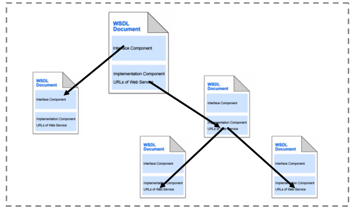

Open Geospatial Consortium Inc.
Date: 2010-04-07
Reference number of this document: OGC 06-121r9
Version: 2.0.0
Category: OGC® Implementation Standard
Editors: Arliss Whiteside
Jim Greenwood
OGC Web Services Common Standard
Copyright © 2010 Open Geospatial Consortium, Inc.
To obtain additional rights of use, visit http://www.opengeospatial.org/legal/.
Warning
This document is an OGC Standard. It is subject to change without notice.
Document type:
OpenGIS® Implementation Standard
Document subtype:
Normatively referenced by other Implementation Standardss
Document stage:
Approved Version 2.0.0
Document language: English
License Agreement
Permission is hereby granted by the Open Geospatial Consortium, ("Licensor"), free of charge and subject to the terms set forth below,
to any person obtaining a copy of this Intellectual Property and any associated documentation, to deal in the Intellectual Property
without restriction (except as set forth below), including without limitation the rights to implement, use, copy, modify, merge, publish,
distribute, and/or sublicense copies of the Intellectual Property, and to permit persons to whom the Intellectual Property is furnished to
do so, provided that all copyright notices on the intellectual property are retained intact and that each person to whom the Intellectual
Property is furnished agrees to the terms of this Agreement.
If you modify the Intellectual Property, all copies of the modified Intellectual Property must include, in addition to the above
copyright notice, a notice that the Intellectual Property includes modifications that have not been approved or adopted by LICENSOR.
THIS LICENSE IS A COPYRIGHT LICENSE ONLY, AND DOES NOT CONVEY ANY RIGHTS UNDER ANY PATENTS
THAT MAY BE IN FORCE ANYWHERE IN THE WORLD.
THE INTELLECTUAL PROPERTY IS PROVIDED "AS IS", WITHOUT WARRANTY OF ANY KIND, EXPRESS OR IMPLIED,
INCLUDING BUT NOT LIMITED TO THE WARRANTIES OF MERCHANTABILITY, FITNESS FOR A PARTICULAR
PURPOSE, AND NONINFRINGEMENT OF THIRD PARTY RIGHTS. THE COPYRIGHT HOLDER OR HOLDERS INCLUDED
IN THIS NOTICE DO NOT WARRANT THAT THE FUNCTIONS CONTAINED IN THE INTELLECTUAL PROPERTY WILL
MEET YOUR REQUIREMENTS OR THAT THE OPERATION OF THE INTELLECTUAL PROPERTY WILL BE
UNINTERRUPTED OR ERROR FREE. ANY USE OF THE INTELLECTUAL PROPERTY SHALL BE MADE ENTIRELY AT
THE USER’S OWN RISK. IN NO EVENT SHALL THE COPYRIGHT HOLDER OR ANY CONTRIBUTOR OF
INTELLECTUAL PROPERTY RIGHTS TO THE INTELLECTUAL PROPERTY BE LIABLE FOR ANY CLAIM, OR ANY
DIRECT, SPECIAL, INDIRECT OR CONSEQUENTIAL DAMAGES, OR ANY DAMAGES WHATSOEVER RESULTING
FROM ANY ALLEGED INFRINGEMENT OR ANY LOSS OF USE, DATA OR PROFITS, WHETHER IN AN ACTION OF
CONTRACT, NEGLIGENCE OR UNDER ANY OTHER LEGAL THEORY, ARISING OUT OF OR IN CONNECTION WITH
THE IMPLEMENTATION, USE, COMMERCIALIZATION OR PERFORMANCE OF THIS INTELLECTUAL PROPERTY.
This license is effective until terminated. You may terminate it at any time by destroying the Intellectual Property together with all
copies in any form. The license will also terminate if you fail to comply with any term or condition of this Agreement. Except as
provided in the following sentence, no such termination of this license shall require the termination of any third party end-user
sublicense to the Intellectual Property which is in force as of the date of notice of such termination. In addition, should the Intellectual
Property, or the operation of the Intellectual Property, infringe, or in LICENSOR’s sole opinion be likely to infringe, any patent,
copyright, trademark or other right of a third party, you agree that LICENSOR, in its sole discretion, may terminate this license
without any compensation or liability to you, your licensees or any other party. You agree upon termination of any kind to destroy or
cause to be destroyed the Intellectual Property together with all copies in any form, whether held by you or by any third party.
Except as contained in this notice, the name of LICENSOR or of any other holder of a copyright in all or part of the Intellectual
Property shall not be used in advertising or otherwise to promote the sale, use or other dealings in this Intellectual Property without
prior written authorization of LICENSOR or such copyright holder. LICENSOR is and shall at all times be the sole entity that may
authorize you or any third party to use certification marks, trademarks or other special designations to indicate compliance with any
LICENSOR standards or specifications.
This Agreement is governed by the laws of the Commonwealth of Massachusetts. The application to this Agreement of the United
Nations Convention on Contracts for the International Sale of Goods is hereby expressly excluded. In the event any provision of this
Agreement shall be deemed unenforceable, void or invalid, such provision shall be modified so as to make it valid and enforceable,
and as so modified the entire Agreement shall remain in full force and effect. No decision, action or inaction by LICENSOR shall be
construed to be a waiver of any rights or remedies available to it.
None of the Intellectual Property or underlying information or technology may be downloaded or otherwise exported or reexported in
violation of U.S. export laws and regulations. In addition, you are responsible for complying with any local laws in your jurisdiction
which may impact your right to import, export or use the Intellectual Property, and you represent that you have complied with any
regulations or registration procedures required by applicable law to make this license enforceable
ii
Copyright © 2012 Open Geospatial Consortium
OGC 06-121r9
Contents
Page
i.
Preface.................................................................................................................... xi
ii.
Document terms and definitions ............................................................................ xi
iii.
Document contributor contact points .................................................................... xii
iv.
Revision history ................................................................................................... xiii
v.
Changes to the OGC Abstract Specification ..........................................................xv
vi.
Future work ............................................................................................................xv
Foreword ......................................................................................................................... xvii
Introduction .................................................................................................................... xviii
1
Scope ......................................................................................................................18
2
Conformance ..........................................................................................................18
3
Normative references ...............................................................................................2
4
Terms and definitions ..............................................................................................4
5
Conventions .............................................................................................................6
5.1
Symbols (and abbreviated terms) ..........................................................................6
5.2
UML notation ........................................................................................................7
5.3
Document terms and definitions ............................................................................8
5.4
Platform-neutral and platform-specific specifications ..........................................9
5.5
Data dictionary tables ..........................................................................................10
6
Document overview ...............................................................................................11
7
GetCapabilities operation.......................................................................................12
7.1
Introduction .........................................................................................................12
7.2
GetCapabilities request ........................................................................................13
7.2.1 GetCapabilities request parameters ...................................................................13
7.2.2 Implementation requirements............................................................................15
7.2.3 GetCapabilities request KVP encoding .............................................................15
7.2.4 GetCapabilities request XML encoding ............................................................17
7.2.5 GetCapabilities request SOAP encoding ..........................................................17
7.3
Parameter discussions ..........................................................................................17
7.3.1 Version parameter .............................................................................................17
7.3.2 Version negotiation ...........................................................................................18
7.3.3 Sections parameter ............................................................................................18
7.3.4 UpdateSequence parameter ...............................................................................19
7.3.5 AcceptFormats parameter .................................................................................20
7.3.6 AcceptLanguages parameter .............................................................................21
7.4
GetCapabilities response .....................................................................................22
7.4.1 Exceptions .........................................................................................................22
7.4.2 Service metadata document contents ................................................................23
7.4.3 Implementation requirements............................................................................25
ii
Copyright © 2010 Open Geospatial Consortium, Inc.
OGC 06-121r9
7.4.4 ServiceIdentification section contents...............................................................26
7.4.4.1 Overview ....................................................................................................26
7.4.5 ServiceProvider section contents ......................................................................28
7.4.6 OperationsMetadata section contents ................................................................29
7.4.7 OperationsMetadata section standard contents .................................................33
7.4.8 Contents section contents ..................................................................................34
7.4.9 Languages section .............................................................................................39
7.4.10 Capabilities document XML encoding .............................................................39
7.4.11 Service metadata XML example .......................................................................41
7.4.12 Capabilities document SOAP encoding ............................................................43
8
Exception reports ...................................................................................................43
8.1
Introduction .........................................................................................................43
8.2
Exception report contents ....................................................................................43
8.3
exceptionCode parameter values .........................................................................45
8.4
―locator‖ parameter values ..................................................................................46
8.5
Exception report XML encoding .........................................................................46
8.6
HTTP STATUS codes for OGC Exceptions .......................................................46
8.7
Exception report SOAP encoding .......................................................................47
9
Other operations .....................................................................................................48
9.1
Introduction .........................................................................................................48
9.2
All operations except GetCapabilities, minimum abilities ..................................48
9.2.1 Operation request parameters ............................................................................48
9.2.2 Operation request KVP encoding example .......................................................49
9.2.3 Operation request XML encoding .....................................................................49
9.2.4 Operation request SOAP encoding ...................................................................50
9.3
GetResourceByID operation ...............................................................................50
9.3.1 Introduction .......................................................................................................50
9.3.2 Operation request ..............................................................................................51
9.3.2.1 GetResourceByID request parameters .......................................................51
9.3.2.2 ResourceID values .....................................................................................52
9.3.2.3 GetResourceByID request KVP encoding .................................................53
9.3.2.4 GetResourceByID request XML encoding ................................................53
9.3.3 Operation response ............................................................................................54
9.3.3.1 GetResourceByID normal response ...........................................................54
9.3.3.2 Exceptions ..................................................................................................54
9.3.4 Examples ...........................................................................................................55
9.3.4.1 GetResourceByID request .........................................................................55
9.3.4.2 GetResourceByID response .......................................................................55
9.4
Operation response ..............................................................................................56
10
Other operation parameters ....................................................................................56
10.1
Introduction .........................................................................................................56
10.2
Bounding box ......................................................................................................57
10.2.1 Basic bounding box parameters ........................................................................57
10.2.2 WGS 84 bounding box parameters ...................................................................58
10.2.3 Bounding box KVP encoding ...........................................................................59
10.2.4 Bounding box XML encoding ..........................................................................61
Copyright © 2010 Open Geospatial Consortium, Inc.
iii
OGC 06-121r9
10.2.5 Bounding box use ..............................................................................................61
10.3
Coordinate reference system references ..............................................................62
10.3.1 Overview ...........................................................................................................62
10.3.2 URL references .................................................................................................63
10.3.3 URN references .................................................................................................64
10.4
Lists of references ................................................................................................64
10.5
Format parameters ...............................................................................................65
10.6
Data descriptions .................................................................................................66
10.6.1 Basic metadata parameters ................................................................................66
10.6.2 Mappings to common queryable and returnable properties ..............................70
10.6.3 Basic set of description parameters ...................................................................70
10.6.4 Brief set of data identification parameters ........................................................72
10.6.5 Metadata parameter encoding ...........................................................................74
10.6.6 XML examples ..................................................................................................74
10.7
Multilingual text encoding ..................................................................................75
10.7.1 Introduction .......................................................................................................75
10.7.2 UML model .......................................................................................................75
10.7.3 Scoping rules .....................................................................................................76
10.8
Additional Parameters .........................................................................................77
10.8.1 Overview ...........................................................................................................77
10.8.2 AdditionalParameters contents..........................................................................77
10.8.3 XML encoding of Additional Parameters .........................................................79
10.8.4 Operations metadata for AdditionalParameters ................................................79
10.8.5 Examples ...........................................................................................................79
10.9
Temporal Conventions addressing TimeZone Offset and Service handling .......80
11
Operation request and response encoding..............................................................81
11.1
General HTTP rules .............................................................................................81
11.2
HTTP GET ..........................................................................................................82
11.3
Reserved and encoded characters in HTTP GET URLs .....................................83
11.4
HTTP POST ........................................................................................................83
11.5
KVP encoding .....................................................................................................84
11.5.1 Introduction .......................................................................................................84
11.5.2 Capitalization ....................................................................................................84
11.5.3 Parameter value lists .........................................................................................84
11.5.4 Numeric and boolean values .............................................................................84
11.5.5 Parameter names ...............................................................................................85
11.5.6 Nested KVP encoding of dependent parameters ...............................................85
11.5.6.1 Introduction ................................................................................................85
11.5.6.2 Nested KVP syntax ....................................................................................86
11.6
XML encoding .....................................................................................................87
11.6.1 Introduction .......................................................................................................87
11.6.2 Capitalization ....................................................................................................87
11.6.3 XML Schema documentation ...........................................................................87
11.6.4 Namespaces .......................................................................................................87
11.6.5 XML Schema extension and restriction ............................................................88
11.6.6 Application schemas .........................................................................................88
iv
Copyright © 2010 Open Geospatial Consortium, Inc.
OGC 06-121r9
11.7
HTTP responses ...................................................................................................90
11.7.1 Introduction .......................................................................................................90
11.7.2 HTTP status codes ............................................................................................90
11.7.3 HTTP Response body .......................................................................................90
11.8
SOAP encoding ...................................................................................................91
12
Guidance for OWS Implementation Specifications ...............................................92
12.1
General guidance .................................................................................................92
12.2
XML Schema Document file names ...................................................................93
12.3
XML Schema Document file versions ................................................................93
12.4
XML Schema Document locations .....................................................................93
12.5
Base URL references resource describing server ................................................94
12.6
Valid URLs in operation requests and responses ................................................95
12.7
Can define more XML global names ..................................................................96
13
Other data structures ..............................................................................................97
13.1
Introduction .........................................................................................................97
13.2
Domain ................................................................................................................97
13.2.1 Overview ...........................................................................................................97
13.2.2 Domain data structure encoding......................................................................102
13.3
Manifest .............................................................................................................103
13.3.1 Introduction .....................................................................................................103
13.3.2 Manifest contents ............................................................................................104
13.3.3 XML encoding ................................................................................................108
13.3.4 Finding the manifest ........................................................................................109
13.4
OperationResponse ............................................................................................109
13.4.1 Introduction .....................................................................................................109
13.4.2 XML encoding ................................................................................................111
13.5
InputData ...........................................................................................................112
13.5.1 Introduction .....................................................................................................112
13.5.2 XML encoding ................................................................................................115
13.6
nilValue .............................................................................................................116
13.6.1 Introduction .....................................................................................................116
13.6.2 XML Encoding ...............................................................................................116
Annex A (normative) Abstract test suite ........................................................................118
A.1
Introduction .......................................................................................................118
A.2
Specification test module ..................................................................................119
A.3
Client test module ..............................................................................................128
A.4
Server test module .............................................................................................131
Annex B (normative) XML schema documents .............................................................138
Annex C (informative) UML model ...............................................................................140
C.1
Introduction .......................................................................................................140
C.2
OWS Get Capabilities package .........................................................................142
C.3
OWS Service Identification package .................................................................144
C.4
OWS Service Provider package ........................................................................145
C.5
OWS Operations Metadata package ..................................................................146
C.6
OWS Contents package .....................................................................................147
Copyright © 2010 Open Geospatial Consortium, Inc.
v
OGC 06-121r9
C.7
OWS Exception Report package .......................................................................148
C.8
OWS Get Resource By ID package ...................................................................149
C.9
OWS Data Identification and Common packages .............................................150
C.10 OWS Domain package ......................................................................................152
C.11 Manifest package ...............................................................................................153
C.12 OWS Input Output package ...............................................................................154
Annex D (informative) Reasons for parameters .............................................................155
D.1
Introduction .......................................................................................................155
D.2
Reasons for GetCapabilities request parameters ...............................................155
D.3
Reasons for service metadata sections ..............................................................157
D.4
Reasons for ServiceIdentification parameters ...................................................157
D.5
Reasons for ServiceProvider parameters ...........................................................159
D.6
Reasons for OperationsMetadata parameters ....................................................161
D.7
Reasons for all operations except GetCapabilities minimum parameters .........163
D.8
Reasons for Exception Report parameters ........................................................163
D.9
Use cases for Sections parameter ......................................................................164
D.10 Requirements for exception reports ...................................................................164
D.11 Version negotiation backward compatibility .....................................................165
D.12 Bounding box requirements ..............................................................................166
D.13 Minimum bounding boxes .................................................................................167
D.14 CRS reference requirements ..............................................................................168
D.15 Reasons for data metadata parameters ..............................................................173
D.16 Reasons for DomainType data structure ...........................................................175
D.17 Reasons for additional parameters ....................................................................177
Annex E (informative) Guidelines for creating and using WSDL .................................178
E.1
General ..............................................................................................................178
E.2
Relationship to OGC service descriptions .........................................................178
E.3
WSDL Publication .............................................................................................179
E.4
General authoring style ......................................................................................179
E.5
Late binding operations with WSDL .................................................................180
E.6
Request, Response Handling .............................................................................184
E.7
SOAP Binding Descriptions ..............................................................................185
E.8
Service Preconditions ........................................................................................185
Annex F (informative) Mapping of OWS Common Metadata to ISO 19119:
Geographic information – Services .....................................................................187
Bibliography ....................................................................................................................189
vi
Copyright © 2010 Open Geospatial Consortium, Inc.
OGC 06-121r9
Figures
Page
Figure 1 — UML notations ............................................................................................................. 7
Figure 2 — GetCapabilities operation request UML class diagram.............................................. 13
Figure 3 — GetCapabilities operation response UML class diagram ........................................... 24
Figure 4 — ServiceIdentification section UML class diagram ..................................................... 26
Figure 5 — ServiceProvider section UML class diagram ............................................................. 28
Figure 6 — OperationsMetadata section UML class diagram ...................................................... 30
Figure 7 — Contents section UML class diagram ........................................................................ 35
Figure 8 — Exception report UML class diagram ........................................................................ 44
Figure 9 — Minimum operation request UML class diagram ...................................................... 48
Figure 10 — GetResourceByID request UML class diagram ....................................................... 51
Figure 11 — BoundingBox UML class diagram........................................................................... 57
Figure 13 — Basic metadata parameters UML class diagram ...................................................... 67
Figure 14 — Description UML class diagram .............................................................................. 71
Figure 15 — Identification UML class diagram ........................................................................... 72
Figure 16 — LanguageString UML class...................................................................................... 75
Figure 17 — AdditionalParameters UML diagram ....................................................................... 78
Figure 18 — Time Zone Offset Inter-Zone Web Service Request ................................................ 81
Figure 19 — Domain UML class diagram .................................................................................... 98
Figure 20 — Manifest package UML class diagram ................................................................... 104
Figure 21 — Input Output package partial UML class diagram ................................................. 111
Figure 22 — Input Output package partial UML class diagram ................................................. 113
Figure C.1 — OWS Common UML package diagram ............................................................... 141
Figure C.2 — OWS Get Capabilities UML package .................................................................. 143
Figure C.3 — OWS Service Identification UML package .......................................................... 144
Figure C.4 — OWS Service Provider UML package ................................................................. 145
Figure C.5 — OWS Operations Metadata UML package ........................................................... 146
Figure C.6 — OWS Contents UML package .............................................................................. 147
Figure C.7 — OWS Exception Report UML package ................................................................ 148
Figure C.8 — OWS Get Resource By ID UML package ............................................................ 149
Figure C.9 — OWS Data Identification and Common UML packages ...................................... 151
Figure C.10 — OWS Domain UML package ............................................................................. 152
Figure C.11 — Manifest UML package ...................................................................................... 153
Copyright © 2010 Open Geospatial Consortium, Inc.
vii
OGC 06-121r9
Figure C.12 — OWS Input Output UML package ...................................................................... 154
Figure E.1 — Conceptual modularization of WSDL definitions ................................................ 180
Figure E.2 — Abstract WSDL message ...................................................................................... 181
Figure E.3 — Concrete WSDL message ..................................................................................... 181
Figure E.4 — Choice Approach .................................................................................................. 182
Figure E.5 — Choice Approach in combination with the extension mechanism ........................ 183
Figure E.6 — Generic Approach ................................................................................................. 184
viii
Copyright © 2010 Open Geospatial Consortium, Inc.

OGC 06-121r9
Tables
Page
Table 1 — Contents of data dictionary tables ............................................................................... 10
Table 2 — Subjects discussed in this document............................................................................ 11
Table 3 — Parameters in GetCapabilities operation request ......................................................... 14
Table 4 — Implementation of parameters in GetCapabilities operation request .......................... 15
Table 5 — GetCapabilities operation request URL parameters .................................................... 16
Table 6 — Meanings of section name values ................................................................................ 19
Table 7
Use of UpdateSequence parameter .............................................................................. 20
Table 8 — Exception codes for GetCapabilities operation ........................................................... 23
Table 9 — Parameters included in service metadata document .................................................... 24
Table 10 — Section names and contents ....................................................................................... 25
Table 11 — Parameters included in ServiceIdentification section ................................................ 27
Table 12 — Parameters included in ServiceProvider section ....................................................... 29
Table 13 — Parts of OperationsMetadata section ......................................................................... 31
Table 14 — Parts of Operation data structure ............................................................................... 32
Table 15 — Parts of DCP data structure ....................................................................................... 32
Table 16 — Parts of HTTP data structure ..................................................................................... 32
Table 17 — Parts of Request Method data structure ..................................................................... 33
Table 18 — Required values of OperationsMetadata section attributes ....................................... 33
Table 19 — Optional values of OperationsMetadata section attributes ........................................ 33
Table 20 — Parts of Contents section ........................................................................................... 35
Table 21 — Minimum parts of DatasetSummary data structure ................................................... 37
Table 22 — Inheritance of parts of DatasetSummary data structure............................................. 38
Table 23 — Languages data structure ........................................................................................... 39
Table 24 — Language data structure ............................................................................................. 39
Table 25 — Parameters in Exception element .............................................................................. 44
Table 26 — Additional parameters in Exception Report .............................................................. 45
Table 27 — Standard exception codes and meanings ................................................................... 45
Table 28 — Standard exception codes and meanings ................................................................... 47
Table 29 — Parameters used by all operation requests except GetCapabilities ............................ 49
Table 30 — Parameters in GetResourceByID operation request .................................................. 52
Table 31 — GetResourceByID operation request URL parameters ............................................. 53
Table 32 — GetResourceByID exception codes and meanings .................................................... 54
Copyright © 2010 Open Geospatial Consortium, Inc.
ix
OGC 06-121r9
Table 33 — Parameters included in BoundingBox data type ....................................................... 58
Table 34 — Parameters included in WGS84BoundingBox data type ........................................... 59
Table 36 — Basic metadata parameters ........................................................................................ 68
Table 37 — Parameter mappings to common queryable and returnable properties ...................... 70
Table 40 — Structure of operation request using HTTP GET ...................................................... 83
Table 41 — Reserved characters in operation request strings ....................................................... 83
Table 42 — Parts of DomainType data structure .......................................................................... 99
Table 43 — Parts of UnNamedDomainType data structure ........................................................ 100
Table 44 — Parts of PossibleValues data structure ..................................................................... 100
Table 45 — Parts of ValuesUnit data structure ........................................................................... 101
Table 46 — Parts of AllowedValues data structure .................................................................... 101
Table 47 — Parameters in Range data structure ......................................................................... 101
Table 48 — Values of RangeClosure enumeration ..................................................................... 102
Table 49 — Parameters in DomainMetadata data structure ........................................................ 102
Table 50 — Parameters in ValuesReference data structure ........................................................ 102
Table 51 — Manifest data structure ............................................................................................ 105
Table 52 — ReferenceGroup data structure ................................................................................ 106
Table 53 — ReferenceBase data structure .................................................................................. 107
Table 54 — Reference data structure .......................................................................................... 108
Table 55 — ServiceReference data structure .............................................................................. 114
Table D.1 — Reasons for GetCapabilities request parameters ................................................... 156
Table D.2 — Reasons against GetCapabilities parameters ......................................................... 157
Table D.3 — Reasons for service metadata sections ................................................................... 157
Table D.4 — Reasons for ServiceIdentification parameters ....................................................... 158
Table D.5 — Corresponding parameter names ........................................................................... 159
Table D.6 — Reasons for ServiceProvider parameters and subsections ..................................... 159
Table D.7 — Corresponding parameter names ........................................................................... 160
Table D.8 — Reasons for OperationsMetadata parameters and subsections .............................. 162
Table D.9 — Reasons for parameters in all operation requests except GetCapabilities ............. 163
Table D.10 — Reasons for Exception Report parameters ........................................................... 163
Table D.11 — Reasons against Exception Report parameters .................................................... 163
Table D.12 — Reasons for data metadata parameters ................................................................. 173
Table D.13 — Other data metadata parameters .......................................................................... 175
x
Copyright © 2010 Open Geospatial Consortium, Inc.
OGC 06-121r9
i.
Preface
This is Version 2.0 of the OGC Web Services Common Standard, which supersedes
Version 1.0 [OGC 05-008] and Version 1.1 [OGC 06-121r3]. This version contains the
change requests documented in OGC 05-070r4, 06-015r3, 06-048, 06-056r1, 06-094r1,
06-099, 06-100, 06-101, 06-117, 06-120r1, 06-127r1, 06-150r1, 07-042, 07-059r5, 07-
141, 08-011r1, 08-012r3, 08-013, 08-016r3, 08-142, 08-143r1, and 09-201r1.
This document specifies many of the aspects that are, or should be, common to all or
multiple OGC Web Service (OWS) interface Implementation Standards. These common
aspects are primarily some of the parameters and data structures used in operation
requests and responses. Of course, each such Implementation Standard must specify the
additional aspects of that interface, including specifying all additional parameters and
data structures needed in all operation requests and responses.
Each existing OGC-approved and draft OWS interface Implementation Standard should
consider this document to be a formal change request to modify that standard in its next
revision to agree with all the relevant material specified herein. Each such specification is
also requested to normatively reference each relevant part of this document, instead of
repeating the same material in each such OGC standard. Such normative references can
take the form of stating ―This TBD shall include TBD as specified in Subclause TBD of
OGC document TBD.‖ Such normative references are expected to:
a) Reduce the work needed to edit and read each any OGC standard
b) Reduce the length of each OGC standard
c) Increase interoperability among OGC standardsby increasing commonality and
discouraging non-essential differences
d) Reduce the work needed to program OWS clients and servers
To simplify preparation of new or revised OGC standards that normatively reference this
document, a template for such specifications has been prepared, and use of this template
is recommended. The current version of this template is document [OGC 05-009r2].
Suggested additions and improvements of this specification are welcome and encouraged.
Such suggestions should be submitted as formal change requests, using the change
request template [OGC 06-112].
ii.
Document terms and definitions
This document uses the specification terms defined in Subclause 5.3, which is based on
the ISO/IEC Directives, Part 2, Rules for the structure and drafting of International
Copyright © 2010 Open Geospatial Consortium, Inc.
xi
OGC 06-121r9
Standards. In particular, the word ―shall‖ (not ―must‖) is the verb form used to indicate a
requirement to be strictly followed to conform to this specification.
iii.
Document contributor contact points
All questions regarding this document should be directed to the editor or the contributing
members of the Standards Working Group:
Name
Organization
Arliss Whiteside
BAE Systems E&IS
Steven Keens
PCI Geomatics
Stan Tillman
Intergraph
Rhonda Fetters
Ionic
Peter Vretanos
CubeWerx, Inc.
Peter Schut
Natural Resources Canada
Jim Greenwood
SeiCorp, Inc.
Marie-Lise Vautier
Institut Geographique National (IGN)
Bastian Schäffer
University of Muenster - IfGI
Rüdiger Gartmann
con terra
xii
Copyright © 2010 Open Geospatial Consortium, Inc.
OGC 06-121r9
iv.
Revision history
Date
Release
Editor
Primary clauses
Description
modified
2003-10-06 0.0.0
Arliss
All
Initial version
Whiteside
2003-10-16 0.1.0
Arliss
7.2.2.3, 7.4.3, 8.1
First approved discussion paper, small
Whiteside
additions based on discussions in
Architecture WG
2003-11-26 0.1.1
Arliss
7.2.2, 7.2.3, 7.2.5,
Large additions to 7.2.5; significant editing
Whiteside
8.1, 8.3, 11, A.2, A.4, of 7.4; addition of 11, B, and C; editing of
B, C
most other parts
2003-12-22 0.1.2
Arliss
6-11, A-C
Document reorganized, edited most parts
Whiteside
2004-01-05 0.1.3
Arliss
5.1, 7, A-C
Document edited to correct errors and make
Whiteside
clearer
2004-01-11 0.1.4
Arliss
7.4, A-C
Modify two sections of service metadata
Whiteside
2004-01-15 0.2.0
Arliss
7.4.2, 7.4.5, cover, i
Corrected Tables 7 and 13, edited to reflect
Whiteside
approval as a Recommendation Paper
2004-03-05 0.2.1
Arliss
ii, 10, 11, B, C.12 to
Added specifications of bounding boxes
Whiteside
C.14
and CRS references, added more
information on encoding, miscellaneous
editing
2004-03-29 0.2.2
Arliss
3, 4.1, 7.3.3, 7.3.5,
A few small changes plus many wording
Whiteside
7.4.2, 7.4.6, 7.4.7,
improvements
11.3, A, C.11
2004-04-12 0.2.3
iii, 7.4.6, 7.4.7, 9.2.3, Various small improvements, changed
11.3, A, C.6
owsCommon/xsd to
owsGetCapabilities.xsd
2004-06-17 0.3.1
Arliss
10.3
In URNs, changed ―ogc‖ to ―opengis‖
Whiteside
2004-12-17 0.3.2
Arliss
i, 10.3, 10.6, B, C.15 Added material on data identifications, in
Whiteside
URNs, changed ―opengis‖ to ―ogc‖,
updated UML model
2005-01-25 0.4.0
Arliss
Cover, i
Edited for approved Recommendation
Whiteside
Paper
2005-05-03 1.0.0
Greg
Cover, I
Edited for public release as Approved
Buehler
Implementation Specification
2005-05-23 05-008r1 Arliss
7.4.6, 7.4.7, 9.4, 9.5,
Added draft extensions and improvements
Whiteside
10.7, 11.5.5, 12.5, 12 developed by the Harmonization WG
6, A, B, C
2006-09-11 1.1.0
Arliss
i, 4, 5.4, 5.5, 7.4.7,
Included change requests OGC 05-070r4,
Whiteside
8.3, 9.4, 10.7, 12, 13, 06-015r3, 06-048, 06-056r1, 06-099, 06-
A, B, C, D.16
100, 06-101, 06-117, and 06-120r1
2006-09-18 1.1.0
Arliss
5.5, 7.2.2, 7.4.3,
Corrected typographical errors and
Whiteside
7.4.4, 7.4.6, 7.4.7,
improved wording
7.4.8, 9.4.2.2, 10.6.1,
10.6.4, 11.5.5,
13.3.2, C.0
Copyright © 2010 Open Geospatial Consortium, Inc.
xiii
OGC 06-121r9
Date
Release
Editor
Primary clauses
Description
modified
2006-10-19 1.1.0
Arliss
I, 3, 7.4.4,7.4.8, 8.2,
Included change request 06-127r1 plus
Whiteside
10.2.1, 10.6.1,
several UML corrections
10.6.2, 10.6.4,
10.6.5, 10.7,
13.3.2,13.4.1, 13.5.1,
C.3, C.4, C.6 through
C.12
2008-01-28 1.10
Steven
3, 7.2.3, 7.2.4, 7.4.4,
Updated Service Type (and it URN
Keens
7.4.10
description) and
AbbreviatedServiceTypeIdentifier.
2008-09-12 1.2.0
Jim
3, 7.2.1 through
Included change requests OGC 06-094r1,
Greenwood 7.2.4, 7.3.6, 7.4.2,
06-150r1, 07-042, 07-059r5, 07-141, 08-
7.4.4, 7.4.7, 7.4.9,
011r1, 08-013, 08-016r3, 08-142, 08-143r1
7.4.11, 7.4.12, 8.6,
plus updated schema and
8.7, 9.2.3, 9.2.4,
grsGeneralReferenceSystems.xsd and
9.4.3.1, 10.1 through owsAdditionalParameters.xsd
10.3, 10.8, 10.8.1,
11.1, 11.5.6, 11.8,
D.17, D.18, Annex E
2008-12-19 1.2.0
Jim
Cover, iv, 7.2.1, 9.3,
Included change request 09-201r1 plus
Greenwood 9.4, Annex A
incorporated the new Abstract Test Suite;
normative language was added to require
implementation of at least one of HTTP
GET or HTTP POST; corrected
typographical errors and made small
improvements to wording
2009-01-15 1.2.0
Jim
Cover, iii, iv, 7.2.1-
Changed ―AcceptLanguage‖ to
Greenwood 7.2.4, 7.3.6, 7.4.9,
―AcceptLanguages‖ throughout the
9.2.1-9.2.3, 11.5.6.1, document; Updated the schemas
A.4.1.6, A.4.2.2.7,
owsDataIdentification.xsd and
C.2
owsGetCapabilities.xsd; Updated Figures 2
and C.2; Corrected typographical errors and
made improvements to wording
2009-02-04 1.2.0
Jim
Cover, Preface, iii,
Updated the Preface to reflect version
Greenwood iv, 13.6.2
number and change requests; Updated
Contributors; Changed ―owsAdditions.xsd‖
to ―owsAdditionalParameters.xsd‖
throughout the document; Updated the
schemas owsAdditionalParamters.xsd and
owsAll.xsd; Replaced ―version=1.0.0‖ with
―version=1.2.0‖ in various schemas
xiv
Copyright © 2010 Open Geospatial Consortium, Inc.
OGC 06-121r9
Date
Release
Editor
Primary clauses
Description
modified
2009-08-31 1.2.0
Jim
Cover, iii, iv, vi, 3,
Updated future work items; Updated 1.1.0
Greenwood 7.2.1, 7.2.2, 7.3.6,
to 1.2.0 throughout the document; Updated
8.6, 10.2, 10.2.1,
various figures in regards to
10.3.3, 10.6.6,
acceptLanguages; Changed country code
10.8.5, 11.6.5, 11.7,
value to ―es‖; Expanded Table 28 to allow
13.3.3, 13.4.2, Annex for ―NoApplicableCode‖; Removed ―10.2
C, Annex E
General Reference Systems‖; Removed
second sentence in 10.2.1; Removed the
first sentence of Footnote B in Table 33;
Removed the last paragraph in 10.9.5;
Updated to reflect OGC’s naming authority
documents; Deleted GML sentence in
11.6.5; Expanded subclause 11.7; Changed
schema location to owsAll.xsd from
owsManifest.xsd; Adjusted informative vs.
informative language throughout Annex E;
Corrected typographical errors and added
soft links throughout; Corrected three
URNs
2009-07-09 1.2.0
Carl Reed
Various
Correct use of specification to be
―standard‖ and fic copyright date.
2010-03-15 1.2.0
Jim
Cover, iv, 3, 7.4.2,
Updated to r9; expanded Normative
Greenwood 8.7, 10.1, 10.2.4,
References; updated Figure 3; adjusted
10.2.5, Tables 53, 54 SOAP XML fragment; removed CRS
& 55, Annex D18,
General reference system-related items;
Annex F
Added new Annex F – Mapping of OWS
Common Metadata to ISO 19119
v.
Changes to the OGC Abstract Specification
The OGC® Abstract Specification does not require changes to accommodate the technical
contents of this document.
vi.
Future work
This document should be extended to include other aspects that should be common
among multiple OWS Implementation Standards, such as:
a) Collaboration and convergence with other standards development organizations
b) Improve organization of service metadata documents, such as to better match WSDL
and UDDI
c) More of the contents of service metadata documents, such as for query language
metadata
d) More common operations, such as for the Transaction operation
Copyright © 2010 Open Geospatial Consortium, Inc.
xv
OGC 06-121r9
e) Expansion to handle chained services
f) Better accommodate use of various human languages, where applicable in most
operation requests and responses
g) Improve and expand Annex A abstract test suites
h) Resolve EDITOR’S QUESTIONS stated in Subclause 12.5 and elsewhere
i) Multilingual update – Figure 12 and Table 35 have cardinalities of 0-n for the Title
and Abstract fields. Consider restricting the cardinality to 0-1.
j) Multilingual update – Update other properties, such as PositionName,
ContactInstructions to support declaring language (xml:lang) – when different from
document’s declared language.
xvi
Copyright © 2010 Open Geospatial Consortium, Inc.
OGC 06-121r9
Foreword
This revision of the OGC Web Services Common Standard supersedes and replaces OGC
Implementation Specification 05-008.
This document includes four annexes; Annexes A and B are normative, and Annexes C
and D are informative.
Attention is drawn to the possibility that some of the elements of this document may be
the subject of patent rights. The Open Geospatial Consortium Inc. shall not be held
responsible for identifying any or all such patent rights.
Recipients of this document are requested to submit, with their comments, notification of
any relevant patent claims or other intellectual property rights of which they may be
aware that might be infringed by any implementation of the standard set forth in this
document, and to provide supporting documentation.
Copyright © 2010 Open Geospatial Consortium, Inc.
xvii
OGC 06-121r9
Introduction
This document specifies many of the aspects that are, or should be, common to all or
multiple OWS interface Implementation Standards. Those specifications currently
include the Web Map Service (WMS), Web Feature Service (WFS), and Web Coverage
Service (WCS). These common aspects include: operation request and response contents;
parameters included in operation requests and responses; and encoding of operation
requests and responses.
This revision is an expanded version of this document.
OGC Web Services Common Standard
1 Scope
This document specifies many of the aspects that are, or should be, common to all or
multiple OWS interface Implementation Standards. The common Implementation
Specification aspects specified by this document currently include:
a) Operation request and response contents, most partial
b) Parameters and data structures included in operation requests and responses
c) XML and KVP encoding of operation requests and responses
One use of this document is as a normative reference from future versions of OWS
interface Implementation Specifications. Those standards currently include the Web Map
Service (WMS), Web Feature Service (WFS), and Web Coverage Service (WCS). Rather
than continuing to repeat this material in each such Implementation Specification, each
specification should normatively reference each relevant part of this document.
2 Conformance
Conformance with this specification shall be checked using all the relevant abstract tests
specified in the Abstract Test Suite provided in Annex A of this specification. More
specifically, all the relevant abstract tests in Annex A shall be included or referenced in
the Abstract Test Suite in each separate specification that normatively references this
specification.
xviii
Copyright © 2010 Open Geospatial Consortium, Inc.
OGC 06-121r9
3 Normative references
The following normative documents contain provisions which, through reference in this
text, constitute provisions of this document. For dated references, subsequent
amendments to, or revisions of, any of these publications do not apply. For undated
references, the latest edition of the normative document referred to applies.
CGI, The Common Gateway Interface, National Center for Supercomputing Applications,
http://hoohoo.ncsa.uiuc.edu/cgi/
IETF RFC 2045 (November 1996), Multipurpose Internet Mail Extensions (MIME) Part
One: Format of Internet Message Bodies, Freed, N. and Borenstein N., eds.,
http://www.ietf.org/rfc/rfc2045.txt
IETF RFC 2141 (May 1997), URN Syntax, R. Moats, http://www.ietf.org/rfc/rfc2141.txt
IETF RFC 2396 (August 1998), Uniform Resource Identifiers (URI): Generic Syntax,
Berners-Lee, T., Fielding, N., and Masinter, L., eds., http://www.ietf.org/rfc/rfc2396.txt
IETF RFC 2616 (June 1999), Hypertext Transfer Protocol – HTTP/1.1, Gettys, J.,
Mogul, J., Frystyk, H., Masinter, L., Leach, P., and Berners-Lee, T., eds.,
http://www.ietf.org/rfc/rfc2616.txt
IETF RFC 4646 (September 2006), Tags for Identifying Languages, Phillips, A. and
Davies, M., eds., http://www.ietf.org/rfc/rfc4646.txt
IANA, Internet Assigned Numbers Authority, MIME Media Types, available at
http://www.iana.org/assignments/media-types/
ISO/IEC Directives, Part 2. Rules for the structure and drafting of International
Standards
ISO 4217:2001, Codes for the representation of currencies and funds
ISO 8601:2000(E), Data elements and interchange formats - Information interchange -
Representation of dates and times.
ISO 19115:2003, Geographic information — Metadata
ISO 19115:2003/Cor 1:2006, Geographic information – Metadata – Technical
Corrigendum 1
ISO 19119:2005, Geographic information — Services
ISO 19119:2005/Amd 1:2008, Geographic information – Services – Extensions of the
service metadata model
ISO 19123:2005, Geographic information - Schema for coverage geometry and functions
2
Copyright © 2010 Open Geospatial Consortium, Inc.
OGC 06-121r9
OGC 02-112, OpenGIS Abstract Specification Topic 12: OpenGIS Service Architecture
OGC 03-105r1, OpenGIS Geography Markup Language (GML) Implementation
Specification, Version 3.1, February 2004
OGC 04-046r3, The OpenGIS Abstract Specification, Topic 2: Spatial Referencing by
Coordinates, August 2004
OGC 04-092r4, OpenGIS Geography Markup Language (GML) Implementation
Specification Schemas, Version 3.1.1
OGC 07-092r1, Definition identifier URNs in OGC namespace
OGC 08-008r2, OpenGIS® Abstract Specification Proposed Topic 19: General Reference
Systems
OGC 08-015, The OpenGIS® Abstract Specification Topic 2: Spatial referencing by
coordinates
OGC 09-046r1, OGC Naming Authority: Policies and Procedures
07-107r1, OGC URN Document, October 2007
W3C Recommendation January 1999, Namespaces In XML,
http://www.w3.org/TR/2000/REC-xml-names.
W3C Recommendation 4 February 2004, Extensible Markup Language (XML) 1.0 (Third
Edition), http://www.w3.org/TR/REC-xml
W3C Recommendation 2 May 2001: XML Schema Part 0: Primer,
http://www.w3.org/TR/2001/REC-xmlschema-0-20010502/
W3C Recommendation 2 May 2001: XML Schema Part 1: Structures,
http://www.w3.org/TR/2001/REC-xmlschema-1-20010502/
W3C Recommendation 2 May 2001: XML Schema Part 2: Datatypes,
http://www.w3.org/TR/2001/REC-xmlschema-2-20010502/
W3C Recommendation 24 June 2003: SOAP Version 1.2 Part 1: Messaging Framework,
http://www.w3.org/TR/SOAP/
W3C Recommendation 25 January 2005: SOAP Message Transmission Optimization
Mechanism
W3C Recommendation 25 January 2005: XML-binary Optimized Packaging
In addition to this document, this specification includes a number of normative XML
Schema Document files. Following approval of this document, these files will be posted
online at the URL http://schemas.opengis.net/ows/2.0/. These files are also bundled with
Copyright © 2010 Open Geospatial Consortium, Inc.
3
OGC 06-121r9
the present document. In the event of a discrepancy between the bundled and online
versions of the XML Schema Document files, the online files shall be considered
authoritative.
4 Terms and definitions
For the purposes of this document, the following terms and definitions apply.
4.1
bounding box
portion of a coordinate space that lies between a lower bound and an upper bound in each
dimension of a coordinate reference system
NOTE
A bounding box can be used to express spatial-temporal query constraints, or to describe the
(approximate) location and extent of geospatial data. A bounding box is often called the "minimum
bounding rectangle" of a geospatial data item when its lower and upper bounds in each dimension are those
of the data item.
EXAMPLES
Rectangle in two spatial dimensions, rectangular solid in three spatial dimensions
4.2
capabilities XML
service metadata encoded in XML
4.3
client
software component that can invoke an operation from a server
4.4
geographic information
information concerning phenomena implicitly or explicitly associated with a location
relative to the Earth [ISO 19128 draft]
4.5
interface
named set of operations that characterize the behaviour of an entity [ISO 19119]
4.6
operation
specification of a transformation or query that an object may be called to execute [ISO
19119]
4.7
parameter
variable whose name and value are included in an operation request or response
4
Copyright © 2010 Open Geospatial Consortium, Inc.
OGC 06-121r9
4.8
platform
the underlying infrastructure in a distributed system (Adapted from ISO 19119)
NOTE
A platform describes the hardware and software components used in a distributed system. To
achieve interoperability, an infrastructure that allows the components of a distributed system to interoperate
is needed. This infrastructure, which may be provided by a Distributed Computing Platform (DCP), allows
objects to interoperate across computer networks, hardware platforms, operating systems and programming
languages. (Adapted from Subclause 10.1 of ISO 19119)
4.9
platform-neutral (specification)
independent of a specific platform (Adapted from ISO 19119)
NOTE
It is assumed that one platform-neutral service specification will be the basis for multiple
platform-specific service specifications. Multiple platform-specific specifications are necessary because of
the variety of DCPs and the differences in the way in which they support the functional requirements. One
platform-neutral service specification is needed to support interoperability of multiple platform-specific
specifications. (Adapted from Subclause 10.2 of ISO 19119)
4.10
platform-specific (specification)
dependent on a specific platform (Adapted from ISO 19119)
4.11
request
invocation of an operation by a client
4.12
response
result of an operation, returned from a server to a client
4.13
resource
any addressable unit of information or service [IETF RFC 2396]
EXAMPLES
Examples include files, images, documents, programs, and query results.
NOTE
The means used for addressing a resource is a URI (Uniform Resource Identifier) reference
4.14
server
service instance
a particular instance of a service [ISO 19119 edited]
4.15
service
distinct part of the functionality that is provided by an entity through interfaces [ISO
19119]
Copyright © 2010 Open Geospatial Consortium, Inc.
5
OGC 06-121r9
capability which a service provider entity makes available to a service user entity at the
interface between those entities [ISO 19104 terms repository]
4.16
service metadata
metadata describing the operations and geographic information available at a server
[ISO 19128 draft]
4.17
version
version of an Implementation Specification (document) and XML Schemas to which the
requested operation conforms
NOTE
An OWS Implementation Specification version may specify XML Schemas against which an
XML encoded operation request or response must conform and should be validated.
5 Conventions
5.1
Symbols (and abbreviated terms)
CRS
Coordinate Reference System
DCP
Distributed Computing Platform
EPSG
European Petroleum Survey Group
GML
Geography Markup Language
HTTP
Hypertext Transfer Protocol
ISO
International Organization for Standardization
KVP
Keyword Value Pair
MIME
Multipurpose Internet Mail Extensions
OGC
Open Geospatial Consortium
OWS
OGC Web Service, or Open Web Service
TBD
To Be Determined
TBR
To Be Reviewed
UML
Unified Modeling Language
URI
Universal Resource Identifier
URL
Uniform Resource Locator
URN
Universal Resource Name
WCS
Web Coverage Service
WFS
Web Feature Service
WMS
Web Map Service
6
Copyright © 2010 Open Geospatial Consortium, Inc.
OGC 06-121r9
XML
Extensible Markup Language
1D
One Dimensional
2D
Two Dimensional
3D
Three Dimensional
4D
Four Dimensional
5.2
UML notation
All the diagrams in this document are presented using the Unified Modeling Language
(UML) static structure diagram. The UML notations used in this document are described
in the diagram below.
Association between classes
Association Name
Class #1
Class #2
role-1
role-2
Association Cardinality
1..*
Class
Class
Only one
One or more
Class
n
0..*
Class
Zero or more
Specific number
Class
0..1
Optional (zero or one )
Aggregation between classes
Class Inheritance (subtyping of classes)
Aggregate
Superclass
Class
Component
Component
Component
Subclass #1
Subclass #2
Subclass #n
Class #1
Class #2
Class #n
……….
…………..
Figure 1 — UML notations
In these UML class diagrams, the class boxes with a light background are the primary
classes being shown in this diagram, often the classes from one UML package. The class
boxes with a gray background are other classes used by these primary classes, usually
classes from other packages.
In these class diagrams, the following stereotypes of UML classes are used:
a) <<DataType>> A descriptor of a set of values that lack identity (independent
existence and the possibility of side effects). A DataType is a class with no
operations, whose primary purpose is to hold the information.
Copyright © 2010 Open Geospatial Consortium, Inc.
7
OGC 06-121r9
k) <<Enumeration>> A data type whose instances form a list of alternative literal
values. Enumeration means a short list of well-understood potential values within a
class.
l) <<CodeList>> A flexible enumeration for expressing a long list of potential
alternative values. An enumeration is used if the list alternatives are completely
known; a code list is used if only likely alternatives are known.
m) <<Interface>> A definition of a set of operations that is supported by objects having
this interface. An Interface class cannot contain any attributes.
n) <<Type>> A stereotyped class used for specification of a domain of instances
(objects), together with the operations applicable to the objects. A Type class may
have attributes and associations.
o) <<Union>> A list of alternate attributes where only one of those attributes can be
present at any time.
NOTE
All the stereotypes listed above are adapted from Subclauses 6.8.2 and D.8.3 of ISO 19103. Not
all of these stereotypes are used in this document, but all can be used by a document that normatively
references this document.
In this document, the following standard data types are used:
a) CharacterString – A sequence of characters
b) Boolean – A value specifying TRUE or FALSE
c) URI – An identifier of a resource that provides more information
d) URL – An identifier of an on-line resource that can be electronically accessed
e) Integer – An integer number
f) Double – A double precision floating point number
5.3
Document terms and definitions
Following the ISO/IEC Directives, Part 2, ―Rules for the structure and drafting of
International Standards‖, the following specification terms and definitions are used in this
document:
a) shall – verb form used to indicate a requirement to be strictly followed to conform to
this specification, from which no deviation is permitted
p) should – verb form used to indicate desirable ability or use, without mentioning or
excluding other possibilities
q) may – verb form used to indicate an action permissible within the limits of this
specification
r) can – verb form used for statements of possibility
s) informative – a part of a document that is provided for explanation, but is not
required
8
Copyright © 2010 Open Geospatial Consortium, Inc.
OGC 06-121r9
t) normative – a part of a standards document that is required
u) annex – an auxiliary part of a document, called an ―appendix‖ in United States
English
v) clause – a major part of a document, called a ―section‖ or ―paragraph‖ in United
States English
w) subclause – a secondary part of a clause or annex, called a ―subsection‖ in United
States English
5.4
Platform-neutral and platform-specific specifications
As specified in Clause 10 of OGC Abstract Specification Topic 12 ―OpenGIS Service
Architecture‖ (which contains ISO 19119), this document includes both platform-neutral
and platform-specific specifications. ISO 19119 also specifies that platform-neutral
models ―shall be described in UML according to the rules and guidelines in ISO/TS
19103.‖ Also, ―a service specification shall not be considered complete until it has a
platform-neutral model and at least one platform-specific model‖.
NOTE
Clause 10 of ISO 19119 also uses ―Distributed Computing Platform (DCP)‖ as a synonym for
―platform‖, and uses ―platform independent‖ as a synonym for ―platform neutral‖.
This document first specifies each operation request and response, and each other
parameter and data structure, in platform-neutral fashion. This is done using a table for
each data structure, which lists and defines the parameters and other data structures
contained. These tables serve as data dictionaries for the UML class diagrams preceding
these tables and for the UML model in Annex C.
EXAMPLES 1
Platform-neutral specifications are contained in Subclauses 7.2.1, 7.3, 7.4.1 through
7.4.7, 8.2 through 8.4, 9.2.1, 9.3, 13.2.1, 13.3.2, 13.4.1, and 13.5.1.
The specified platform-neutral data can be encoded in many alternative ways, each
appropriate to one or more specific platforms. This document now specifies encoding
appropriate for use of HTTP GET transfer of operations requests (using KVP encoding),
and for use of HTTP POST transfer of operations requests (using XML or KVP
encoding). However, the same operation requests and responses (and other data) could be
encoded for many other specific platforms, including SOAP/WSDL (there may be
multiple SOAP/WSDL DCPs).
EXAMPLES 2
Platform-specific specifications for KVP encoding are contained in Subclauses 7.2.3,
9.2.2, and 10.2.3.
EXAMPLES 3
Platform-specific specifications for XML encoding are contained in Subclauses 7.2.4,
7.4.10, 7.4.11, 8.5, 9.2.3, 10.2.4, 13.2.2, 13.3.3, 13.4.2, and 13.5.2.
For compliance with Clause 10 of OGC Topic 12 and ISO 19119, specific OWS
specifications should follow the same pattern as used here. That is, operation requests and
responses should first be specified in platform-neutral fashion, using similar tables that
serve as data dictionaries for the UML model included. Each platform-neutral
specification should be followed by one or more platform-specific encodings of this data.
Copyright © 2010 Open Geospatial Consortium, Inc.
9
OGC 06-121r9
These platform-specific encodings shall be included for each specific platform supported
by that specific OWS specification.
5.5
Data dictionary tables
The UML model data dictionary is specified herein in a series of tables. The contents of
the columns in these tables are described in Table 1. The contents of these data dictionary
tables are normative, including any table footnotes.
Table 1 — Contents of data dictionary tables
Column title
Column contents
Names
Two names for each included parameter or association (or data structure).
(left column)
The first name is the UML model attribute or association role name.
The second name uses the XML encoding capitalization specified in Subclause
11.6.2.
Some names in the tables may appear to contain spaces, but no names contain
spaces.
Definition
Specifies the definition of this parameter (omitting un-necessary words such as
(second column)
―a‖, ―the‖, and ―is‖). If the parameter value is the identifier of something, not
a description or definition, the definition of this parameter should read
something like ―Identifier of TBD‖.
Data type and value
Normally contains two items:
(third column)
The mandatory first item is often the data type used for this parameter, using
or
data types appropriate in a UML model, in which this parameter is a named
Data type
attribute of a UML class. Alternately, the first item can identify the class (or
(if no second
data structure) referenced by this association, and references a separate table
items are included
used to specify the contents of that class (or data structure).
in rows of table)
The optional second item in the third column of each table should indicate the
source of values for this parameter, the alternative values, or other value
information, unless the values are quite clear from other listed information.
Multiplicity and use
Normally contains two items:
(right or fourth
The mandatory first item specifies the multiplicity and optionality of this
column)
parameter in this data structure, either ―One (mandatory)‖, ―One or more
or
(mandatory)‖, ―Zero or one (optional)‖, or ―Zero or more (optional)‖. (Yes,
Multiplicity
these are redundant, but we think ISO wants this information.)
(if no second
The second item in the right column of each table should specify how any
items are included
multiplicity other than ―One (mandatory)‖ shall be used. If that parameter is
in rows of table)
optional, under what condition(s) shall that parameter be included or not
included? If that parameter can be repeated, for what is that parameter
repeated?
When the data type used for this parameter, in the third column of such a table, is an
enumeration or code list, all the values specified by a specific OWS shall be listed,
together with the meaning of each value. When this information is extensive, these values
and meanings should be specified in a separate table that is referenced in the third column
of this table row.
10
Copyright © 2010 Open Geospatial Consortium, Inc.
OGC 06-121r9
6 Document overview
This document is organized into clauses that discuss the subjects listed in Table 2.
Table 2 — Subjects discussed in this document
Subject
XML names of specified parameters and data structures
GetCapabilities operation,
service
ProviderName
provided by all OWSs
request
ProviderSite
(Clause 7)
AcceptVersions
ServiceContact
Sections
Operation
updateSequence
Parameter
AcceptFormats
Constraint
AcceptLanguages
ExtendedCapabilities
ServiceIdentification
name
ServiceProvider
DCP
OperationsMetadata
Metadata
Contents
HTTP
ServiceType
Get
ServiceTypeVersion
Post
Profile
URL
Title
DatasetSummary
Abstract
OtherSource
Keywords
Fees
AccessConstraints
Exception report responses,
ExceptionReport
locator
for all operations of all
Exception
version
OWSs
ExceptionText
lang
(Clause 8)
exceptionCode
Other operations (except
service
GetResourceByID
GetCapabilities)
request
ResourceID
(Clause 9)
version
Other parameters, used by
BoundingBox
Keywords
multiple OWSs
WGS84BoundingBox
OutputFormat
(Clause 10)
LowerCorner
Metadata
UpperCorner
AvailableCRS
dimensions
AccessConstraint
crs
Fees
CRS
PointOfContact
Identifier
Language
Title
Description
Abstract
Identification
Encoding of OWS operation
(none)
requests and responses
(Clause 11)
Guidance for Implementation
(none)
specifications
(Clause 12)
Copyright © 2010 Open Geospatial Consortium, Inc.
11
OGC 06-121r9
Subject
XML names of specified parameters and data structures
Other data structures, used by
Domaintype
rangeClosure
multiple OWSs
UnNamedDomaintype
DataType
(Clause 13)
name
Meaning
defaultValue
ValuesUnit
PossibleValues
UOM
AllowedValues
ReferenceSystem
AnyValue
Manifest
NoValues
ReferenceGroup
ValuesReference
ReferenceBase
Value
Reference
Range
OperationResponse
MinimumValue
InputData
MaximumValue
ServiceReference
Spacing
The annexes to this document provide related informative information on:
a) Abstract test suite
b) Complete XML Schema Documents, ready to use (normative)
c) UML model of data structures specified herein (informative)
d) Reasons for including various parameters (informative)
NOTE
The following clauses and annexes are written to be relatively independent of one another.
They may thus be read in any order, depending on reader knowledge and interests. For example, Clause 11
―Operation request and response encoding‖ contains detailed information supporting Clauses 7 through 10,
and may be read first or last.
7 GetCapabilities operation
7.1
Introduction
This clause partially specifies the GetCapabilities operation provided by each OWS. The
mandatory GetCapabilities operation allows any client to retrieve metadata about the
capabilities provided by any server that implements an OWS interface Implementation
Specification. The normal response to the GetCapabilities operation is a service metadata
document that is returned to the requesting client. This service metadata document
primarily contains metadata about the specific server abilities (such as about the specific
data and formats available from that server). This service metadata also makes an OWS
server partially self-describing, supporting late binding of clients.
NOTE
A specific OWS Implementation Specification or implementation can provide additional
operation(s) returning service metadata for a server. Such operations can return service metadata using
different data structures and/or formats, such as WSDL or ebRIM. When such operation(s) have been
sufficiently specified and shown more useful, the OGC may decide to require those operation(s) instead of,
or in addition to, the current GetCapabilities operation.
12
Copyright © 2010 Open Geospatial Consortium, Inc.
OGC 06-121r9
7.2
GetCapabilities request
7.2.1
GetCapabilities request parameters
A request to perform the GetCapabilities operation shall use the data structure described
in Figure 2 and specified in Table 3.
GetCapabilities
+ service: CharacterString
+ request: CharacterString = "GetCapabilities" {frozen}
+ acceptVersions [0..1]: Sequence<CharacterString>
+ sections [0..1]: List<Section>
+ acceptFormats [0..1]: Sequence<CharacterString>
+ updateSequence [0..1]: CharacterString
+ acceptLanguages [0..1]: Sequence<CharacterString>
«CodeList»
Section
+ serviceIdentification
+ serviceProvider
+ operationMetadata
+ contents
+ all
Figure 2 — GetCapabilities operation request UML class diagram
Copyright © 2010 Open Geospatial Consortium, Inc.
13
OGC 06-121r9
Table 3 — Parameters in GetCapabilities operation request
Names a
Definition
Data type and value
Multiplicity and use
service
Service type identifier
Character String type, not empty
One (mandatory)
service
Value is OWS type abbreviation
(e.g., ―WMS‖, ―WFS‖)
request
Operation name
Character String type, not empty
One (mandatory)
request
Value is operation name
(e.g., ―GetCapabilities‖)
accept
Prioritized sequence of one
Sequence of Character String
Zero or one (optional)
Versions
or more specification
type, each not empty
When omitted, return
Accept
versions accepted by
Value is list of x.y.z ―version‖
latest supported
Versions
client, with preferred
values
version (see
versions listed first
Subclause 7.3.2)
sections
Unordered list of zero or
Sequence of Character String
Zero or one (optional)
Sections
more names of requested
type, each not empty
When omitted or not
sections in complete
Value is list of section names
supported by server,
service metadata
return complete
document b
Allowed section names are
specified by each
service metadata
Implementation Specification
document c
update
Service metadata document
Character String type, not empty
Zero or one (optional)
Sequence
version, value is
―increased‖ whenever
Values are selected by each
When omitted or not
update
server, and are always opaque
supported by server,
Sequence
any change is made in
to clients
return latest service
complete service
metadata document c
metadata document
accept
Prioritized sequence of zero Sequence of Character String
Zero or one (optional)
Formats
or more response formats
type, each not empty
When omitted or not
Accept
desired by client, with
Value is list of format identifiers
supported by server,
Formats
preferred formats listed
return service
first
Identifiers are MIME types of
formats useful for service
metadata document
metadata documents
using MIME type
"text/xml"
acceptLang
Sequence of one or more
Sequence of Character String
Zero or one (optional)
uages
languages for human
type, not empty
For use see section
AcceptLan
readable text requested
Value is list of language
7.3.6
guages
by the client.
identifiers as specified in IETF
RFC 4646, plus ―*‖
a
Although some values listed in the ―Name‖ column appear to contain spaces, they shall not contain spaces.
b
The ―Sections‖ parameter specifies which XML elements within a service metadata document shall be
returned, within a (usually abbreviated) ―Capabilities‖ element. The allowed section name values shall be
specified by each Implementation Specification, as specified in Subclause 7.3.3.
c
When in conflict, the ―UpdateSequence‖ parameter shall take precedence over the ―Sections‖ parameter when
both parameters are present in a request. Table 7 lists the conflict condition.
NOTE 1
The name capitalization rules used here are specified in Subclauses 5.5 and 11.6.2.
NOTE 2
The data type of many parameters is specified as ―Character String type, not empty‖. In the
XML Schemas specified herein, these parameters are encoded with the xsd:string type, which allows an
empty string. Nevertheless, ―not empty‖ is a normative requirement on the values of the associated
parameter, since all contents of these tables are normative.
14
Copyright © 2010 Open Geospatial Consortium, Inc.
OGC 06-121r9
7.2.2
Implementation requirements
The ―Multiplicity and use‖ column in Table 4 specifies the optionality of each listed
parameter in the GetCapabilities operation request. Table 4 specifies the implementation
of those parameters by OWS clients and servers.
Table 4 — Implementation of parameters in GetCapabilities operation request
Name
Multiplicity
Client implementation
Server implementation
service
One
Each parameter shall be
Each parameter shall be implemented
(mandatory)
implemented by all clients,
by all servers, checking that each
using specified value
parameter is received with specified
request
One
value
(mandatory)
Accept
Zero or one
Should be implemented by all
Shall be implemented by all servers,
Versions
(optional)
software clients, using
checking if parameter is received
specified values
with specified value(s)
Sections
Zero or one
Each parameter may be
Each parameter may be implemented
(optional) a
implemented by each client
by each server
update
Zero or one
If parameter not provided,
If parameter not implemented or not
Sequence
shall expect default response
received, provide default response
(optional) a
If parameter provided, shall
If parameter implemented and
Accept
Zero or one
allow default or specified
received, provide specified
Formats
(optional) a
response
response
AcceptLan
Zero or one
Should be implemented by all
Shall be implemented by servers
guages
(optional)
clients
offering multilingual capabilities
a
A specific OWS is allowed to make mandatory or prohibit server implementation of this parameter. If a
specific OWS makes server implementation mandatory, then this parameter can also be made mandatory in the
operation request, requiring client implementation of this parameter. Similarly, if a specific OWS prohibits server
implementation of this parameter, then the parameter should also be prohibited in the operation request,
prohibiting client implementation of this parameter.
7.2.3
GetCapabilities request KVP encoding
The KVP encoding of the GetCapabilities operation request shall be as shown in Table 5,
with example values appropriate for WCS 1.0.0.
Copyright © 2010 Open Geospatial Consortium, Inc.
15
OGC 06-121r9
Table 5 — GetCapabilities operation request URL parameters
Name and example a
Optionality and use
Definition and format
Service=WCS
Mandatory
Abbreviated service type identifier
text b
Request=GetCapabilities
Mandatory
Operation name text
AcceptVersions=1.0.0,0.8.3 Optional
Prioritized sequence of one or more
When omitted, return latest
specification versions accepted by
supported version (see
client, with preferred versions listed
Subclause 7.3.2)
first
Sections=Contents
Optional
Comma-separated unordered list of
When omitted or not supported
zero or more names of sections of
by server, return complete
service metadata document to be
service metadata document
returned in service metadata
document
UpdateSequence=XXX
Optional
Service metadata document version,
(where XXX is character
value is ―increased‖ whenever any
When omitted or not supported
string previously provided
by server, return latest service
change is made in complete service
by server)
metadata document version
metadata document
AcceptFormats= text/xml
Optional
Prioritized sequence of zero or more
When omitted or not supported
response formats desired by client,
by server, return service
with preferred formats listed first
metadata document using
MIME type "text/xml"
AcceptLanguages=en-
Optional
List of languages desired by the client
CA,fr-CA
When not supported by server,
for all human readable text in the
return human readable text in
response, in order of preference. For
a language of the server’s
every element, the first matching
choice
language available from the server
shall be present in the response. See
section 7.3.6
a
All parameter names are listed here using mostly lower case letters. However, any parameter name
capitalization shall be allowed in KVP encoding, see Subclause 11.5.2.
b
A specific OWS specification shall define the abbreviated service type identifier to be used by all
implementing services.
In a specific OWS Implementation Specification, this table shall be supported by
specification of the section names allowed in the Sections parameter, with the meaning of
each value for that specific OWS. These section names and meanings shall be based on
Subclause 7.4.2.
An example of a GetCapabilities request message encoded using KVP is:
http://hostname:port/path?SERVICE=WCS&REQUEST=GetCapabilities&ACCEPTVER
SIONS=1.0.0 0.8.3&SECTIONS=Contents&UPDATESEQUENCE=XYZ123&
ACCEPTFORMATS=text/xml&ACCEPTLANGUAGES=en-CA fr-CA
This example includes all six possible parameters, but only the ―SERVICE‖ and
―REQUEST‖ parameters are required.
16
Copyright © 2010 Open Geospatial Consortium, Inc.
OGC 06-121r9
7.2.4
GetCapabilities request XML encoding
The XML Schema document named owsServiceIdentification.xsd contains
documentation of the meaning of each element, attribute, and type shall be considered
normative as specified in Subclause 11.6.3.
An example of a GetCapabilities request message encoded in XML is:
<?xml version="1.0" encoding="UTF-8"?>
<GetCapabilities xmlns="http://www.opengis.net/ows/2.0"
xmlns:ows="http://www.opengis.net/ows/2.0"
xmlns:xsi="http://www.w3.org/2001/XMLSchema-instance"
xsi:schemaLocation="http://www.opengis.net/ows/2.0
fragmentGetCapabilitiesRequest.xsd" service="WCS"
updateSequence="XYZ123" acceptLanguages=”en-CA”>
<!-- Maximum example for WCS. -->
<AcceptVersions>
<Version>1.0.0</Version>
<Version>0.8.3</Version>
</AcceptVersions>
<Sections>
<Section>Contents</Section>
</Sections>
<AcceptFormats>
<OutputFormat>text/xml</OutputFormat>
</AcceptFormats>
<AcceptLanguages>
<Language>en-CA</Language>
<Language>fr-CA</Language>
</AcceptLanguages>
</GetCapabilities>
This example includes all of the possible XML attributes and elements, but only the
―service‖ attribute is required, within the required GetCapabilities root element.
7.2.5
GetCapabilities request SOAP encoding
Specific OWS servers may implement SOAP version 1.2 transfer of the GetCapabilities
operation request as specified in Subclause 11.8, using the XML encoding specified
above.
7.3
Parameter discussions
7.3.1
Version parameter
Each OWS Implementation Specification revision shall specify a version number, which
enables interacting clients and servers to agree on which version of the specification they
are conforming to. A version number shall contain three non-negative integers separated
by decimal points, in the form "x.y.z". The integers y and z shall not exceed 99.
Through the evolution of specifications, each service will have a number of versions
defined for it, each with a different version number. Each OWS shall have its own
Copyright © 2010 Open Geospatial Consortium, Inc.
17
OGC 06-121r9
sequence of version numbers; the version numbers of different services are independent
and therefore may overlap. When the version number changes, it shall increase
monotonically, with the first integer being the most significant. There may be gaps in the
numerical sequence, and some numbers may denote draft versions. Servers and their
clients need not support all defined versions, but are encouraged to support multiple
versions.
7.3.2
Version negotiation
Version negotiation is performed using the optional AcceptVersions parameter in the
GetCapabilities operation request. Although optional, client software should always
include this parameter, to simplify version negotiation. The value of this parameter is a
sequence of protocol version numbers that the client supports, in order of client
preference.
The server, upon receiving a GetCapabilities request, shall scan through this list and find
the first version number that it supports. It shall then return a service metadata document
conforming to that version of the specification, and containing that value of the ―version‖
parameter. If the list does not contain any version numbers that the server supports, the
server shall return an Exception with exceptionCode="VersionNegotiationFailed".
To ensure backward compatibility, clients shall also be prepared to accept an unknown
response and treat this situation as an indication that version negotiation has failed.
Furthermore, if a server receives a GetCapabilities request without the AcceptVersions
parameter, it shall return a service metadata document that is compliant to the highest
protocol version that the server supports. This makes it convenient for humans to make
requests manually, and allows for forward compatibility with possible future incarnations
of version negotiation.
This new version negotiation process is designed to be compatible with the old-style
version negotiation that was defined in earlier versions of the various OWS
specifications, as described in Subclause D.11.
7.3.3
Sections parameter
The Sections parameter value shall contain an unordered list of zero or more names of the
XML elements within a service metadata XML document that shall be returned. When
one or more names are listed, those section(s) shall be included within a (usually
abbreviated) service metadata document returned. If no names are listed, the service
metadata returned need not contain any of the sections that could be listed.
The allowed section name values shall be specified in each Implementation Specification,
and shall include, but are not limited to, all the values specified in Table 6 that are
relevant to the specific OWS. The values allowed shall include ―All‖.
18
Copyright © 2010 Open Geospatial Consortium, Inc.
OGC 06-121r9
Table 6 — Meanings of section name values
Section name
Meaning
ServiceIdentification Return ServiceIdentification element in service metadata document
ServiceProvider
Return ServiceProvider metadata element in service metadata document
OperationsMetadata
Return OperationsMetadata element in service metadata document
Contents
Return Contents metadata element in service metadata document
Languages
Return Languages metadata element in service metadata document
All
Return complete service metadata document, containing all elements
NOTE 1
All of the section name values listed in Table 6 are expected to be common for most OWSs, but
some can add additional sections.
Client implementation of the Sections parameter is optional. When any server receives a
GetCapabilities operation request without this parameter, it shall return the complete
service metadata document.
Server implementation of the Sections parameter is optional. When a server does not
implement this Sections parameter, it shall ignore this parameter if present in a
GetCapabilities operation request, and shall return the complete service metadata
document.
NOTE 2
A referencing OGC Implementation Specification is expected to leave optional the
implementation of the Sections parameter, by both servers and clients. This flexibility allows
Implementation Specification Application Profiles to make server implementation of this parameter either
required or prohibited.
7.3.4
UpdateSequence parameter
The optional UpdateSequence parameter may be used for maintaining the consistency of
a client cache of the contents of a service metadata document. The parameter value may
be an integer, a timestamp in [ISO 8601:2000] format, or any other number or string.
A server may include an UpdateSequence value in its service metadata document. If
supported, the UpdateSequence value shall be increased by the server when any changes
are made to the complete service metadata document (for example, when new coverages
are added to the WCS service). The server is the sole judge of lexical ordering sequence.
A client may include this parameter in its GetCapabilities request. The response of the
server based on the presence and relative value of updateSequence in the client request
and the server metadata shall be as specified in Table 7.
Copyright © 2010 Open Geospatial Consortium, Inc.
19

OGC 06-121r9
Table 7
Use of UpdateSequence parameter
Operation request
Service metadata
Server response
UpdateSequence value
UpdateSequence value
None
Any
most recent service metadata document
Any
None
most recent service metadata document
Equal
Equal
service metadata document with only
―Version‖ and ―UpdateSequence‖
parameters a
Lower
Higher
most recent service metadata document
Higher
Lower
exception report with exceptionCode =
InvalidUpdateSequence a
a
When the request contains a ―Sections‖ parameter and an ―UpdateSequence‖ parameter then the server
shall ignore the ―Sections‖ parameter and respond as specified by this table, see Table 3 – footnote c.
7.3.5
AcceptFormats parameter
The optional AcceptFormats parameter may be used by a client to attempt to negotiate a
GetCapabilities operation response format other than "text/xml". When included in an
operation request, this parameter shall contain a list of the alternative MIME types that
the client wants to be returned, listed in the client's preferred order. The MIME type
"text/xml" is always an implicit last option, but may be explicitly included.
When a server implements the AcceptFormats parameter and receives a value for it, the
server shall return the Capabilities document in the format of the first MIME type in this
list that it is capable of returning. When not received or not implemented, the server shall
return the Capabilities document in normal XML, using the MIME type "text/xml". All
clients and servers shall implement the "text/xml" MIME type for the GetCapabilities
operation. Since "text/xml" is always an implicit last option, the server always has an
implemented MIME type to use to return a Capabilities document to the client.
Server and client implementation of this parameter is optional. A variety of alternative
formats (with different MIME types) have been proposed for transfer of XML
documents, but many have not yet been completely specified, and none has yet been
widely accepted. Many of these alternative formats reduce the size of the transferred
message, thus reducing the communication time and load.
This document does not now specify any alternative format, but the AcceptFormats
parameter is included to provide flexibility to allow experimentation and allow other
documents to identify allowed alternative format(s). A specific OWS Implementation
Specification that expects to interoperably use this AcceptFormats parameter shall thus
identify the alternative format(s) that may be used (or that shall be implemented by
servers).
EXAMPLE 1
One possible alternative format is the ISO standard for binary encoding of MPEG-7 or
―BiM‖ as specified in [ISO/IEC 15938-1], with MIME type "application/x-bix".
20
Copyright © 2010 Open Geospatial Consortium, Inc.
OGC 06-121r9
EXAMPLE 2
Another possible alternative format is ―BXML‖ as specified in [OGC 03-002r8], with
MIME type "application/x-bxml".
NOTE
A non-XML format whose MIME type is well-defined might be used if a method is specified to
convert a Capabilities XML document, as specified herein, into that alternative format.
7.3.6
AcceptLanguages parameter
The AcceptLanguages parameter, an optional parameter for all OWS requests (unless
otherwise specified as required), identifies the client’s preferred set of languages for the
response. Its value is a list of one or more language tags in order of client preference from
left to right. The language tags shall be RFC 4646 5 character codes either, complete (e.g.
―en-CA‖), or abbreviated 2 character codes (e.g. ―en‖). In addition to the RFC 4646
codes, the server shall support the single special value ―*‖ which is used to indicate ―any
language‖.
For each human language text string in the server’s response, including strings plotted
into graphic images (such as in a WMS GetMap response), the server shall return that
text string in most preferred language it has available. If the server cannot return a text
string in any of the client-preferred languages, and the AcceptLanguages list includes the
special value ―*‖, then it shall return that string in a language of the server’s choice. If
there is no match between the list of languages in the AcceptLanguages parameter and
the list of languages supported by the server, the service shall return an
InvalidParameterValue exception.
The AcceptLanguages parameter in conjunction with the list of fully-supported languages
that may appear in the capabilities document of a server (see section XXXX), allows the
client to ensure that the response contains a single predetermined language or a best-
effort language.
For predetermined semantics, the client shall select one language code from the list of
fully supported languages reported in the capabilities document. The client shall identify
this language using the AcceptLanguages parameter in all subsequent requests to this
server. Since the client request identifies a language listed in the capabilities document,
the client is guaranteed to receive the response in that language.
For language negotiation with best-effort semantics, the client may ignore the list of
languages reported in the capabilities document, and instead use the AcceptLanguages
parameter to request the language(s) that the user prefers, in order of preference. As
indicated above, the server shall respond in the best-available language according to the
user’s preferences. There is no guarantee that the response will uniformly contain the
same language since each text string will be returned in the best available language as
specified in the user’s list. The heuristics for determining best-effort matches are not
defined by this specification, and are left to the discretion of the server.
Examples:
1)
AcceptLanguages = en-CA fr-CA, fr
Copyright © 2010 Open Geospatial Consortium, Inc.
21
OGC 06-121r9
Language list supported by the server = en-US, es
Response language is ―en-US‖ because ―en‖ is a prefix to ―en-US‖
2)
AcceptLanguages =es en
Language list supported by the server = fr
Response is an exception (in default language)
3)
AcceptLanguages = en-CA fr-CA
Language list supported by the server = en
Response is an exception because ―en-ca‖ is not a prefix to ―en‖
4)
AcceptLanguages = en-CA,*
Server Supported Language List = fr
Response language is ―fr‖ because ―*‖ is included
If the AcceptLanguages parameter is not present in an OWS request, the server should
attempt to honor the Accept-Language MIME header in the HTTP request (usually
passed to the process by the web server by means of the HTTP_ACCEPT_LANGUAGE
environment variable instead.
OWS services may choose to specify where to place the xml:lang attribute(s) in a
response, based on the expected usage characteristics of the service. For unilingual
responses the most logical and efficient implementation may be to have the xml:lang
attribute present only once in the response, as an attribute of the root element. For
responses which contain more than one language, or services such as WMS that
potentially cascade responses from other services, xml:lang should be found as an
attribute of each human-readable text element found in the response. When human-
readable text strings are present in the response, a server supporting multi-lingual
responses shall identify the language of each and every human readable text element of
the response for which the language is known with the language of the text indicated by
an ―xml:lang‖ attribute that applies to the element. The ―xml:lang‖ attribute(s) shall be
populated with the appropriate IETF RFC 4646 identifier, as per section 2.12 of
―Extensible Markup Language (XML) 1.0 (Fourth Edition)‖
[http://www.w3.org/TR/REC-xml/]. If the language of a text element is unknown, the
―xml:lang‖ attribute shall be specified as the empty string.
Servers that ignore the AcceptLanguages parameter entirely are trivially compliant.
7.4
GetCapabilities response
7.4.1
Exceptions
In the event that an OWS server encounters an error servicing a GetCapabilities operation
request, it shall return an exception report message as specified in Clause 8. The allowed
exception codes shall include those listed in Table 8, assuming the updateSequence
parameter is implemented by the server.
22
Copyright © 2010 Open Geospatial Consortium, Inc.
OGC 06-121r9
Table 8 — Exception codes for GetCapabilities operation
exceptionCode value
Meaning of code
―locator‖ value
MissingParameterValue
Operation request does not include a parameter
Name of missing
value
parameter
InvalidParameterValue
Operation request contains an invalid parameter
Name of parameter
value
with invalid value
VersionNegotiationFailed List of versions in ―AcceptVersions‖ parameter
None, omit ―locator‖
value, in GetCapabilities operation request, did
parameter
not include any version supported by this server
InvalidUpdateSequence
Value of (optional) updateSequence parameter, in None, omit ―locator‖
GetCapabilities operation request, is greater
parameter
than current value of service metadata
updateSequence number
NoApplicableCode
No other exceptionCode specified by this service
None, omit ―locator‖
and server applies to this exception
parameter
7.4.2
Service metadata document contents
A service metadata document shall be the normal response to a client from performing
the GetCapabilities operation, and shall contain metadata appropriate to the specific
server for the specific OWS. For a server with tightly coupled data that it serves or uses,
this service metadata document shall include metadata about that data. That service
metadata document shall be encoded in XML, and shall use XML Schemas to specify the
correct document contents and organization.
NOTE
The term ―Capabilities XML‖ document was previously usually used for what is here called
―service metadata‖ document. The term ―service metadata‖ is now used because it is more descriptive and
is compliant with OGC Abstract specification topic 12 [ISO 19119]. This ―service metadata‖ includes
metadata for a specific server and for tightly coupled data that it serves.
Each service metadata document shall include, in addition to other data, the parameters
described in Figure 3 and specified in Table 9.
Copyright © 2010 Open Geospatial Consortium, Inc.
23
OGC 06-121r9
{MD_Metadata::identificationInfo =
SV_ServiceIdentification}
OWSServiceMetadata
+ version: CharacterString
1 + updateSequence: CharacterString [0..1]
1
1
1
{byReference}
+isoMetadata
0..1
+serviceIdentification
0..1
ISO 19115::
OWS Service
MD_Metadata
Identification::
ServiceIdentification
+contents 0..1
+serviceProvider 0..1
«DataType»
OWS Contents::
OWS Service
OWSContents
Provider::
ServiceProvider
+operationsMetadata 0..1
OWS Operations
Metadata::
OperationsMetadata
Figure 3 — GetCapabilities operation response UML class diagram
Table 9 — Parameters included in service metadata document
Names
Definition
Data type and value
Multiplicity and use
version
Specification version for
Character String type, not
One (mandatory)
version
operation, in this case for
empty
GetCapabilities operation
Value is specified by each
response
Implementation
Specification and
Schemas version (see
Subclause 7.3.1)
updateSequence
Service metadata document
Character String type, not
Zero or one
updateSequence
version, value is
empty
(optional)
―increased‖ whenever any
Values are selected by
Omitted when
change is made in complete
each server, and are
parameter not
service metadata document
always opaque to clients
supported by server
Each service metadata document shall include a set of document sections that correspond
to the set of section names specified for that specific OWS, as specified in Subclause
7.3.3 and used in the Sections parameter specified in Subclause 7.2. The common set of
section names and meanings shall be as specified in Table 10. Each specific OWS shall
use these section names and meanings when relevant, and may specify additional sections
when needed. All four sections of a Capabilities document specified in Table 10 shall be
implemented by all OWS servers, unless clearly not relevant to that specific OWS and
thus replaced by substitute relevant sections.
24
Copyright © 2010 Open Geospatial Consortium, Inc.
OGC 06-121r9
When human-readable text strings are present in the response, a server supporting multi-
lingual responses shall identify the language of each and every human readable text
element of the response, with the language of the text indicated by a ―lang‖ attribute that
applies to the element. The ―lang‖ attribute(s) shall be populated with the appropriate
IETF RFC 4646 identifier, as per section 2.12 of ―Extensible Markup Language (XML)
1.0 (Fourth Edition)‖ [http://www.w3.org/TR/REC-xml/].
Table 10 — Section names and contents
Section name
Contents
ServiceIdentification Metadata about this specific server. The contents and organization of this
section should be the same for all OWSs.
ServiceProvider
Metadata about the organization operating this server. The contents and
organization of this section should be the same for all OWSs.
OperationsMetadata
Metadata about the operations specified by this service and implemented by this
server, including the URLs for operation requests. The basic contents and
organization of this section shall be the same for all OWSs, but individual
services may add elements and/or change the optionality of optional elements.
Contents
Metadata about the data served by this server. The contents and organization of
this section are specific to each OWS type, as defined by that Implementation
Specification.
Whenever applicable, this section shall contain a set of dataset descriptions,
which should each be based on the MD_DataIdentification class specified in
ISO 19115 and used in ISO 19119.
Languages
Languages supported by this server. The contents and organization of this
section shall be the same for all OWSs.
The allowed section names with their meanings should be specified in an Implementation
Specification using a table such as Table 10 above, or by referencing this subclause and
table. All of the section name values listed in Table 10 are expected to be common for
most OWSs.
7.4.3
Implementation requirements
The ―Multiplicity and use‖ columns in Table 9 through Table 21 specify the optionality
of each listed parameter and data structure in the GetCapabilities operation response. All
the ―mandatory‖ parameters and data structures shall be implemented by all OWS
servers, using a specified value or values.
Implementation of the ―updateSequence‖ parameter defined in Table 9 is optional by
OWS servers. As indicated in Table 4, the ―updateSequence‖ parameter may be
implemented by each server, but a specific OWS is allowed to require or prohibit server
implementation of this parameter. If a specific OWS requires server implementation of
this parameter, this parameter shall also be required in the operation response. Similarly,
if a specific OWS prohibits server implementation of this parameter, this parameter shall
also be prohibited in the operation response.
Copyright © 2010 Open Geospatial Consortium, Inc.
25
OGC 06-121r9
All other ―optional‖ parameters and data structures, in the GetCapabilities operation
response, should be implemented by all OWS servers using specified values, whenever
and wherever each is considered useful metadata for that server.
7.4.4
ServiceIdentification section contents
7.4.4.1 Overview
The ServiceIdentification section of a service metadata document contains basic metadata
about this specific server. The contents and organization of this section should be the
same for all OWSs. The ServiceIdentification section shall include the parameters and
parts described in Figure 4 and specified in Table 11.
NOTE
If a specific OWS adds contents to this ServiceIdentification section, that addition should be
considered in a future version of this OWS Common Specification.
Description
Keywords
(from OWS Data Identi ficati on)
(from ISO 19115 Subset)
+keywords
+ title [0..*] : LanguageString
+ keyword [1..*] : LanguageString
+ abstract [0..*] : LanguageString 1
0..*
1
<<DataType>>
LanguageString
(from ISO 19115 Subset)
+ value : CharacterString
+ lang [0..1] : CharacterString
+type
0..1
ServiceIdentification
+ serviceTypeVersion [1..*] : CharacterString
Code
+ profile [0..*] : CharacterString
(from ISO 19115 Subset)
1
1
+ fees [0..1] : CharacterString
+ code : CharacterString
+ accessConstraints [0..1] : CharacterString
+serviceType + codeSpace [0..1] : URI
Figure 4 — ServiceIdentification section UML class diagram
26
Copyright © 2010 Open Geospatial Consortium, Inc.
OGC 06-121r9
Table 11 — Parameters included in ServiceIdentification section
Names a
Definition
Data type
Multiplicity and use
serviceType
A service type URN from a
URN b
One (mandatory)
ServiceType
registry of services, normally
used for machine-to-machine
communication
serviceType
Versions of this service type
Character string type,
One or more (mandatory)
Version
implemented by this server
not empty
One for each version
ServiceType
implemented by server,
Version
unordered
profile
Identifier of OGC Web Service
Character string type,
Zero or more (optional)
Profile
(OWS) Application Profile
not empty
Include for each specified
Value specified by each
Application Profile
Application Profile
implemented by server
title c
Title of this server, normally
LanguageString data
One or more (mandatory)
used for display to a human
structure, see Figure
Title
15
abstract c
Brief narrative description of
LanguageString data
Zero or more (optional)
this server, normally
structure, see Figure
Abstract
Include when server
available for display to a
15
chooses, recommended
human
and usually included
keywords c
Unordered list of one or more
See MD_Keywords
Zero or more (optional)
commonly used or formalised
class in ISO 19115
Keywords
One for each keyword
word(s) or phrase(s) used to
authority used
describe this server
fees
Fees and terms for using this
Character string type,
Zero or one (optional)
Fees
server, including the
not empty
Include when server
monetary units as specified in Reserved value NONE
chooses, recommended
ISO 4217
(case insensitive)
and usually included
shall be used to mean
no fees or terms
access
Access constraints that should
Character string type,
Zero or more (optional)
Constraints
be observed to assure the
not empty
Include when server
Access
protection of privacy or
Reserved value NONE
chooses, recommended
Constraints
intellectual property, and any
(case insensitive)
and usually included
other restrictions on
shall be used to mean
retrieving or using data from
no constraints are
or otherwise using this server
imposed
a
Although some values listed in the ―Name‖ column appear to contain spaces, they shall not contain spaces.
b The ServiceType shall comply to URNs in the ―service‖ category as specified in [OGC 09-046r1]. A specific
OWS specification shall define a service type URN to be used by all implementing services.
c
The multilingual scoping rules in Subclause 10.7.3 shall apply.
As indicated, the Keywords parameter listed in Table 11 shall have contents based on the
corresponding class in ISO 19115: Metadata (and OGC Abstract Specification Topic 11).
With the exception of the ServiceType, all parameters contain server-specific information
(not general service information). More detailed information on the contents and uses of
all listed parameters is provided in the owsServiceIdentification.xsd XML Schema
Document in referenced in Subclause 7.4.10.
Copyright © 2010 Open Geospatial Consortium, Inc.
27
OGC 06-121r9
7.4.5
ServiceProvider section contents
The ServiceProvider section of a service metadata document contains metadata about the
organization operating this server. The contents and organization of this section should be
the same for all OWSs. The ServiceProvider section shall include the parameters and
parts describe in Figure 5 and specified in Table 12.
NOTE
If a specific OWS adds contents to this ServiceProvider section, that addition should be
considered in a future version of this OWS Common Specification.
ServiceProvider
+ providerName : CharacterString
0..1
1
+serviceContact
1
<<DataType>>
ResponsibleParty
(from ISO 19115)
+ individualName [0..1] : CharacterString
+ positionName [0..1] : CharacterString
+ role [0..1] : CodeType
1
0..1
+contactInfo
+providerSite
0..1
<<DataType>>
<<DataType>>
0..1
1
Contact
OnlineResource
(from ISO 19115)
(from ISO 19115)
+onlineResource
+ hoursOfService [0..1] : CharacterString
+ linkage : URL
+ contactInstructions [0..1] : CharacterString
1
1
<<DataType>>
0..1
Address
(from ISO 19115)
+address
0..1
+phone
+ deliveryPoint [0..*] : CharacterString
+ city [0..1] : CharacterString
<<DataType>>
+ administrativeArea [0..1] : CharacterString
Telephone
+ postalCode [0..*] : CharcterString
(from ISO 19115)
+ country [0..*] : CharcterString
+ voice [0..*] : CharcterString
+ electronicMailAddress [0..*] : CharcterString
+ facsimile [0..*] : CharcterString
Figure 5 — ServiceProvider section UML class diagram
28
Copyright © 2010 Open Geospatial Consortium, Inc.
OGC 06-121r9
Table 12 — Parameters included in ServiceProvider section
Names
Definition
Data type
Multiplicity and use
providerName
Unique identifier for service
Character string type, not
One (mandatory)
ProviderName
provider organization
empty
providerSite
Reference to the most
See CI_OnlineResource
Zero or one (optional)
ProviderSite
relevant web site of the
class in ISO 19115
Include when useful
service provider
serviceContact
Information for contacting
See CI_ResponsibleParty
Zero or one (optional)
ServiceContact
service provider
and subsidiary classes in
Include when useful
ISO 19115 a
a
The contents of the CI_ResponsibleParty class are modified to omit the optional organizationName attribute
in CI_ContactInfo, since the ProviderName contains this information. The mandatory ―role‖ attribute in the
CI_ResponsibleParty class is made optional, since no clear use of this information is known in the
ServiceProvider section. Since all contents of the ServiceContact are now optional, the ServiceContact is now
made optional.
As indicated, the ProviderSite and ServiceContact subsections listed in Table 12 shall
have contents based on the corresponding classes in ISO 19115: Metadata (and OGC
Abstract Specification Topic 11). More detailed information on the contents and uses of
all listed parts is provided in the owsServiceProvider.xsd XML Schema Document
referenced in Subclause 7.4.6.
7.4.6
OperationsMetadata section contents
The OperationsMetadata section of a service metadata document contains metadata about
the operations provided by this service and implemented by this server, including the
URLs for operation requests. The basic contents and organization of this section shall be
the same for all OWSs, but individual services may add elements and/or change the
optionality of optional elements. The OperationsMetadata section shall include the
subsections described in Figure 6 and specified in Table 13.
NOTE
If a specific OWS adds contents to this OperationsMetadata section, that addition should be
considered in a future version of this OWS Common Specification.
Copyright © 2010 Open Geospatial Consortium, Inc.
29
OGC 06-121r9
OperationsMetadata
1
1
1
1
+parameter
2..*
+operation
1
0..*
0..* 0..*
+constraint
Operation
+parameter
Domain
+ name : CharacterString
+constraint
(from OWS Domain)
0..*
1
0..*
+constraint
1
0..*
1..*
+DCP
Metadata
<<Union>>
0..*
(from OWS Common)
DCP
+ metadata [0..1] : Any
+metadata
+ link [0..1] : URL
+ about [0..1] : URI
1
1
+HTTP
+extendedCapabilities
0..1
<<DataType>>
<<DataType>>
HTTP
ExtendedCapabilities {Abstract}
1
1
+get
0..*
0..*
+post
<<DataType>>
RequestMethod
1
<<DataType>>
OnlineResource
(from ISO 19115)
+ linkage : URL
Figure 6 — OperationsMetadata section UML class diagram
30
Copyright © 2010 Open Geospatial Consortium, Inc.
OGC 06-121r9
Table 13 — Parts of OperationsMetadata section
Names
Definition
Multiplicity and use
operation
Metadata for one operation that this
One or more (mandatory)
Operation
server interface implements
One for each implemented operation
parameter
Parameter valid domain that applies
Zero or more (optional)
Parameter
to one or more operations which
One for each such parameter with
this server implements a
limited domain
constraint
Constraint on valid domain of a non-
Zero or more (optional)
Constraint
parameter quantity that applies to
One for each such quantity with
this server
limited domain
extendedCapabilities
Metadata about server and software
Zero or one (optional)
ExtendedCapabilities
additional abilities
Included when server provides
additional capabilities
a
This parameter may be an input and/or output parameter of these operations.
The possible contents of the ExtendedCapabilities subsection are not specified here. The
Operation, Parameter, and Constraint subsections shall include the parts specified in
Table 14 through Table 17. More detailed information on the contents and uses of these
parts is provided in the owsOperationsMetadata.xsd XML Schema Document referenced
in Subclause 7.4.10.
Copyright © 2010 Open Geospatial Consortium, Inc.
31
OGC 06-121r9
Table 14 — Parts of Operation data structure
Names
Definition
Data type
Multiplicity and use
name
Name of this operation (request) (for
Character string
One (mandatory)
name
example, GetCapabilities)
type, not empty
DCP
Information for a Distributed
DCP data
One or more (mandatory)
DCP
Computing Platform (DCP)
structure, See
One for each supported
supported for this operation
Table 15
DCP for this operation
request a
parameter
Parameter valid domain that applies to
ows:DomainType,
Zero or more (optional)
Parameter
this operation which this server
See Table 41
One for each such
implements b
parameter with limited
domain
constraint
Constraint on valid domain of a non-
ows:DomainType,
Zero or more (optional)
Constraint
parameter quantity that applies to
See Table 41
One for each such
this operation which this server
quantity with limited
implements c
domain
metadata
Metadata about this operation and its
Metadata contents
Zero or more (optional)
Metadata
implementation d
or reference to
One for each such
metadata
metadata object
a
At present, only the HTTP DCP is defined, so the Operation subsection only includes one DCP subsection.
b
This parameter may be an input and/or output parameter of this operation. If one of these Parameter data
structures has the same parameter "name" as a Parameter subsection in the OperationsMetadata subsection, this
Parameter subsection shall override the other one for this operation.
c
If one of these Constraints has the same quantity "name" as a Constraint subsection in the
OperationsMetadata section, this Constraint subsection shall override the other one for this operation.
d
Each operation that uses some form of query or filtering should include metadata describing the query or
filter languages and associated capabilities implemented by this server. The schema of this query languages
metadata is (currently) specific to each OWS type, as defined by that Implementation Specification.
Table 15 — Parts of DCP data structure
Names
Definition
Data type
Multiplicity and use
HTTP
Connect point URLs for the HTTP
HTTP data structure,
One (mandatory) a
HTTP
Distributed Computing Platform (DCP)
See Table 16
a
At present, only the HTTP DCP is defined, so the DCP data structure always includes the HTTP data
structure.
Table 16 — Parts of HTTP data structure
Names
Definition
Data type
Multiplicity and use
get
Connect point URL prefix and any
Request Method
Zero or more (optional) a
Get
constraints for HTTP "Get" request
data structure,
One for each supported URL
method for this operation request
See Table 17
post
Connect point URL and any
Request Method
Zero or more (optional) a
Post
constraints for HTTP "Post" request
data structure,
One for each supported URL
method for this operation request
See Table 17
a
Normally, one Get and/or one Post is included in this subsection. More than one Get and/or Post is allowed
to support including alternative URLs for uses such as load balancing or backup.
32
Copyright © 2010 Open Geospatial Consortium, Inc.
OGC 06-121r9
Table 17 — Parts of Request Method data structure
Names
Definition
Data type
Multiplicity and use
URL
Connect point URL for this
See ISO 19115 CI_Online-
One (mandatory)
URL
operation request
Resource type
constraint
Constraint on valid domain of a
ows:DomainType, See
Zero or more (optional)
Constraint
non-parameter quantity that
Table 41
One for each such
this request method for this
quantity with limited
operation which this server
domain
implements a
a
One possible constraint in the Request Method subsection shall be on the InputFormat quantity as specified
in Subclause 7.4.7. If one of these Constraint subsections has the same quantity "name" as a Constraint
subsection in the OperationsMetadata or Operations subsections, this Constraint subsection shall override the
other one for this request method.
7.4.7
OperationsMetadata section standard contents
Each Implementation Specification that normatively references the OperationsMetadata
section shall specify the mandatory values to be included for various XML elements and
attributes in the OperationsMetadata section. In addition, each such Specification should
specify the optional values to be included for various XML elements and attributes in that
section. These specifications should be in the form of tables such as Table 18.
In addition to being an example table, the OWS common item listed in Table 18 shall be
included in all such tables. Similarly, the optional attribute value listed in Table 19 shall
be included or not depending on whether that operation is implemented by that server. In
Table 18 and Table 19, the ―Attribute name‖ column uses dot-separator notation to
specify parts of a parent item. The ―Attribute value‖ column references an operation
parameter, and the meaning of including that value is listed in the right column.
Table 18 — Required values of OperationsMetadata section attributes
Attribute name
Attribute value
Meaning of attribute value
Operation.name
GetCapabilities
The GetCapabilities operation is implemented by this server.
Table 19 — Optional values of OperationsMetadata section attributes
Attribute name
Attribute value
Meaning of attribute value
Operation.name
GetResourceByID
The GetResourceByID operation is implemented by this
server.
In addition to the optional value listed in Table 19, there are many optional values of
―name‖ attributes and ―value‖ elements in the OperationsMetadata section, which may be
included when considered useful. Most of these attributes and elements are for recording
the domains of various parameters and quantities.
EXAMPLE 1
The domain of the exceptionCode parameter could record all the codes implemented for
each operation by that specific server. Similarly, each of the GetCapabilities operation optional request
parameters might have its domain recorded.
Copyright © 2010 Open Geospatial Consortium, Inc.
33
OGC 06-121r9
EXAMPLE 2
The domain of the Sections parameter in the GetCapabilities operation request could
record all the sections implemented by that specific server.
The InputFormat is a non-parameter quantity with a limited valid domain that may be
used by all specific OWSs. This quantity shall be constrained only in a Request Method
data structure used by HTTP Post or Get. When this Constraint subsection is included:
a) The ―name‖ parameter (and XML attribute) value shall be ―InputFormat‖, meaning
the encoding format(s) allowed for this operation request.
b) One possible ―value‖ parameter (and XML element) value shall be the MIME type
"text/xml", meaning XML encoding of the operation request. This value for the
InputFormat may be used only in Post data structures (XML elements). If no
InputFormat Constraint is specified in a Post data structure, only this value shall be
allowed.
c) Another possible ―value‖ parameter (and XML element) value shall be the MIME
type "application/x-www-form-urlencoded", meaning KVP encoding of the operation
request. This value for the InputFormat may be used in either the Get or Post data
structures (XML elements). If no InputFormat Constraint is specified in the Get data
structure, only this value shall be allowed. If KVP encoding of a Post operation
request is allowed, the Constraint subsection (XML element) for InputFormat shall
be included in the Post subsection, and at least this value shall be included.
All OWS servers shall specify the encodings that may be sent using HTTP POST transfer
of operation requests. Specifically, an ows:Constraint element shall be included, with
―PostEncoding‖ as the value of the ―name‖ attribute and specifying different allowed
values for each allowed encoding:
a) The value ―SOAP‖ shall indicate that SOAP encoding is allowed, as specified in
Subclause 11.8.
b) The value ―XML‖ shall indicate that XML encoding is allowed (without SOAP
message encapsulation).
c) The value ―KVP‖ shall indicate that KVP encoding is allowed.
If the HTTP POST connect point URL is different for different encodings of the
operation requests, this ows:Constraint element should be included in each Post element.
If the connect point URL is the same for all encodings of all operation requests, this
ows:Constraint element should be included in the OperationsMetadata element.
7.4.8
Contents section contents
The contents and organization of the Contents section of the service metadata
(Capabilities) document shall be specified by each specific OWS specification. The
Contents section of a service metadata document normally contains metadata about the
data served by this server. The Contents section shall use the parameters specified in
Clause 10 of this document wherever applicable.
34
Copyright © 2010 Open Geospatial Consortium, Inc.
OGC 06-121r9
A minimum Contents section describing datasets available shall be structured as
described in Figure 7 and specified in Table 20 and Table 21. Table 20 lists the minimum
contents of the DatasetSummary data structure, assuming that these summaries are
arranged in a hierarchy.
<<DataType>>
Description
Keywords
OWSContents
(from OWS Data Identi fication)
+keywords
(from ISO 19115 Subset)
+ otherSource [0..*] : URL
+ title [0..*] : LanguageString
+ keyword [1..*] : LanguageString
+ abstract [0..*] : LanguageString
1
0..*
1
1
+datasetSummary
1
0..*
DatasetSummary
0..*
+identifier
0..1
0..1
+type
+datasetSummary
1
1 1
0..*
Code
(from ISO 19115 Subset)
+ code : CharacterString
+ codeSpace [0..1] : URI
This abstract Contents class
0..*
+boundingBox
shall be subclassed by each
<<DataType>>
specific OWS that includes a
BoundingBox
Contents section in its service
0..*
+metadata
0..*
(from OWS Common)
metadata document.
Metadata
+ lowerCorner : Sequence<Number>
(from OWS Common)
Unless modified, each
+ upperCorner : Sequence<Number>
+ metadata [0..1] : Any
Contents object shall include
+ crs [0..1] : URI
+ link [0..1] : URL
...
+ dimensions [0..1] : PositiveInteger
+ about [0..1] : URI
0..*
+wgs84BoundingBox
<<DataType>>
WGS84BoundingBox
<<DataType>>
(from OWS Common)
LanguageString
(from ISO 19115 Subset)
+ lowerCorner : Sequence<Number, 2>
+ upperCorner : Sequence<Number, 2>
+ value : CharacterString
+ crs [0..1] : URI = "urn:ogc:def:crs:OGC::84"
+ lang [0..1] : CharacterString
+ dimensions [0..1] : PositiveInteger = 2
Figure 7 — Contents section UML class diagram
Table 20 — Parts of Contents section
Name
Definition
Data type
Multiplicity and use
dataset
Metadata describing one
DatasetSummary data Zero or more (optional)
Summary
top-level dataset available
structure, see Table
a
Dataset
from this server
21
One for each top-level
Summary
dataset available
otherSource
Reference to another source
See
Zero or more (optional)
OtherSource
of contents metadata
CI_OnlineResource
Include when useful
class in ISO 19115
a
Shall be included unless OtherSource parameter(s) are included and all this metadata is available
from those sources.
Copyright © 2010 Open Geospatial Consortium, Inc.
35
OGC 06-121r9
The OtherSource parameters may reference one or more catalogue servers from which
dataset metadata is available. This ability is expected to be used by servers with
thousands or millions of datasets, for which searching a catalogue is more feasible than
retrieving and then searching a very large Capabilities XML document. When no
DatasetSummaries are included, and one or more catalogue servers are referenced, this
set of catalogues shall contain current metadata summaries for all the datasets currently
available from this OWS server, with the metadata for each such dataset referencing this
OWS server.
NOTE 1
The DatasetSummary and OtherSource parts of the Contents section are not mutually
exclusive, although we expect that only one will often be included. This document specifies no meaning to
inclusion of both parts, with or without overlapping information.
NOTE 2
There is no requirement that all the datasets available from a specific OWS be listed in the
Capabilities document (so that a catalogue can harvest them). For example, this is not a requirement in the
WCS, where one server may need to serve on the order of (~) 10,000,000 distinct coverages with ~10,000
new coverages per day! In that case, this OtherSource may point to one or more catalogues that can be
searched. For each catalogued coverage, that catalogue shall list the coverage identifier and should
reference the WCS(s) in which that coverage is stored.
36
Copyright © 2010 Open Geospatial Consortium, Inc.
OGC 06-121r9
NOTE 3
Except for the DatasetSummary data structure, all the parameters listed below are largely
copied from Table 35 in Subclause 10.6.1 of this document.
Table 21 — Minimum parts of DatasetSummary data structure
Names
Definition
Data type
Multiplicity and use
title d
Title of this dataset, normally
LanguageString data
One or more (mandatory)
used for display to a human
structure, see
Title
Figure 15
abstract d
Brief narrative description of
LanguageString data
Zero or more (optional)
this dataset, normally
structure, see
Abstract
Include when server
available for display to a
Figure 15
chooses, recommended
human
and usually included
keywords d
Unordered list of one or more
MD_Keywords class
Zero or more (optional)
commonly used or
in ISO 19115
Keywords
One for each keyword
formalised word(s) or
authority used
phrase(s) used to describe
this dataset
identifier
Unambiguous identifier or
Character String type, Zero or one (optional)
Identifier
name of this dataset, unique
not empty
Include when may need
for this server
to reference this dataset
wgs84Bounding
Minimum bounding rectangle
WGS84BoundingBox Zero or more (optional)
Box
surrounding dataset, using
data structure see
Include when useful or
WGS84
WGS 84 CRS with decimal
Subclause 10.2
needed a
BoundingBox
degrees and longitude
before latitude
boundingBox
Minimum bounding rectangle BoundingBox data
Zero or more (optional)
BoundingBox
surrounding dataset, in
structure, see
Include when relevant
available CRS b
Subclause 10.2
and available c
metadata
Reference to more metadata
ows:Metadata, see
Zero or one (optional)
Metadata
about this dataset
Table 35
Include when useful
dataset
Metadata describing one
DatasetSummary data Zero or more (optional)
Summary
subsidiary dataset available
structure, see this
One for each subsidiary
Dataset
from this server
table
dataset, unordered
Summary
a
This WGS84BoundingBox can be approximate, but should be as precise as practical. If multiple WGS84
bounding boxes are included, this shall be interpreted as the union of the areas of these bounding boxes.
b
More generally, definition of the horizontal, vertical, and temporal extent of this specific dataset. Zero or
more BoundingBoxes are allowed in addition to one or more WGS84BoundingBoxes to allow more precise
specification of the Dataset area in AvailableCRSs.
c
If multiple bounding boxes are included with the same CRS, this shall be interpreted as the union of the areas
of these bounding boxes.
d
The multilingual scoping rules in Subclause 10.7.3 shall apply.
These minimum contents of the Contents section are specified as a base for profiling in
specific OWS specifications. Each profile of these contents:
a) Shall specify additional Contents section parameters, as may be needed
Copyright © 2010 Open Geospatial Consortium, Inc.
37
OGC 06-121r9
b) May change the name of the DatasetSummary data structure, to better indicate the
kind of datasets served
c) Shall specify additional DatasetSummary parameters, as may be needed to describe
the provided subsetting and portrayal options
d) May change the multiplicity of parameters, as needed
e) May remove the hierarchical organization of the typical contents, when not
considered appropriate
When the DatasetDescriptionSummaries are hierarchical, some of the optional
parameters and parts are inherited by subsidiary datasets from higher level datasets in the
hierarchy. This inheritance of parameters and parts shall be as specified in Table 22.
Table 22 — Inheritance of parts of DatasetSummary data structure
Name
Definition
Inheritance by
subsidiary datasets
Title
Title of this dataset, normally used for display to a
Not inherited a, b
human
Abstract
Brief narrative description of this dataset, normally
Not inherited a, c
available for display to a human
Keywords
Unordered list of one or more commonly used or
Not inherited a, c
formalised word(s) or phrase(s) used to describe this
dataset
Identifier
Unambiguous identifier or name of this dataset,
Not inherited a, c
unique for this server
WGS84BoundingBox Minimum bounding rectangle surrounding dataset,
Inherited if not
using WGS 84 CRS with decimal degrees and
provided d, e
longitude before latitude
BoundingBox
Minimum bounding rectangle surrounding dataset, in
Inherited if not
AvailableCRSs
provided d
Metadata
Reference to more metadata about this dataset
Not inherited a. c
DatasetSummary
Metadata describing one subsidiary dataset available
Not inherited
from this server
a
Although these parameters are not inherited by a subsidiary dataset, the values of these parameters for all
higher levels in a hierarchy of datasets may be relevant and are available to clients.
b
A value for this mandatory parameter shall be provided at all levels in the hierarchy.
c
Values for these optional parameters may be provided at all levels in the hierarchy.
d
When no value is provided for a dataset, any value recorded for a higher level in a hierarchy of datasets shall
apply to this dataset. When a value is provided for a dataset, any value recorded for a higher level in a hierarchy of
datasets shall not apply to this dataset.
e
For each lowest-level dataset (leaf node) in a hierarchy, at least one applicable WGS84BoundingBox shall be
either recorded or inherited, to simplify searching for datasets that might overlap a specified region.
Like all sections, the Contents section of the Capabilities document shall be XML
encoded. A XML Schema Document encoding these minimum contents of the Contents
section is provided in the attached owsContents.xsd file. The XML Schema Document
that specifies the Contents section for a specific OWS to which these minimum contents
38
Copyright © 2010 Open Geospatial Consortium, Inc.
OGC 06-121r9
are applicable shall build upon or adapt this owsContents.xsd file. This XML Schema
Document file might be named xxxContents.xsd.
7.4.9
Languages section
The Languages section of an OWS service metadata document shall contain a list of the
fully-supported languages offered by the service. The Languages section shall be as
specified in Table 23.
Table 23 — Languages data structure
Name
Definition
Data type
Multiplicity and use
Languages
List of languages supported by
Language data
Zero or One (optional)
the server.
structure, see Table
11
Table 24 — Language data structure
Name
Definition
Data type
Multiplicity and use
Language
Identifier of a language supported Character String type,
One or more (mandatory)
by the server.
not empty.
This language identifier
shall be as specified
in IETF RFC 4646.
The optional <Languages> element in the service metadata lists the languages (as RFC
4646 language tags) that this server is able to fully support. That is, if one of the listed
languages is requested using the AcceptLanguages parameter in future requests to the
server, all text strings contained in the response are guaranteed to be in that language.
This list does not necessarily constitute a complete list of all languages that may be (at
least partially) supported by the server. It only states the languages that are fully
supported. If a server cannot guarantee full support of any particular language, it shall
omit it from the list of supported languages in the capabilities document.
7.4.10 Capabilities document XML encoding
In a ―Capabilities‖ or service metadata XML document, all sections shall be encoded as
XML elements, using the names and capitalization shown in Table 10. The XML Schema
fragment for a generic service metadata document is:
<complexType name="CapabilitiesBaseType">
<annotation>
<documentation>XML encoded GetCapabilities operation response.
This document provides clients with service metadata about a specific
service instance, usually including metadata about the tightly-coupled
data served. If the server does not implement the updateSequence
parameter, the server shall always return the complete Capabilities
document, without the updateSequence parameter. When the server
Copyright © 2010 Open Geospatial Consortium, Inc.
39
OGC 06-121r9
implements the updateSequence parameter and the GetCapabilities
operation request included the updateSequence parameter with the
current value, the server shall return this element with only the
"version" and "updateSequence" attributes. Otherwise, all optional
elements shall be included or not depending on the actual value of the
Contents parameter in the GetCapabilities operation request. This base
type shall be extended by each specific OWS to include the additional
contents needed. </documentation>
</annotation>
<sequence>
<element ref="ows:ServiceIdentification" minOccurs="0"/>
<element ref="ows:ServiceProvider" minOccurs="0"/>
<element ref="ows:OperationsMetadata" minOccurs="0"/>
</sequence>
<attribute name="version" type="ows:VersionType" use="required"/>
<attribute name="updateSequence" type="ows:UpdateSequenceType"
use="optional">
<annotation>
<documentation>Service metadata document version, having
values that are "increased" whenever any change is made in service
metadata document. Values are selected by each server, and are always
opaque to clients. When not supported by server, server shall not
return this attribute. </documentation>
</annotation>
</attribute>
</complexType>
The above XML Schema fragment does not include the Contents section, which is
different for each specific OWS (and often for each version thereof). The
CapabilitiesBaseType defined shall be extended by each specific OWS to include the
additional sections needed. The above schema fragment uses three separate XML Schema
Documents, named owsServiceIdentification.xsd, owsServiceProvider.xsd, and
owsOperationsMetadata.xsd, which specify the contents of the ServiceIdentification,
ServiceProvider, and OperationsMetadata sections.
The XML Schema fragment for the standard ―ServiceIdentification‖ section of
Capabilities XML documents shall be as attached in the owsServiceIdentification.xsd
file. This XML Schema Document uses part of the attached owsDataIdentification.xsd
file. This XML Schema Document also uses parts of an XML encoding of ISO 19115
metadata, as specified in the attached ows19115subset.xsd file.
The XML Schema fragment for the standard ―ServiceProvider‖ section of Capabilities
XML documents shall be as attached in the owsServiceProvider.xsd file. This XML
Schema Document also uses parts of an XML encoding of ISO 19115 metadata, as
specified in the attached ows19115subset.xsd file.
The XML Schema Document for the standard ―OperationsMetadata‖ section of
Capabilities XML documents shall be as attached in the owsOperationsMetadata.xsd file.
This XML Schema Document uses part of the attached owsDataIdentification.xsd and
owsDomainType.xsd files. This XML Schema Document may be built upon to define an
extended ―OperationsMetadata‖ section for a specific OWS.
40
Copyright © 2010 Open Geospatial Consortium, Inc.
OGC 06-121r9
The XML Schema fragment for the typical minimum ―Contents‖ section of Capabilities
XML documents shall be as attached in the owsContents.xsd file. This XML Schema
Document may be built upon to define the Contents section for a specific OWS. If the
ContentsBaseType in this XML Schema Document cannot be restricted and extended to
define the Contents section for a specific OWS, all other relevant parts defined in
owsContents.xsd shall be used by the ―ContentsType‖ in the wxsContents.xsd prepared
for the specific OWS.
All these XML Schema Documents contain documentation of the meaning of each
element, attribute, and type, and this documentation shall be considered normative as
specified in Subclause 11.6.3.
7.4.11 Service metadata XML example
A partial example of a ―Capabilities‖ XML document (or GetCapabilities response
message) encoded in XML is:
<?xml version="1.0" encoding="UTF-8"?>
<Capabilities xmlns="http://www.opengis.net/ows/2.0"
xmlns:ows="http://www.opengis.net/ows/2.0"
xmlns:xlink="http://www.w3.org/1999/xlink"
xmlns:xsi="http://www.w3.org/2001/XMLSchema-instance"
xsi:schemaLocation="http://www.opengis.net/ows/2.0
fragmentGetCapabilitiesResponse.xsd" version="2.0.0"
updateSequence="ABC123">
<!-- Partial example for WMS. Primary editor: Arliss Whiteside. Last
updated 2004/10/13. -->
<ServiceIdentification>
<Title xml:lang="en">Acme Corp. Map Server</Title>
<Title xml:lang="fr">Serveur de Carte par Acme Corp.</Title>
<Abstract>
Map Server maintained by Acme Corporation.
Contact: webmaster@wmt.acme.com.
High quality maps showing roadrunner nests and possible ambush
locations. </Abstract>
<Keywords>
<Keyword>bird</Keyword>
<Keyword>roadrunner</Keyword>
<Keyword>ambush</Keyword>
</Keywords>
<ServiceType>urn:ogc:service:wms</ServiceType>
<ServiceTypeVersion>2.0.0</ServiceTypeVersion>
<ServiceTypeVersion>1.1.1</ServiceTypeVersion>
<Fees>NONE</Fees>
<AccessConstraints>NONE</AccessConstraints>
</ServiceIdentification>
<ServiceProvider>
<ProviderName>Acme Corporation</ProviderName>
<ProviderSite xlink:href="http://hostname/"/>
<ServiceContact>
<IndividualName>Jeff Smith, Server
Administrator</IndividualName>
<PositionName>Computer Scientist</PositionName>
<ContactInfo>
Copyright © 2010 Open Geospatial Consortium, Inc.
41
OGC 06-121r9
<Phone>
<Voice>+1 301 555-1212</Voice>
<Facsimile>+1 301 555-1212</Facsimile>
</Phone>
<Address>
<DeliveryPoint>NASA Goddard Space Flight
Center</DeliveryPoint>
<City>Greenbelt</City>
<AdministrativeArea>MD</AdministrativeArea>
<PostalCode>20771</PostalCode>
<Country>USA</Country>
<ElectronicMailAddress>user@host.com</ElectronicMailAddress>
</Address>
</ContactInfo>
</ServiceContact>
</ServiceProvider>
<OperationsMetadata>
<Operation name="GetCapabilities">
<DCP>
<HTTP>
<Get xlink:href="http://ww.lat-lon.de/transform?"/>
</HTTP>
</DCP>
<Parameter name="Format">
<Value>text/xml</Value>
</Parameter>
</Operation>
<Operation name="GetMap">
<DCP>
<HTTP>
<Get xlink:href="http://ww.lat-lon.de/transform?"/>
<Post xlink:href="http://ww.lat-lon.de/transform?"/>
</HTTP>
</DCP>
<Parameter name="Format">
<Value>image/gif</Value>
<Value>image/png</Value>
<Value>image/jpeg</Value>
</Parameter>
<Parameter name="ExceptionFormat">
<Value>text/xml</Value>
<Value>text/plain</Value>
<Value>text/html</Value>
<Value>application/vnd.ogc.se_inimage</Value>
</Parameter>
</Operation>
<Operation name="GetFeatureInfo">
<DCP>
<HTTP>
<Get xlink:href="http://ww.lat-lon.de/transform?"/>
</HTTP>
</DCP>
<Parameter name="Format">
<Value>text/xml</Value>
<Value>text/plain</Value>
<Value>text/html</Value>
42
Copyright © 2010 Open Geospatial Consortium, Inc.
OGC 06-121r9
</Parameter>
</Operation>
<Parameter name="ExceptionFormat">
<Value>text/xml</Value>
<Value>text/plain</Value>
<Value>text/html</Value>
</Parameter>
<Constraint name="MaximumLayerLevels">
<Value>5</Value>
</Constraint>
<Constraint name="MaximumWidth">
<Value>4000</Value>
</Constraint>
<Constraint name="MaximumHeight">
<Value>4000</Value>
</Constraint>
</OperationsMetadata>
<Languages>
<Language>en-CA</Language>
<Language>fr-CA</Language>
</Languages>
</Capabilities>
7.4.12 Capabilities document SOAP encoding
Specific OWS servers may implement SOAP version 1.2 transfer of the GetCapabilities
operation response (service metadata or Capabilities document) as specified in Subclause
11.8, using the XML encoding specified above.
8 Exception reports
8.1
Introduction
Upon receiving an invalid operation request, each OWS shall respond to the client using
an Exception Report message to describe to the client application and/or its human user
the reason(s) that the request is invalid. Whenever a server detects an exception condition
while responding to a valid operation request, and cannot produce a normal response to
that operation, the server shall also respond to the client using an Exception Report. This
clause specifies the Exception Report response to all operation requests for all OWSs.
8.2
Exception report contents
Each Exception Report shall contain one or more Exception elements, with each such
element signalling detection of an independent error. Each ExceptionReport shall contain
the parameters described in Figure 8 and specified in Table 25 and Table 26.
Copyright © 2010 Open Geospatial Consortium, Inc.
43
OGC 06-121r9
<<DataType>>
ExceptionReport
Language code
+ version : CharacterString
values from
+ lang [0..1] : CharacterString
RFC 4646
1
1..*
+exception
<<DataType>>
Exception
+ exceptionCode : CharacterString
+ exceptionText [0..*] : CharacterString
+ locator [0..1] : CharacterString
Figure 8 — Exception report UML class diagram
Table 25 — Parameters in Exception element
Name
Definition
Data type and value
Multiplicity and use
Exception
Text describing specific
Character String type, not empty
Zero or more (optional) a
Text
exception represented by Value is exception description as Omitted only when no
the exceptionCode
defined by individual servers
more useful
information available
exception
Code representing type of
Character String type, not empty
One (mandatory)
Code
this exception
Allowed values are specified by
each Implementation
Specification and server
implementation
locator
Indicator of location in the
Character String type, not empty
Zero or one (optional)
client's operation request Contents defined for each
Omitted when no useful
where this exception
allowed exceptionCode value
value available
was encountered
for each operation b
a
When included, multiple ExceptionText values shall provide hierarchical information about one detected
error, with the most significant information listed first.
b
The contents and meaning of this parameter shall be defined for each allowed exceptionCode value. For some
exceptionCode values, the meaning may be different for different operations. This locator should be included
whenever meaningful information can be provided by the server.
In addition to the Exception elements, an Exception Report shall also contain the
parameters specified in Table 26.
44
Copyright © 2010 Open Geospatial Consortium, Inc.
OGC 06-121r9
Table 26 — Additional parameters in Exception Report
Name
Definition
Data type and value
Multiplicity and use
version
Specification version, in this
Character String type, not empty
One (mandatory)
case the version to which
Value format is x.y.z, where x,
this Exception Report
y, and z are non-negative
conforms
integers separated by decimal
points (e.g., ―2.1.3‖)
Value is specified by each
Implementation Specification
and Schemas version
lang
Language used by all
Character String type, not empty
Zero or one (optional)
included exception text
Values are language codes as
Should be included
values
specified by IETF RFC 4646
8.3
exceptionCode parameter values
Each Implementation Specification shall specify a set of standard allowed values for the
exceptionCode parameter, as needed for each operation specified for that OWS. For each
operation, the allowed standard exceptionCode values shall include all the relevant values
specified in Table 27. The allowed standard exceptionCode values for each operation
should be specified in a table such as Table 27. (The right column of Table 27 is
described in the following subclause.)
Table 27 — Standard exception codes and meanings
exceptionCode value
Meaning of code
―locator‖ value
OperationNotSupported
Request is for an operation that is not supported
Name of operation
by this server
not supported
MissingParameterValue
Operation request does not include a parameter
Name of missing
value, and this server did not declare a default
parameter
value for that parameter
InvalidParameterValue
Operation request contains an invalid parameter
Name of parameter
value a
with invalid value
VersionNegotiationFailed List of versions in ―AcceptVersions‖ parameter
None, omit ―locator‖
value in GetCapabilities operation request did
parameter
not include any version supported by this server
InvalidUpdateSequence
Value of (optional) updateSequence parameter in
None, omit ―locator‖
GetCapabilities operation request is greater than
parameter
current value of service metadata
updateSequence number
OptionNotSupported
Request is for an option that is not supported by
Identifier of option
this server
not supported
NoApplicableCode
No other exceptionCode specified by this service
None, omit ―locator‖
and server applies to this exception
parameter
a
When an invalid parameter value is received, it seems desirable to place the invalid value(s) in
ExceptionText string(s) associated with the InvalidParameterValue value.
Copyright © 2010 Open Geospatial Consortium, Inc.
45
OGC 06-121r9
We assume most specific OWSs will need to specify additional allowed exceptionCode
values. In addition to the standard exceptionCode values specified in each
Implementation Specification, each server implementation is allowed to specify
additional exceptionCode values and their meanings, for each implemented operation.
These additional exceptionCode values and their meanings should be clearly
documented.
Because a client may not always know what set of exceptionCode values are being used
by a server, all clients should be coded to allow exceptionCode values that it does not
recognize.
8.4
―locator‖ parameter values
Each Implementation Specification shall also specify the expected contents of the
―locator‖ parameter value for each allowed exceptionCode, as needed for each operation
specified for that OWS. Inclusion of the ―locator‖ parameter in an Exception element
shall be optional, but is recommended whenever useful information is available.
The standard contents of the ―locator‖ parameter for each exceptionCode should be as
specified in the right column of Table 27. As shown for several exceptionCodes, the
―locator‖ parameter should be omitted when no appropriate value is defined.
EXAMPLE
When the operation request includes values of a "handle" parameter, the "locator"
parameter for some specified exceptionCode(s) should be the relevant value of the "handle" parameter.
8.5
Exception report XML encoding
Each Exception Report shall be encoded in XML as specified by the attached
owsExceptionReport.xsd file.
An example of an Exception Report encoded in XML is:
<?xml version="1.0" encoding="UTF-8"?>
<ExceptionReport xmlns="http://www.opengis.net/ows/2.0"
xmlns:xsi="http://www.w3.org/2001/XMLSchema-instance"
xsi:schemaLocation="http://www.opengis.net/ows/2.0
owsExceptionReport.xsd" version="1.0.0" xml:lang="en">
<!-- Simple example. Primary editor: Arliss Whiteside. Last updated
2004/10/13. -->
<Exception exceptionCode="MissingParameterValue" locator="service"/>
<Exception exceptionCode="InvalidParameterValue" locator="version"/>
</ExceptionReport>
8.6
HTTP STATUS codes for OGC Exceptions
When an OWS instance would respond with an ExceptionReport and when the report is
transmitted via HTTP the OWS instance shall set the HTTP response’s status code to the
corresponding value for the given exceptionCode values, as shown in Table 28. When the
ExceptionReport contains more than one Exception then the HTTP status code value
shall be based upon the exceptionCode of the first Exception in the ExceptionReport.
46
Copyright © 2010 Open Geospatial Consortium, Inc.
OGC 06-121r9
OWS specifications specifying additional exceptionCode values shall provide a
corresponding HTTP status code value for every new exceptionCode. A comprehensive
list of HTTP status codes is available in clause 10, Status Code Definitions, of [IETF
RFC 2616]. A more accessible list is available at
http://www.w3.org/Protocols/rfc2616/rfc2616-sec10.html.
Table 28 — Standard exception codes and meanings
HTTP Status Code
exceptionCode value
Code
Message
OperationNotSupported
501
Not Implemented
MissingParameterValue
400
Bad request
InvalidParameterValue
400
Bad request
VersionNegotiationFailed
400
Bad request
InvalidUpdateSequence
400
Bad request
OptionNotSupported
501
Not Implemented
NoApplicableCode
3xx, 4xx, 5xx
Internal Server Error
An example showing an HTTP response with the status code 400 and the body containing
an ExceptionReport is:
HTTP/1.1 400 Bad Request
Date: Thu, 4 Sep 2008 06:20:15 GMT
Content-Type: application/xml
Content-Language: en
Content-Length: 493
<?xml version="1.0" encoding="UTF-8"?>
<ExceptionReport xmlns="http://www.opengis.net/ows/2.0"
xmlns:xsi="http://www.w3.org/2001/XMLSchema-instance"
xsi:schemaLocation="http://www.opengis.net/ows/2.0
owsExceptionReport.xsd"
version="1.0.0" xml:lang="en">
<Exception exceptionCode="MissingParameterValue"
locator="service"/>
<Exception exceptionCode="InvalidParameterValue"
locator="version"/>
</ExceptionReport>
8.7
Exception report SOAP encoding
Specific OWS servers may optionally implement SOAP version 1.2 transfers of all
operation requests as specified in Subclause 11.8. If an error is detected while processing
an operation request encoded in a SOAP envelope, the OWS server shall generate a
SOAP response message where the content of the Body element is a Fault element
containing an ExceptionReport element. This shall be done using the following XML
fragment:
Copyright © 2010 Open Geospatial Consortium, Inc.
47
OGC 06-121r9
<soap:Envelope xmlns:soap=”http://www.w3.org/2003/05/soap-envelope”
xmlns:ows=”http://www.opengis.net/ows/2.0”>
<soap:Body>
<soap:Fault>
<soap:Code>
<soap:Value>soap:Receiver</soap:Value>
</soap:Code>
<soap:Reason>
<soap:Text xml:lang=”en-US”>A server exception was
encountered.<soap:Text>
</soap:Reason>
<soap:Detail>
<ows:ExceptionReport>
...
</ows:ExceptionReport>
</soap:Detail>
</soap:Fault>
</soap:Body>
</soap:Envelope>
The code element shall have the Value ―soap:server‖ indicating that this is a server
exception. The Reason element shall have the Text ―Server exception was encountered.‖
This fixed string is used since the details of the exception shall be specified in the Detail
element using an ows:ExceptionReport element as specific in Subclause 8.5.
9 Other operations
9.1
Introduction
This clause specifies minimum abilities of all operations except GetCapabilities that are
implemented by any OWS. It also specifies one operation expected to be included or
adapted by multiple specific OWSs.
9.2
All operations except GetCapabilities, minimum abilities
9.2.1
Operation request parameters
A request to perform any operation except GetCapabilities shall include, in addition to
operation-specific parameters, the parameters described in Figure 9 and specified in
Table 29.
RequestBase
+ service : CharacterString
+ request : CharacterString
+ version : CharacterString
Figure 9 — Minimum operation request UML class diagram
48
Copyright © 2010 Open Geospatial Consortium, Inc.
OGC 06-121r9
Table 29 — Parameters used by all operation requests except GetCapabilities
Names
Definition
Data type and value
Multiplicity
service
Service type
Character String type, not empty
One (mandatory)
service
identifier
Value is OWS type abbreviation
(e.g., ―WMS‖, ―WFS‖)
request
Operation
Character String type, not empty
One (mandatory)
request
name
Value is operation name (e.g., ―GetCapabilities‖)
version Specification
Character String type, not empty
One (mandatory)
version
version for
Value format is x.y.z, where x, y, and z are non-negative
operation
integers separated by decimal points (e.g., ―2.1.3‖)
Value is specified by each Implementation Specification
and Schemas version
accept
Language of
Character String Type, not empty
One (optional)
Lang
response
List of languages desired by the client for all human
uage
readable text in the response, in order of preference.
s
For every element, the first matching language
acceptl
available from the server shall be present in the
angu
response. See Section 7.3.6
ages
9.2.2
Operation request KVP encoding example
An example of a corresponding partial operation request message encoded using KVP is:
http://hostname:port/path?SERVICE=WCS&REQUEST=GetCoverage&VERSION
=1.0.0&AcceptLanguages=en fr
9.2.3
Operation request XML encoding
A XML Schema fragment for encoding the parameters used by all operation requests
except GetCapabilities is:
<complexType name="RequestBaseType">
<annotation>
<documentation>XML encoded operation request base, for all
operations except Get Capabilities. In this XML encoding, no "request"
parameter is included, since the final element name will specify the
specific operation. </documentation>
</annotation>
<attribute name="service" type="string" use="required">
<annotation>
<documentation>Service type identifier, where the string
value is the OWS type abbreviation, such as "WMS" or "WFS".
</documentation>
</annotation>
</attribute>
<attribute name="version" type="string" use="required">
<annotation>
<documentation>Specification version for OWS version and
operation. See Version parameter Subclause 7.3.1 for more information.
</documentation>
Copyright © 2010 Open Geospatial Consortium, Inc.
49
OGC 06-121r9
</annotation>
</attribute>
</complexType>
<attribute name=”AcceptLanguages”type=”string”>
<documentation>List of language tags (RFC 4646 language codes or
“*”) of the human-readable text (e.g. “en-CA en-
US,en,fr”).</documentation>
</annotation>
</attribute>
</schema>
Each specific OWS Implementation Specification that normatively references Subclause
9.2 should specify a XML Schema fragment that defines a wxs:RequestBaseType like the
above fragment, but with the required specific values of the "service" and "version"
attributes. This should be done by copying and editing the above XML Schema fragment,
to specify the proper ―fixed‖ values of the ―service‖ and ―version‖ attributes. This
wxs:RequestBaseType should also be extended to include any other parameters that are
used in all specific OWS operation requests except GetCapabilities. This
wxs:RequestBaseType should then be extended to produce the complexType for each
operation request.
9.2.4
Operation request SOAP encoding
Specific OWS specifications shall specify that servers may implement SOAP 1.2 transfer
of all operation requests, as specified in Subclause 11.8, using the XML encoding
specified above.
9.3
GetResourceByID operation
9.3.1
Introduction
The GetResourceByID operation allows clients to retrieve one or more identified
resources, including datasets and resources that describe datasets or parameters. This
typical operation is specified as a base for profiling by specific OWS specifications. A
profile of this operation:
a) Shall not change the basic operation semantics
b) Shall specify the types of resources that may be requested
c) Shall specify the operation response for each allowed type of resource
d) Shall identify how clients may obtain allowed values of the ResourceID parameter
e) Shall identify the formats allowed for these resources, including the XML Schema
documents when applicable
f) May change the operation name from GetResourceByID, and may profile this
operation multiple times with different operation names
NOTE
Changing the name of this operation is likely to simplify operation understanding in specific
OWSs, and perhaps simplify some implementation parts. On the other hand, not changing the name of this
operation is likely to simplify implementation software re-use by multiple OWSs.
50
Copyright © 2010 Open Geospatial Consortium, Inc.
OGC 06-121r9
g) May change the name of the ResourceID parameter
h) May restrict the multiplicity of the ResourceID and/or OutputFormat parameters
i) May restrict or expand the required and allowed types of operation request encoding
j) May specify additional exception codes
9.3.2
Operation request
9.3.2.1 GetResourceByID request parameters
A request to perform the GetResourceByID operation shall include the parameters
described in Figure 10 and specified in Table 30.
RequestBase {Abstract}
(from OWS Get Capabi lites)
+ service : CharacterString
+ request : CharacterString
+ version : CharacterString
GetResourceByID
+ resourceID [1..*] : URI
+ outputFormat [0..1] : CharacterString
Figure 10 — GetResourceByID request UML class diagram
Copyright © 2010 Open Geospatial Consortium, Inc.
51
OGC 06-121r9
NOTE
The first three parameters listed below (with grey background) are largely copied from Table
29 in Subclause 9.2.1. The ResourceID parameter is adapted from the Identifier parameter in Table 35 in
Subclause 10.6.1. The OutputFormat parameter is largely copied from Table 35.
Table 30 — Parameters in GetResourceByID operation request
Names
Definition
Data type and value
Multiplicity and use
service
Service type identifier
Character String type, not empty
One (mandatory)
service
Value is OWS type abbreviation,
for example ―WPS‖
request
Operation name
Character String type, not empty
One (mandatory)
request
Value is operation name, for
example ―GetResourceByID‖
version
Specification version
Character String type, not empty
One (mandatory)
version
for operation
Value is specified by each Profile
and Schemas version
resourceID
Unambiguous identifier
URI
One or more (mandatory)
ResourceID
of desired resource a
Values defined in service
One for each resource
metadata (Capabilities) or in
requested b
other metadata known to client
output
Reference to format in
Character String type, not empty
Zero or one (optional)
Format
which operation
Values are specified in service
Include when are multiple
Output
output data should be
metadata (Capabilities)
alternatives and default
Format
encoded
format not desired
a
If there are multiple versions of the same basic resource, each version shall have a different ResourceID. The
version may be identified within that ResourceID, but this version shall be opaque to OWS servers.
b
A specific OWS may allow a ResourceID value of ―AllResources‖ to specify that all resources shall be
returned, but only if this operation may return resources from only one category. However, allowing this
―AllResources‖ value is discouraged, since returning all resources could require a server to return a huge response
when there are a large number of resources. If allowed, this ―AllResources‖ value shall be case sensitive, and may
be rejected when a server chooses not to return all (of many) resources in one operation response. If rejected, the
service shall return an OptionNotSupported exception.
Whenever practical, a specific OWS that uses this GetResourceByID operation should
limit the allowed output formats to XML encoded data. When that is done, the Output
Format parameter included above shall be omitted (or prohibited).
9.3.2.2 ResourceID values
Each OWS specification that includes this GetResourceByID operation shall clearly
specify all the categories of resources for which ResourceID values are allowed, with the
corresponding ResourceID formats and allowed values. All ResourceID values shall be
unique within one server implementation. A ResourceID value shall refer to only one
resource. Two or more ResourceID values may refer to the same resource but that is
discouraged.
NOTE 1
We recommend using a table that lists all the allowed categories of resources, with additional
table columns specifying other information about each category, such as the format of the ResourceID and
any limitations specific to that category of resources.
52
Copyright © 2010 Open Geospatial Consortium, Inc.
OGC 06-121r9
NOTE 2
Many different categories of resources could be retrieved using this GetResourceByID (or other
name) operation, such as:
EXAMPLE 1
Resources referenced by values contained in the service metadata (Capabilities)
document
EXAMPLE 2
Resources referenced by values contained in operation requests and responses
EXAMPLE 3
Resources referenced in the Implementation Specification (or profile)
EXAMPLE 4
Information about named parameters in operation requests and responses
EXAMPLE 5
Images referenced in the Implementation Specification or profile
EXAMPLE 6
GML objects contained in the Implementation Specification or profile
In addition, each such OWS specification shall clearly specify if different categories of
resources may be requested in the same GetResourceByID (or other name) operation
request. To simplify client and server implementation, we recommend that different
categories of resources NOT be allowed to be requested in the same GetResourceByID
operation request.
9.3.2.3 GetResourceByID request KVP encoding
A server that implements the GetResourceByID operation may implement HTTP GET
transfer of the operation request, using KVP encoding. The KVP encoding of the
GetResourceByID operation request shall use the parameters specified in Table 31. The
parameters listed in Table 31 shall be as specified in Table 30 above.
NOTE
A specific OWS specification is allowed to make server implementation of HTTP GET transfer
of the GetResourceByID operation request optional, mandatory, or prohibited. If optional, profiles of that
specification are allowed to make HTTP GET transfer of the GetResourceByID operation request
mandatory or prohibited.
Table 31 — GetResourceByID operation request URL parameters
Name and example a
Optionality
Definition and format
service=WCTS
Mandatory
Service or profile type identifier
request=GetResourceByID
Mandatory
Operation name
version=0.0.0
Mandatory Specification and schema version for this operation
ResourceID=urn:ogc:def:co
Mandatory
Identifier URIs of one or more resources, comma-
ordinateOperation:EPSG:6
separated list
.3:19916,AB4345,AC4598
OutputFormat= text/xml
Optional
MIME type of format in which output data should
be encoded
a
All parameter names are listed here using mostly lower case letters. However, any parameter name
capitalization shall be allowed in KVP encoding, see Subclause 11.5.2. All example values depend on
how a specific OWS specifies them.
9.3.2.4 GetResourceByID request XML encoding
A server that implements the GetResourceByID operation may implement HTTP POST
transfer of the operation request, using XML and/or KVP encoding. The contents and
structure of a GetResourceByID operation request encoded in XML shall be as specified
in the attached owsGetResouceByID file.
Copyright © 2010 Open Geospatial Consortium, Inc.
53
OGC 06-121r9
NOTE
A specific OWS specification is allowed to make server implementation of HTTP POST
transfer of XML and KVP encoding of the GetResourceByID operation request optional, mandatory, or
prohibited. If optional, profiles of that specification are allowed to make HTTP POST transfer of the
GetResourceByID operation request mandatory or prohibited.
9.3.3
Operation response
9.3.3.1 GetResourceByID normal response
The normal response to a GetResourceByID operation request shall be one or more
resources. These resources should be encoded in GML 3 or other XML, but image and
other more-compact formats may be used. GML 3 should be used when applicable,
including gml:Dictionary for encoding a list of gml:Definition objects. These resources
shall be encoded using parameters specified in Clause 10 of this document whenever
applicable. The response may be a XML Schema. Specific OWS specifications shall
specify that servers may implement SOAP 1.2 transfer of GetResourceID operation
responses, as specified in Subclause 11.8, using the same XML encoding.
9.3.3.2 Exceptions
When a server encounters an error while performing a GetResourceByID operation, it
shall return an exception report message as specified in Subclause 7.4. The allowed
exception codes shall include those listed in Table 32. For each listed exceptionCode, the
contents of the ―locator‖ parameter value shall be as specified in the right column of
Table 32.
NOTE
All the exceptionCode values listed below are copied from Table 27 in Subclause 8.3.
Table 32 — GetResourceByID exception codes and meanings
exceptionCode value
Meaning of code
―locator‖ value
OperationNotSupported
Request is for an operation that is not supported
Name of operation
by this server
not supported
MissingParameterValue
Operation request does not include a parameter
Name of missing
value, and this server did not declare a default
parameter
value for that parameter
InvalidParameterValue
Operation request contains an invalid parameter
Name of parameter
value a
with invalid value
OptionNotSupported
Request is for an option that is not supported by
Identifier of option
this server
not supported
NoApplicableCode
No other exceptionCode specified by this service
None, omit ―locator‖
and server applies to this exception
parameter
a
When an invalid parameter value is received, it seems desirable to place the invalid value(s) in
ExceptionText string(s) associated with the InvalidParameterValue value.
For the GetResourceByID operation, the ―OptionNotSupported‖ exceptionCode value
shall be used when the client specifies a ResourceID value of ―AllResources‖ but there
are more resources than this server chooses to return in one operation response. In this
case, the ―locator‖ value shall be ―AllResources‖.
54
Copyright © 2010 Open Geospatial Consortium, Inc.
OGC 06-121r9
9.3.4
Examples
9.3.4.1 GetResourceByID request
A GetResourceByID operation request for a coordinate transformation might be encoded
in KVP like this:
www.lat-
lon.de/transform?service=WCTS&request=GetResourceByID&version=0.0.0&Res
ourceID=urn:ogc:def:coordinateOperation:EPSG:6.3:19916
The corresponding GetResourceByID operation request encoded in XML is:
<?xml version="1.0" encoding="UTF-8"?>
<GetResourceByID xmlns="http://www.opengis.net/wcts"
xmlns:xlink="http://www.w3.org/1999/xlink"
xmlns:xsi="http://www.w3.org/2001/XMLSchema-instance"
xsi:schemaLocation="http://www.opengis.net/wcts
../Schemas/wctsGetResourceByID.xsd" service="WCTS" version="0.0.0">
<!-- Primary editor: Arliss Whiteside. Last updated 2005-02-22-->
<Transformation>urn:ogc:def:coordinateOperation:EPSG:6.3:19916</Tran
sformation>
</GetResourceByID>
9.3.4.2 GetResourceByID response
If no exception occurs, the server will reply to a GetResourceByID request for a
coordinate transformation with a list of one or more transformations contained in the
gml:Dictionary element. If transformation EPSG 19916 is requested, the response might
be:
<?xml version="1.0" encoding="UTF-8"?>
<Dictionary xmlns="http://www.opengis.net/gml"
xmlns:gml="http://www.opengis.net/gml"
xmlns:xlink="http://www.w3.org/1999/xlink"
xmlns:xsi="http://www.w3.org/2001/XMLSchema-instance"
xsi:schemaLocation="http://www.opengis.net/gml
../gml/3.1.1/base/coordinateOperations.xsd"
gml:id="GetDescriptionResponse">
<!-- Primary editor: Arliss Whiteside. Last updated 2005-02-22-->
<!-- This XML example is for a specific coordinate operation that
uses the well-known Transverse Mercator operation method as defined by
the EPSG. -->
<name>Get Description Response Message</name>
<dictionaryEntry>
<Conversion gml:id="EPSG19916">
<coordinateOperationName>Transverse
Mercator</coordinateOperationName>
<coordinateOperationID>
<name
codeSpace="urn:ogc:def:coordinateOperation:EPSG:6.0:">19916</name>
</coordinateOperationID>
<usesMethod xlink:href="urn:ogc:def:method:EPSG:6.0:9807"
xlink:title="Transverse Mercator"/>
Copyright © 2010 Open Geospatial Consortium, Inc.
55
OGC 06-121r9
<usesValue>
<value uom="urn:ogc:def:uom:OGC:1.0:degree">49</value>
<valueOfParameter
xlink:href="urn:ogc:def:parameter:EPSG:6.0:8801" xlink:title="Latitude
of natural origin"/>
</usesValue>
<usesValue>
<value uom="urn:ogc:def:uom:OGC:1.0:degree">-2</value>
<valueOfParameter
xlink:href="urn:ogc:def:parameter:EPSG:6.0:8802" xlink:title="Longitude
of natural origin"/>
</usesValue>
<usesValue>
<value
uom="urn:ogc:def:uom:OGC:1.0:unity">0.999601272</value>
<valueOfParameter
xlink:href="urn:ogc:def:parameter:EPSG:6.0:8805" xlink:title="Scale
factor at natural origin"/>
</usesValue>
<usesValue>
<value uom="urn:ogc:def:uom:OGC:1.0:metre">400000</value>
<valueOfParameter
xlink:href="urn:ogc:def:parameter:EPSG:6.0:8806" xlink:title="False
Easting"/>
</usesValue>
<usesValue>
<value uom="urn:ogc:def:uom:OGC:1.0:metre">-100000</value>
<valueOfParameter
xlink:href="urn:ogc:def:parameter:EPSG:6.0:8807" xlink:title="False
Northing"/>
</usesValue>
</Conversion>
</dictionaryEntry>
</Dictionary>
9.4
Operation response
In the event that an OWS server encounters an error servicing an operation request, it
shall return an exception report message as specified in Clause 8. The allowed exception
codes shall be specified for each operation in the Implementations specification, and shall
include the relevant standard exception codes listed in Table 27.
10 Other operation parameters
10.1 Introduction
This clause specifies some other parameters used in multiple OWSs by multiple operation
requests and responses, including:
a) Bounding boxes
b) Coordinate reference system references
56
Copyright © 2010 Open Geospatial Consortium, Inc.
OGC 06-121r9
c) Lists of references
d) Format parameters
e) Data descriptions
f) Language string encoding
10.2 Bounding box
10.2.1 Basic bounding box parameters
A (basic) bounding box is one type of bounding box that may be used by various
operations in various OWSs. Each bounding box data structure shall contain the
parameters described in Figure 11 and specified in Table 33.
<<DataType>>
BoundingBox
+ lowerCorner : Sequence<Number>
The crs attribute shall be
+ upperCorner : Sequence<Number>
included unless specified in
+ crs [0..1] : URI
a containing class
+ dimensions [0..1] : PositiveInteger
<<DataType>>
WGS84BoundingBox
+ lowerCorner : Sequence<Number, 2>
+ upperCorner : Sequence<Number, 2>
+ crs [0..1] : URI = "urn:ogc:def:crs:OGC::84"
+ dimensions [0..1] : PositiveInteger = 2
Figure 11 — BoundingBox UML class diagram
Copyright © 2010 Open Geospatial Consortium, Inc.
57
OGC 06-121r9
Table 33 — Parameters included in BoundingBox data type
Names
Definition
Data type
Multiplicity and use
lower
Coordinates of bounding box corner at
Ordered sequence of One (mandatory)
Corner
which the value of each coordinate
b
double values
Lower
normally is the algebraic minimum
a
Corner
within this bounding box
upper
Coordinates of bounding box corner at
Ordered sequence of One (mandatory)
Corner
which the value of each coordinate
b
double values
Upper
normally is the algebraic maximum
a
Corner
within this bounding box
crs
Reference to definition of the CRS
URI
Zero or one (optional)
crs
used by the LowerCorner and
Include unless
UpperCorner coordinates
referenced elsewhere
dimensions
The number of dimensions in this CRS
Positive integer
Zero or one (optional) c
dimensions
(the length of a coordinate sequence)
a
Values other than the minimum and maximum may be used as discussed in Subclauses 10.3.6 and D.13.
b
The number of axes included, and the order of these axes, shall be as specified by the referenced CRS.
c
This number is specified by the referenced CRS definition, but may also be specified here.
10.2.2 WGS 84 bounding box parameters
A WGS 84 bounding box is another type of bounding box that is used by various
operations in various OWSs. This type is simplified from the basic bounding box data
type defined in Subclause 10.3.1, for use only with the 2D geographic coordinate
reference system which uses the WGS 84 geodetic datum, where longitude precedes
latitude and both are recorded in decimal degrees. Each WGS 84 bounding box data
structure shall contain the parameters described in Figure 11 and specified in Table 34.
58
Copyright © 2010 Open Geospatial Consortium, Inc.
OGC 06-121r9
Table 34 — Parameters included in WGS84BoundingBox data type
Names
Definition
Data type
Multiplicity and use
lower
Coordinates of bounding box corner
Ordered sequence of
One (mandatory)
Corner
at which the values of latitude and
two double values
Lower
longitude normally are the algebraic
in decimal degrees,
a
Corner
minima within this bounding box
with longitude
before latitude
upper
Coordinates of bounding box corner
Ordered sequence of
One (mandatory)
Corner
at which the values of latitude and
two double values
Upper
longitude normally are the algebraic
in decimal degrees,
Corner
maximums within this bounding
with longitude
a
box
before latitude
crs
Reference to definition of the CRS
URI
Zero or one (optional)
crs
used by the LowerCorner and
b
May be included when
UpperCorner coordinates
expected to be useful
dimensions
The number of dimensions in this
Positive integer
Zero or one (optional)
dimensions
CRS (the length of a coordinate
Value = 2
c
sequence)
a
Values other than the minimum and maximum may be used as discussed in Subclauses 10.2.5 and D.13.
b
Reference to 2D CRS using WGS 84 datum with longitude before latitude in decimal degrees, as specified in
Subclause 10.3.
c
The number ―2‖ is specified by the WGS 84 2D CRS definition, but may also be specified here.
10.2.3 Bounding box KVP encoding
The bounding box parameters shall be KVP encoded as specified in Subclause 11.5.3 for
a parameter value containing an (ordered) list. The listed values shall be for the ordered
quantities:
LowerCorner coordinate 1
LowerCorner coordinate 2
LowerCorner coordinate 3
...
LowerCorner coordinate N
UpperCorner coordinate 1
UpperCorner coordinate 2
UpperCorner coordinate 3
...
UpperCorner coordinate N
crs URI (optional)
This list allows N coordinates for each corner, listed in the order specified by the
referenced CRS or NonspatialRS. The ―dimensions‖ parameter shall be omitted in KVP
encoding. The exact number of coordinates specified by the associated CRS or
NonspatialRS shall be included. A parser may determine the number of dimensions, and
whether or not the optional crs URI is present, by counting the number of items in the
Copyright © 2010 Open Geospatial Consortium, Inc.
59
OGC 06-121r9
list. If there are an odd number of items, then a crs URI is present. The number of
remaining items divided by two indicates the number of dimensions of the bounding box.
The crs URI value usually references an instance of the definition of a CRS, as specified
in [OGC Topic 2]. A CRS definition may be XML encoded using the
gml:CoordinateReferenceSystemType in [GML 3.1.1].
For well known references, it is not required that the ―crs‖ definition exists at the location
the URI points to. If no crs URI value is included, the applicable CRS shall be either:
a) Specified outside the bounding box, but inside a data structure that includes this
bounding box, as specified for a specific OWS use of this bounding box type
b) Fixed and specified in the Implementation Specification for a specific OWS use of
the bounding box type
A WGS 84 bounding box shall be KVP encoded in a corresponding parameter value list,
with the ordered listed values for the quantities:
LowerCorner longitude, in decimal degrees
LowerCorner latitude, in decimal degrees
UpperCorner longitude, in decimal degrees
UpperCorner latitude, in decimal degrees
crs URI = ―urn:ogc:def:crs:OGC:1.3:CRS84‖ (optional)
NOTE
The OGC URN ―urn:ogc:def:crs:OGC:1.3:CRS:84‖ is here used to refer to the ―WGS 84
longitude-latitude‖ CRS specified in Subclause B.3 of WMS 1.3, previously referenced as ―CRS:84‖.
The crs URI may be included when considered useful. When included, this crs URI shall
reference the 2D WGS 84 coordinate reference system with longitude before latitude and
decimal values of longitude and latitude, using the value listed above.
All three types of bounding boxes may use application-specific parameter names which
are not specified here, but may be specified for each bounding box used in each specific
OWS Implementation Specification. An Implementation Specification may specify a
KVP encoding of an operation request that contains more than one bounding box
parameter. An Implementation Specification shall specify when a KVP encoded
bounding box is limited to, or shall be interpreted as, a WGS 84 bounding box.
EXAMPLES
Two examples of KVP encoded bounding boxes are:
VWXYZWGS84BOX=71.63,41.75,-70.78,42.90
ABCDEBOX=189000,834000,285000,962000,urn:ogc:def:crs:OGC:1.3:CRS84
NOTE
In the second example, the colons in the CRS URI must be escaped by ―%3A‖, as required in
KVP encoding. The resulting encoding is ―ABCDEBOX=189000,834000,285000,962000,
urn%3Aogc%3Acrs%3AOGC%3A1.3%3ACRS84‖. See 11.3 for more on reserved characters and URL
encoding.
60
Copyright © 2010 Open Geospatial Consortium, Inc.
OGC 06-121r9
10.2.4 Bounding box XML encoding
The XML Schema fragment for encoding either a basic or WGS 84 bounding box shall
be as specified in the attached owsCommon.xsd file. Notice that this XML Schema
Document defines both BoundingBoxType and WGS84BoundingBoxType, which may
be used as the types of XML elements with application-specific names other than
BoundingBox and WGS84BoundingBox.
EXAMPLE 1
An example of XML encoded (plain)BoundingBox is:
<?xml version="1.0" encoding="UTF-8"?>
<BoundingBox xmlns="http://www.opengis.net/ows/2.0"
xmlns:xsi="http://www.w3.org/2001/XMLSchema-instance"
xsi:schemaLocation="http://www.opengis.net/ows/2.0 owsCommon.xsd"
crs="urn:ogc:crs:EPSG:6.3:26986" dimensions="2">
<!-- Example. Primary editor: Arliss Whiteside. Last updated 2005-01-25 -->
<LowerCorner>189000 834000</LowerCorner>
<UpperCorner>285000 962000</UpperCorner>
</BoundingBox>
EXAMPLE 2
An example XML encoded WGS 84 BoundingBox is:
<?xml version="1.0" encoding="UTF-8"?>
<WGS84BoundingBox xmlns="http://www.opengis.net/ows/2.0"
xmlns:xsi="http://www.w3.org/2001/XMLSchema-instance"
xsi:schemaLocation="http://www.opengis.net/ows/2.0 owsCommon.xsd">
<!-- Example. Primary editor: Arliss Whiteside. Last updated 2004/10/13. -->
<LowerCorner>-71.63 41.75</LowerCorner>
<UpperCorner>-70.78 42.90</UpperCorner>
</WGS84BoundingBox>
10.2.5 Bounding box use
Bounding boxes may be repeated wherever useful in a specific OWS Implementation
Specification. Wherever a specific OWS allows the bounding box to be repeated, that
Implementation Specification shall specify how multiple bounding boxes with the same
CRS shall be interpreted, by OWS clients and/or servers. One possible use is meaning the
union of the areas defined by multiple listed bounding boxes with the same CRS. That
meaning is expected to be useful in describing the region(s) covered by geospatial data
sets.
The coordinates of each bounding box corner are normally the algebraic minimum and
maximum inclusive values of the position coordinates of all the data within this bounding
box. For features, these minimum and maximum values shall be computed from all the
positions in all included geometries, including the lines connecting adjacent recorded
points. For grid coverages, these values shall be computed from the positions of all the
grid points, including the areas of all the grid cells with corners at recorded grid points.
NOTE
In keeping with ISO 19123, a grid coverage bounding box includes the grid points at the
corners (not the centres) of the grid cells. The bounding box of a grid coverage extends only as far as the
outermost grid points. It does NOT include any area (partial or whole grid cells or sample spaces) beyond
those grid points.
Copyright © 2010 Open Geospatial Consortium, Inc.
61
OGC 06-121r9
The bounding box contents defined will not always specify the MINIMUM rectangular
BOUNDING region, if the referenced CRS uses an Ellipsoidal, Spherical, Polar, or
Cylindrical coordinate system, as those terms are specified in OGC Abstract
Specification Topic 2. Specifically, this box will not specify the minimum rectangular
bounding region surrounding a geometry whose set of points span the value discontinuity
in an angular coordinate axis. Such axes include the longitude and latitude of Ellipsoidal
and Spherical coordinate systems. That geometry could lie within a small region on the
surface of the ellipsoid or sphere.
If the data for which a bounding box is needed is continuous around the continuous
angular axis of an Ellipsoidal, Spherical, Polar, or Cylindrical coordinate system, the
bounding box limits for that angular axis shall be set to minus and plus infinity.
EDITOR’S NOTE The Harmonization working group decided to NOT NOW specify a bounding box
structure that may always specify the MINIMUM rectangular region SURROUNDING data within a
limited region that crosses a value discontinuity. The following paragraph thus specifies that each specific
OWS Implementation Specification shall suitably address this issue.
For each use of the bounding box data structure, a specific OWS Implementation
Specification should specify if that use shall allow specifying the minimum rectangular
bounding region for data within a limited region that crosses a value discontinuity for
some (or all) allowed CRSs. If the minimum rectangular bounding region shall be
allowed for some CRSs, that specific OWS Implementation Specification shall also
specify how that can be done when the referenced CRS allowed uses an Ellipsoidal,
Spherical, Polar, or Cylindrical coordinate system.
There are a variety of possible approaches to allowing specification of the minimum
rectangular bounding region when the referenced CRS uses an Ellipsoidal, Spherical,
Polar, or Cylindrical coordinate system. Subclause D.13 (informative) summarizes the
known alternatives for handling the case where the minimum region crosses the value
discontinuity in a longitude or other continuous axis, and recommends the first two listed
alternatives.
10.3 Coordinate reference system references
10.3.1 Overview
This subclause specifies two alternative ways to reference a CRS or NonspatialRS in
OWS operation requests and responses. One frequent use will be referencing the
Reference System (RS) for a server input or output; another use will be referencing the
RS for a bounding box. In most cases, these ways will be used to identify the referenced
RS, and not to transfer a definition of that RS. Subclause D.14 summarizes many of the
requirements considered when specifying how to reference RSs. Much of this material is
also applicable to referencing RS components and Coordinate Operations and their
components.
A specific OWS shall always reference a CRS or NonspatialRS by using an XML
attribute or element with the type anyURI. Such an anyURI value may be used to
62
Copyright © 2010 Open Geospatial Consortium, Inc.
OGC 06-121r9
reference a RS whether the definition of that RS is included in the same data transfer, is
NOT included in the same data transfer, cannot be electronically accessed, or can be
electronically accessed.
NOTE 1
In XML Schemas, the anyURI data type is the standard way to briefly reference (or cite)
something specified elsewhere. XML attributes with type anyURI include the GML 3.1.1 defined attributes
named gml:srsName, gml:uom, xlink:href, and gml:codeSpace.
When using a XML attribute or element with the type anyURI to reference a RS or CRS-
related object, that URI shall have a value which uses one of two alternative URI formats:
a) Universal Resource Locator (URL), with standard form. The URL format shall be
used whenever the referenced definition is known to be electronically available using
this standard URL.
b) Universal Resource Name (URN), with a specified form. The URN format shall be
used whenever the referenced definition is not, or might not be, available using a
URL. This URN shall reference data that is specified by some ―authority‖ and is
―well-known‖ to both client and server software, including multiple clients and
multiple servers.
NOTE 2
Two widely-used forms of URI are URL and URN. We are specifying using URNs as the way
of citing CRS-related definitions that are "well-known" but are not adequately electronically available
using a URL. Use of URNs is expected to be more common than use of URLs, and specific OWS
Implementation Specifications are expected to specify many standard URN values.
10.3.2 URL references
For all XML attributes and elements with the anyURI data type, a URL value may be
used, and often should be used, to reference a definition that is known to be always
available using this URL. When not in the same XML document, those definitions shall
be electronically available over the Internet using this URL, to both client and server
software including multiple clients and multiple servers that must interoperate. The
available definitions shall be encoded in XML, using one or more Application Schemas
based on the CRS Schema elements in [GML 3.1.1], or the RS schema elements in this
document.
Such a URL value may reference either a:
a) Document that defines only the referenced object, optionally including definitions of
all or some of its components
b) Dictionary document containing multiple objects, also referencing the specific object
within that dictionary using its gml:id value
NOTE
Such a dictionary containing multiple objects, or document that defines only one object, could
be stored at an OGC supported URL, possibly within the directory now accessible at
http://schemas.opengis.net/.
Copyright © 2010 Open Geospatial Consortium, Inc.
63
OGC 06-121r9
c) Web service that stores definitions, where the URL value references a GetXxxx
operation and provides all the operation parameters needed to retrieve the referenced
object
d) Elsewhere in the same XML document, either in a:
1) Logically appropriate place defined by an XML Schema
2) Metadata element encoded within an XML element that includes all the
references to those object definitions, such as the outer-most element of the XML
document
EDITOR’S NOTE The Harmonization working group decided to NOT NOW define how a server shall
use such a URL in order to be considered compliant with an OWS Implementation Specification. The
following paragraph thus specifies that each specific OWS Implementation Specification shall suitably
address this issue.
Wherever a specific OWS Implementation Specification allows such a URL to be used, it
shall specify how servers shall use those URLs in order to be considered compliant with
that specification. There are several alternative approaches to compliant server uses of
such transferred URLs, as briefly described in Subclause D.14.6.
10.3.3 URN references
For all XML attributes and elements with the anyURI data type, a URN value in the
―ogc‖ URN namespace may be used, and often should be used, to reference a definition
specified in that ―ogc‖ URN namespace. The format of those URNs and some specific
URN values defined by the OGC shall be as specified in OGC Naming Authority:
Policies and Procedures [09-046r1].
10.4 Lists of references
A list of references to CRSs is often used in a service metadata (Capabilities) document,
to identify which CRSs are supported by a server. The recommended way to XML
encode such a list of references to CRSs or other objects is to allow repetition of a
referencing XML element. An example of allowing repetition of such an element is to
include the following XML element in a complexType:
<element name=”CRS” type=”anyURI” maxOccurs=”unbounded”/>
Example XML using this example element for three different CRSs might be:
<CRS>urn:ogc:def:crs:EPSG:6.3:4326</CRS>
<CRS>urn:ogc:def:crs:EPSG:6.3:23031</CRS>
<CRS>urn:ogc:def:crs:EPSG:6.3:31467</CRS>
NOTE
The Harmonization working group decided to not recommend an alternative more compact
format for encoding multiple references using the same authority, since data compression of XML
documents can be used. Such data compression is briefly discussed at the end of Subclause 11.7.
64
Copyright © 2010 Open Geospatial Consortium, Inc.
OGC 06-121r9
10.5 Format parameters
Several ―format‖ parameters are used in OWS operation requests and responses. One use
is in an operation request to identify the desired format of the corresponding operation
response. Another use is in a service metadata (Capabilities) document, to identify which
formats are supported by a server.
Wherever applicable in an OWS interface, a ―format‖ for data transfer should be
identified by a parameter whose value is a standard MIME type. When applicable, a
―format‖ parameter should allow parameterized MIME types. However, whenever a
parameterized MIME type is supported by a server, that server should also support the
corresponding un-parameterized MIME type.
NOTE 1
Past use of OGC-specific MIME types has proven unsuccessful, since standard web browsers
don't recognize these types and are therefore unable to present the document in the most appropriate way.
However, use of simple generic base MIME types such as "text/xml", in a capabilities document, fails to
sufficiently indicate what the client should expect back if it requests this format (e.g., is it GML? If so,
what version?).
A parameterized MIME type should be used when more information is useful than
provided by the base MIME type. These are especially useful in service metadata
(Capabilities) documents, so that a server can identify a specific set of format options to
clients. For example, specifying "text/xml" as a supported format for the WMS
GetFeatureInfo is ambiguous, since it does not indicate what version of GML will be
returned if "text/xml" is requested. Several examples of current uses of parameterized
MIME types are:
EXAMPLE 1
text/xml; subtype="gml/3.0.1"
indicates that the document is a GML 3.0.1 document that is encoded in XML.
EXAMPLE 2
application/bxml; version="0.0.8"
indicates that the document is encoded in BXML version 0.0.8.
EXAMPLE 3
application/bxml; version="0.0.8"; subtype="gml/3.0.1"
indicates that the document is a GML 3.0.1 document that is encoded in BXML version 0.0.8.
EXAMPLE 4
image/png; PhotometricInterpretation=RGB
indicates that the document is an RGB (as opposed to a colormapped) PNG image.
NOTE 2
The set of recognized parameters for each base MIME type is currently somewhat ad-hoc, but
is expected to be more fully specified in the future as implementation experience and use cases dictate.
Each specific OWS specification should recommend a minimum set of recognized MIME
types and parameters. However, the XML Schemas should NOT limit the allowed values
of each ―format‖ parameter.
A format parameter for using any standard MIME type should be XML encoded using
the simpleType named "MimeType‖ defined in the attached XML Schema Document
named owsCommon.xsd.
Copyright © 2010 Open Geospatial Consortium, Inc.
65
OGC 06-121r9
10.6 Data descriptions
10.6.1 Basic metadata parameters
Metadata providing data identification and description information is often included in
the Contents section of a service metadata (Capabilities) document, and/or elsewhere in
some specific OWS operations. This subclause thus specifies some basic metadata
parameters to be used to describe data wherever applicable in specific OWS
implementation specifications. Some metadata will be for a dataset as defined in ISO
19115, and other metadata will be of other data used in OWS specifications, where this
metadata may be simpler or more complex.
A number of standard data metadata parameters are described in Error! Reference
source not found. and specified in Table 35. Each of these standard metadata parameters
should be used wherever appropriate in the Contents section and elsewhere in each
specific OWS implementation specification. Optional parameters should be made
mandatory whenever appropriate. Optional parameters may be prohibited if never
relevant to the data being described
66
Copyright © 2010 Open Geospatial Consortium, Inc.
OGC 06-121r9
Description
+keywords
Keywords
+ title [0..*] : LanguageString
(from ISO 19115 Subset)
+ abstract [0..*] : LanguageString 1
0..* + keyword [1..*] : LanguageString
<<DataType>>
LanguageString
1
(from ISO 19115 Subset)
+ value : CharacterString
+ lang [0..1] : CharacterString
+type
0..1
1
0..1
Code
BasicIdentification
(from ISO 19115 Subset)
+identifier + code : CharacterString
0..*
+ codeSpace [0..1] : URI
Identification
+ outputFormat [0..*] : CharacterString
+ availableCRS [0..*] : URI
0..*
Metadata
+ title : CharacterString
(from OWS Com mon)
+metadata + metadata [0..1] : Any
+ link [0..1] : URL
1
+ about [0..1] : URI
+boundingBox
1..*
<<DataType>>
BoundingBox
(from OWS Com mon)
+ lowerCorner : Sequence<Number>
+ upperCorner : Sequence<Number>
+ crs [0..1] : URI
+ dimensions [0..1] : PositiveInteger
<<DataType>>
WGS84BoundingBox
(from OWS Com mon)
+ lowerCorner : Sequence<Number, 2>
+ upperCorner : Sequence<Number, 2>
+ crs [0..1] : URI = "urn:ogc:def:crs:OGC::84"
+ dimensions [0..1] : PositiveInteger = 2
Figure 12 — Basic metadata parameters UML class diagram
Copyright © 2010 Open Geospatial Consortium, Inc.
67
OGC 06-121r9
Table 35 — Basic metadata parameters
a
Names
Definition
Data type and value
Multiplicity and use
identifier
An unambiguous reference
ows:CodeType, as
Zero or one (optional)
Identifier
to this data(set),
adaptation of
Include when available
identifying a specific
MD_Identifier class in
and needed
version when needed,
b
ISO 19115
normally used by software
title
Title of this data(set),
LanguageString data
Zero or more
Title
normally used for display
structure, see Figure 15
(optional)Include
to a human
when available and
useful c
abstract
Brief narrative description of LanguageString data
Zero or more
Abstract
this data(set), normally
structure, see Figure 15
(optional)Include
available for display to a
when available and
human
useful
keywords
Unordered list of one or
See MD_Keywords class
Zero or more (optional)
Keywords
more commonly used or
in ISO 19115
One for each keyword
formalised word(s) or
authority used
phrase(s) used to describe
this data
boundingBox
BoundingBox surrounding
BoundingBox data
Zero or more (optional)
BoundingBox
all or part of data(set) d
structure, see Table 33
Include when relevant
e
OR
OR
and available
WGS84BoundingBox data
WGS84
structure, see Table 34
Bounding
Box
WGS84
Bounding
e
Box
outputFormat
Reference to a format in
MIME type, see Subclause
f
Zero or more (optional)
OutputFormat
which output data from
10.5
Include when relevant
e
this server may be
encoded
and available
metadata
Additional metadata about
reference to metadata or
Zero or more (optional)
e
g
metadata contents, see
Metadata
this data(set)
h
One for each useful
gml:metaDataProperty
metadata object
availableCRS
Coordinate reference system
URI
j
Zero or more (optional)
AvailableCRS
in which data from this
Include when relevant
e
data(set) may be output by
i
and available
this server
access
Access constraint that should Character string type, not
Zero or more (optional)
Constraint
be observed to assure the
empty
Include when useful
Access
protection of privacy or
Reserved value NONE
Constraint
intellectual property, and
(case insensitive) means
any other restrictions on
no access constraints are
retrieving or using this
imposed
data
68
Copyright © 2010 Open Geospatial Consortium, Inc.
OGC 06-121r9
a
Names
Definition
Data type and value
Multiplicity and use
fees
Fees and terms for retrieving
Character string type, not
Zero or one (optional)
Fees
this data, including the
empty
Include when useful
monetary units as
Reserved value NONE
specified in ISO 4217
(case insensitive) means
no fees or terms
pointOf
Identification of, and means
See CI_ResponsibleParty
Zero or more (optional)
Contact
of communication with,
class in ISO 19115
Include when useful
PointOf
person(s) and
Contact
organization(s) associated
with this data(set)
language
Language used for contents
Character string type, not
Zero or more (optional)
Language
of data(set)
empty
Include for each
Values from RFC 4646
language used in
data(set)
a
Although some values listed in the ―Name‖ column appear to contain spaces, they shall not contain spaces.
b
The optional codeSpace attribute in the ows:CodeType is expected to rarely be used in the short term.
Wherever a specific OWS specification expects this codeSpace attribute to be used, that specification shall specify
how it should be used there, including its values and meanings.
c
Software may display the ―Identifier‖ value when the ―Title‖ is absent.
d
More generally, definition of the horizontal, vertical, and/or temporal extent of an object. When multiple
bounding boxes are included for a dataset in the Contents section of a Capabilities document, this should be
interpreted as union of areas of these bounding boxes, unless otherwise specified in the specific OWS
specification.
e
More specific parameter names should be used by each specific OWS wherever applicable, especially when
used outside the Contents section of a Capabilities document. More than one such parameter may be included for
different purposes.
f
When this OutputFormat parameter is used in an operation request, only one occurrence should be allowed.
g
This Metadata should be used primarily by specific servers, not by specific OWSs. The specification editors
for each specific OWS should decide what additional metadata to require or encourage be included. That specific
OWS should then specify additional parameters and groups as needed to contain this additional metadata, with
specific names and meanings.
h
Use or adaptation of the gml:metaDataProperty data type is specified in order to include references to the type
of metadata that is pointed to (or included), and to what aspect of the data(set) this metadata applies to.
i
This definition of AvailableCRS is for use in the Contents section of a Capabilities document, and assumes
that the specific OWS outputs geographic data using a supported coordinate reference system (CRS). If a specific
OWS only inputs geographic data, this name and definition may be changed to be for input data. If a specific
OWS both outputs and inputs geographic data, a separate parameter should be defined for input data; in that case,
these two parameters could be named OutputCRS and InputCRS.
j
When multiple CRSs are included, this CRS list may be either unordered or ordered. Each use by each
specific OWS specification should clearly specify whether this list is unordered or ordered, and the ordering
criteria to be used for an ordered list.
NOTE
The parameter named ―Identifier‖ in the above table was previously named ―Name‖ in the
WMS, WFS, and some other Implementation Specifications. That parameter name has been changed to
―Identifier‖ here for compliance with ISO 19115.
Some of these data metadata parameters are essentially the same as in the
ServiceIdentification and OperationsMetadata sections of a Capabilities document, as
Copyright © 2010 Open Geospatial Consortium, Inc.
69
OGC 06-121r9
specified in Subclauses 7.4.3 and 7.4.5, plus in owsServiceIdentification.xsd and
owsOperationsMetadata.xsd.
10.6.2 Mappings to common queryable and returnable properties
These standard data metadata parameters are partially based on the core queryable and
returnable properties described in Subclause 6.3 of the Catalog 2.0 Implementation
Specification [OGC 04-021r2]. The core queryable and/or returnable property that
corresponds to each metadata parameter is listed in Table 36.
Table 36 — Parameter mappings to common queryable and returnable properties
Parameter Name
Catalog 2.0 queryable or returnable property name
Identifier
Identifier
Title
Title
Abstract
Abstract, AnyText
Keywords
Subject
BoundingBox OR
CRS and Envelope, including all Envelope parts: West
WGS84BoundingBox
BoundLongitude, SouthBoundLatitude, East
BoundLongitude, and NorthBoundLatitude
OutputFormat
Format
Metadata
(depends on Metadata contents)
AvailableCRS
(none)
AccessConstraints
dc:rights
Fees
PointOfContact with Role = ―originator‖
dc:creator
PointOfContact with Role = ―publisher‖
dc:publisher
PointOfContact with Role = ―author‖
dc:contributor
Language
dc:language
10.6.3 Basic set of description parameters
A basic set of data description parameters that includes human-readable title, abstract,
and keywords is expected to be widely used in specific OWS interfaces, as described in
Figure 13.
70
Copyright © 2010 Open Geospatial Consortium, Inc.
OGC 06-121r9
Description
+ title [0..*] : LanguageString
+ abstract [0..*] : LanguageString
1
0..*
+keywords
Keywords
(from ISO 19115 Subset)
+ keyword [1..*] : LanguageString
1
+type
0..1
Code
(from ISO 19115 Subset)
+ code : CharacterString
+ codeSpace [0..1] : URI
<<DataType>>
LanguageString
(from ISO 19115 Subset)
+ value : CharacterString
+ lang [0..1] : CharacterString
Figure 13 — Description UML class diagram
This basic set of parameters is thus included in the ows:DescriptionType as specified by
the following XML Schema fragment.
<complexType name="DescriptionType">
<annotation>
<documentation>Human-readable descriptive information for the
object it is included within. This type shall be extended if needed for
specific OWS use to include additional metadata for each type of
information. This type shall not be restricted for a specific OWS to
change the multiplicity (or optionality) of some elements.
</documentation>
</annotation>
<sequence>
<element ref="ows:Title" minOccurs="0" maxOccurs="unbounded"/>
<element ref="ows:Abstract" minOccurs="0"
maxOccurs="unbounded"/>
<element ref="ows:Keywords" minOccurs="0"
maxOccurs="unbounded"/>
</sequence>
</complexType>
Copyright © 2010 Open Geospatial Consortium, Inc.
71
OGC 06-121r9
This type may be extended if needed for specific OWS use to include additional metadata
for each type of information. A specific OWS shall not change the multiplicity (or
optionality) of the component elements.
10.6.4 Brief set of data identification parameters
A larger but still brief set of data description parameters may be used to identify available
data, as described in Figure 14.
Description
+keywords
Keywords
+ title [0..*] : LanguageString
(from ISO 19115 Subset)
+ abstract [0..*] : LanguageString 1
0..* + keyword [1..*] : LanguageString
<<DataType>>
LanguageString
1
(from ISO 19115 Subset)
+ value : CharacterString
+ lang [0..1] : CharacterString
+type
0..1
1
0..1
Code
BasicIdentification
(from ISO 19115 Subset)
+identifier + code : CharacterString
0..*
+ codeSpace [0..1] : URI
Identification
+ outputFormat [0..*] : CharacterString
+ availableCRS [0..*] : URI
0..*
Metadata
+ title : CharacterString
(from OWS Common)
+metadata + metadata [0..1] : Any
+ link [0..1] : URL
1
+ about [0..1] : URI
+boundingBox
1..*
<<DataType>>
BoundingBox
(from OWS Common)
+ lowerCorner : Sequence<Number>
+ upperCorner : Sequence<Number>
+ crs [0..1] : URI
+ dimensions [0..1] : PositiveInteger
<<DataType>>
WGS84BoundingBox
(from OWS Common)
+ lowerCorner : Sequence<Number, 2>
+ upperCorner : Sequence<Number, 2>
+ crs [0..1] : URI = "urn:ogc:def:crs:OGC::84"
+ dimensions [0..1] : PositiveInteger = 2
Figure 14 — Identification UML class diagram
72
Copyright © 2010 Open Geospatial Consortium, Inc.
OGC 06-121r9
This set of parameters is thus included in the ows:IdentificationType as specified by the
following XML Schema fragment.
<complexType name="BasicIdentificationType">
<annotation>
<documentation>Basic metadata identifying and describing a set
of data. </documentation>
</annotation>
<complexContent>
<extension base="ows:DescriptionType">
<sequence>
<element ref="ows:Identifier" minOccurs="0">
<annotation>
<documentation>Optional unique identifier or name
of this dataset. </documentation>
</annotation>
</element>
<element ref="ows:Metadata" minOccurs="0"
maxOccurs="unbounded">
<annotation>
<documentation>Optional unordered list of
additional metadata about this data(set). A list of optional metadata
elements for this data identification could be specified in the
Implementation Specification for this service. </documentation>
</annotation>
</element>
</sequence>
</extension>
</complexContent>
</complexType>
<!-- ========================================================= -->
<complexType name="IdentificationType">
<annotation>
<documentation>Extended metadata identifying and describing a
set of data. This type shall be extended if needed for each specific
OWS to include additional metadata for each type of dataset. If needed,
this type should first be restricted for each specific OWS to change
the multiplicity (or optionality) of some elements. </documentation>
</annotation>
<complexContent>
<extension base="ows:BasicIdentificationType">
<sequence>
<element ref="ows:BoundingBox" minOccurs="0"
maxOccurs="unbounded">
<annotation>
<documentation>Unordered list of zero or more
bounding boxes whose union describes the extent of this dataset.
</documentation>
</annotation>
</element>
<element ref="ows:OutputFormat" minOccurs="0"
maxOccurs="unbounded">
<annotation>
<documentation>Unordered list of zero or more
references to data formats supported for server outputs.
</documentation>
Copyright © 2010 Open Geospatial Consortium, Inc.
73
OGC 06-121r9
</annotation>
</element>
<element ref="ows:AvailableCRS" minOccurs="0"
maxOccurs="unbounded">
<annotation>
<documentation>Unordered list of zero or more
available coordinate reference systems. </documentation>
</annotation>
</element>
</sequence>
</extension>
</complexContent>
</complexType>
<!-- ===========================================================-->
<element name="AvailableCRS" type="anyURI"/>
<element name="SupportedCRS" type="anyURI"
substitutionGroup="ows:AvailableCRS">
<annotation>
<documentation>Coordinate reference system in which data from
this data(set) or resource is available or supported. More specific
parameter names should be used by specific OWS specifications wherever
applicable. More than one such parameter can be included for different
purposes. </documentation>
</annotation>
</element>
This type may be extended if needed for each specific OWS to include additional
metadata for each type of dataset. All elements are optional, and may be included when
available and needed or relevant. This type should first be restricted for each specific
OWS if it needs to change the multiplicity (or optionality) of some elements. Parameters
that are clearly always required by a specific OWS should be made mandatory.
Parameters that are clearly never relevant for a specific OWS may be prohibited.
10.6.5 Metadata parameter encoding
No KVP encoding of these metadata parameters is now specified, since these metadata
parameters are expected to be rarely used in operation requests.
The XML Schema fragment for encoding these metadata parameters and groups shall be
as specified in the attached file owsDataIdentification.xsd. That XML Schema Document
uses the previous ows19115subset.xsd schema and a modified owsCommon.xsd schema,
both also attached.
10.6.6 XML examples
A XML document example using gml:IdentificationType is:
<?xml version="1.0" encoding="UTF-8"?>
<DatasetIdentification xmlns="http://www.opengis.net/ows/2.0"
xmlns:ows="http://www.opengis.net/ows/2.0"
xmlns:xsi="http://www.w3.org/2001/XMLSchema-instance"
xsi:schemaLocation="http://www.opengis.net/ows/2.0
fragmentDatasetIdentification.xsd">
74
Copyright © 2010 Open Geospatial Consortium, Inc.
OGC 06-121r9
<!-- Example. Primary editor: Arliss Whiteside. Last updated 2006-
09-29 -->
<Title xml:lang="en">Acme Corp. Map Server</Title>
<Title xml:lang="fr">Serveur de Carte par Acme Corp.</Title>
<Abstract>
Map Server maintained by Acme Corporation.
Contact: webmaster@wmt.acme.com.
High quality maps showing roadrunner nests and possible ambush
locations. </Abstract>
<Keywords>
<Keyword>bird</Keyword>
<Keyword>roadrunner</Keyword>
<Keyword>ambush</Keyword>
</Keywords>
<Identifier>WMS_1.3</Identifier>
<WGS84BoundingBox>
<LowerCorner>-71.63 41.75</LowerCorner>
<UpperCorner>-70.78 42.90</UpperCorner>
</WGS84BoundingBox>
<BoundingBox crs="urn:ogc:def:crs:EPSG:6.3:26986" dimensions="2">
<LowerCorner>189000 834000</LowerCorner>
<UpperCorner>285000 962000</UpperCorner>
</BoundingBox>
<OutputFormat>text/xml</OutputFormat>
<AvailableCRS>urn:ogc:crs:EPSG:6.3:26986</AvailableCRS>
</DatasetIdentification>
10.7 Multilingual text encoding
10.7.1 Introduction
Some text parameters specified with the data type CharacterString in UML (or xsd:string
in XML) are intended to have human-readable values, but not all humans can understand
the same languages. This statement applies to some parameters specified in this
document and to some that are specified for specific OWSs. This document specifies how
multiple text values in different languages shall be encoded in XML for specific
parameters.
10.7.2 UML model
The specified approach to allowing the language of a text value to be explicitly stated is
indicated by the UML class diagram in Figure 15. It is modelled after the XML 1.0 W3C
Recommendation, section 2.1.2.
<<DataType>>
LanguageString
+ value : CharacterString
+ lang [0..1] : CharacterString
Figure 15 — LanguageString UML class
Copyright © 2010 Open Geospatial Consortium, Inc.
75
OGC 06-121r9
The value parameter specifies the human-language string, and the lang parameter
specifies the language (in IETF RFC 4646 syntax) of the string. If a lang parameter is not
present, then no language has been specified for the string unless specified by another
means.
10.7.3 Scoping rules
All Title, Abstract, and Keyword parameters in the same scope that share the same lang
attribute represent the description of the parent object in that language. Multiple Title or
Abstract parameters shall not exist in the same scope with the same lang attribute unless
otherwise specified. However, multiple Keyword parameters may co-exist in the same
scope with the same lang attribute so that a list of keywords per language may be
provided.XML encoding
As per the XML 1.0 W3C Recommendation, an optional xml:lang attribute shall be used
to indicate the language of a character string element. The following XML schema type
has been introduced to accomplish this:
<complexType name="LanguageStringType">
<simpleContent>
<extension base="string">
<attribute ref="xml:lang" use="optional"/>
</extension>
</simpleContent>
</complexType>
The Title, Abstract and Keyword parameters within DescriptionType have been declared
as such:
<complexType name="DescriptionType">
<sequence>
<element ref="ows:Title" minOccurs="0" maxOccurs="unbounded"/>
<element ref="ows:Abstract" minOccurs="0" maxOccurs="unbounded"/>
<element ref="ows:Keywords" minOccurs="0" maxOccurs="unbounded"/>
</sequence>
</complexType>
<element name="Keywords" type="ows:KeywordsType"/>
<complexType name="KeywordsType">
<sequence>
<element name="Keyword" type="ows:LanguageStringType”
maxOccurs="unbounded"/>
<element name="Type" type="ows:CodeType" minOccurs="0"/>
</sequence>
</complexType>
<element name="Title" type="ows:LanguageStringType"/>
<element name="Abstract" type="ows:LanguageStringType"/>
76
Copyright © 2010 Open Geospatial Consortium, Inc.
OGC 06-121r9
10.8 Additional Parameters
10.8.1 Overview
Values of one or more ―flexible‖ parameters can be optionally included in operation
responses from OGC Web Services. Specifically, an AdditionalParameters XML element
is specified that contains one or more ows:AdditionalParameter elements, which each
contain a parameter name and one or more value(s) for that parameter. This
AdditionalParameters element can be included anywhere an ows:Metadata element is
allowed. Those places include multiple places in a service metadata (Capabilities)
document, plus the responses to other operations in various specific OWS specifications.
NOTE 1
An ows:Metadata element is currently allowed in a Capabilities document in the
ows:DatasetDescriptionSummary element in the ows:Contents, in the ows:Operation element in
ows:OperationsMetadata, and in the ows:Constraint element in ows:OperationsMetadata. An ows:Metadata
element is also allowed in an ows:OperationResponse, ows:InputData, ows:Manifest, ows:ReferenceGroup,
owsReference, and ows:ServiceReference. An ows:Metadata element is also allowed in the
ows:IdentificationType and ows:UnNamedDomainType, wherever those types may be used by a specific
OWS. In WCS 1.1, an ows:Metadata element is thus also allowed in a CoverageDescription, in each
Field.Defintion, and in each Axis.
Each allowed ows:AdditionalParameter shall be ignorable by service clients. That is, if
the client does not know what to do with value(s) for an AdditionalParameter, the client
shall be able to ignore that parameter without losing any ability normally provided by the
operation whose response can include value(s) for that AdditionalParameter.
NOTE 2
These AdditionalParameters are intended to be used for small extensions to OWS operation
responses. That is, this mechanism can be used to add a few, or perhaps a few tens, of parameters to the
description of an object. This mechanism should not be used to add hundreds of parameters; a formal
metadata structure should be specified and used in such cases.
10.8.2 AdditionalParameters contents
The AdditionalParameters and AdditionalParameter shall use the data structures shown in
the UML diagram in Figure 16. The attributes and associations of the two new classes
shall include the parameters and data structures listed and defined in Table 37 and Table
38.
Copyright © 2010 Open Geospatial Consortium, Inc.
77
OGC 06-121r9
Metadata
"flexibleParameter"
(from OWS Common)
replaces "metadata",
+ metadata [0..1] : Any
requiring one and
+ link [0..1] : URL
allowing more
+ about [0..1] : URI
AdditionalParameters
+ parameter [1..*] : Parameter
+ link [0] : URL
+ about [0] : URI
Code
Parameter
(from ISO 19115 Subset)
+name
+ value [1..*] : Any
+ code : CharacterString
1
1 + codeSpace [0..1] : URI
Figure 16 — AdditionalParameters UML diagram
The AdditionalParameters class is a subclass of the Metadata class, so that it can be
included wherever a Metadata instance is allowed. However, the AdditionalParameters
class does not include the optional ―link‖ and ―about‖ attributes. Instead of an optional
―metadata‖ attribute, the AdditionalParameters class contains one or more
AdditionalParameters instances.
Table 37 — Parts of AdditionalParameters data structure
Names
Definition
Data type
Multiplicity and use
additionalParameter
One additional
AdditionalParameter data
One or more (mandatory)
AdditionalParameter
metadata parameter
structure, see Table 38
Include one for each parameter
The AdditionalParameter class has a mandatory ―name‖ association to the Code class,
providing the name or identifier of this parameter. The AdditionalParameter class
includes one or more ―value‖ attributes, providing value(s) for this parameter.
78
Copyright © 2010 Open Geospatial Consortium, Inc.
OGC 06-121r9
Table 38 — Parts of AdditionalParameter data structure
Names
Definition
Data type
Multiplicity and use
name
Name or identifier of this
ows:CodeType, as adaptation of
One (mandatory)
Name
AdditionalParameter, unique
MD_Identifier class in ISO 19115
for this OGC Web Service
a
value
Value of this
Any type b
One or more (mandatory)
Value
AdditionalParameter
Include one for each value
a
The name of each allowed additional parameter shall be clearly specified by each server, in the
OperationsMetadata section of the Capabilities document.
b
The value type, units, and allowed range of each allowed additional parameter shall be clearly specified by
each server, in the OperationsMetadata section of the Capabilities document.
10.8.3 XML encoding of Additional Parameters
The XML encoding of AdditionalParameters shall be specified in the attached normative
XML Schema Document owsAdditionalParameters.xsd.
10.8.4 Operations metadata for AdditionalParameters
Each OWS server that provides values for one or more AdditionalParameters in operation
responses shall provide the definitions of each such parameter in the OperationsMetadata
section of the service metadata (Capabilities) document.
Specifically, an ows:Constraint element shall be included for each allowed
AdditionalParameter, with the ―name‖ attribute value being the ―Name‖ text in the
AdditionalParameter data structure. This ows:Constraint element shall indicate the
PossibleValues of that parameter, using either ows:AllowedValues, ows:AnyValue,
ows:NoValues, or ows:ValuesReference. This ows:Constraint element should also
contain all relevant information about that parameter using the ows:DefaultValue,
ows:Meaning, ows:DataType, and/or ows:ValuesUnit. All these ows:Constraint elements
shall be included in the OperationsMetadata element, outside of any ows:Operation
element.
10.8.5 Examples
A simple example XML fragment for an ows:AdditionalParameters containing two
AdditionalParameters is:
<AdditionalParameters>
<AdditionalParameter>
<Name>ParameterOne</Name>
<Value>3</Value>
</AdditionalParameter>
<AdditionalParameter>
<Name>ParameterTwo</Name>
<Value>TBDone</Value>
<Value>TBDtwo</Value>
</AdditionalParameter>
Copyright © 2010 Open Geospatial Consortium, Inc.
79
OGC 06-121r9
</AdditionalParameters>
A corresponding simple example XML fragment for an ows:OperationsMetadata is:
<OperationsMetadata>
<Operation name="GetMap">
<DCP>
<HTTP>
<Get xlink:href="http://ww.lat-lon.de/transform?"/>
</HTTP>
</DCP>
</Operation>
<Operation name="GetCapabilities">
<DCP>
<HTTP>
<Get xlink:href="http://ww.lat-lon.de/transform?"/>
</HTTP>
</DCP>
</Operation>
<Constraint name="ParameterOne">
<AllowedValues>
<Range>
<MinimumValue>1</MinimumValue>
<MaximumValue>5</MaximumValue>
</Range>
</AllowedValues>
<Meaning>Meaning of ParameterOne</Meaning>
<DataType
ows:reference="urn:ogc:def:dataType:OGC:1.1:positiveInteger">PositiveIn
teger</DataType>
</Constraint>
<Constraint name="ParameterTwo">
<AnyValue/>
<Meaning>Meaning of ParameterTwo</Meaning>
<DataType
ows:reference="urn:ogc:def:dataType:OGC:1.1:string">String</DataType>
</Constraint>
</OperationsMetadata>
10.9 Temporal Conventions addressing TimeZone Offset and Service handling
A default time zone of UTC as defined by ISO 8601:2004 and ISO 8601:2000 (or
Greenwich Mean Time, also referred to as ―Z‖ for Zulu Time), shall be used for all
temporal data passed or returned to/from OGC Web Services. ISO 8601 accounts for
local time by specifying an offset to UTC. When time zone offsets are used in a temporal
element of a client request, the server processing the request shall interpret temporal
information with respect to the client’s requested time zone. When there is no time zone
offset expressed in a temporal element, an OGC web service shall assume a UTC zone
(also referred to as ―Z‖ or Zulu time). The local time zone of client or server shall not be
assumed; it shall either be explicitly stated as an offset or assumed to be UTC.
Web services should allow the client to request a time zone offset to be applied to all
temporal data through a parameter passed on operations. The web service shall be able to
80
Copyright © 2010 Open Geospatial Consortium, Inc.
OGC 06-121r9
convert and return temporal data values from the time zone of the data to the specified
time offset given in the request. An example implementation of the time zone convention
is depicted in Figure 17. The results provided to the client are in Geneva’s time zone
offset. Because the client requested a time zone offset of ―+01‖, the results are not
returned in UTC, or the web service’s local time zone, or database server’s local time
zone. In this example, because the database implementation uses a local time, conversion
from local time to UTC is required by the database and to client’s time zone by the
service.
UTC time of Client request : 2008-08-15T152746
Example: GetMap of precipitation in United States at
2001-09-01T023000 local Geneva time.
Location: Geneva
Location: New York
Location: St. Louis
Offset:
+01
Offset:
-05
Offset:
-06
Client
Web Map Service
Database
GetMap: 2001-09-01T013000+01
(local: 2001-09-01T023000)
Perform database query at UTC,
regardless of local datetime
(local 2001-08-31T0163000)
SELECT … 2001-09-01T013000
Data is stored in local datetime
(2001-08-31T0153000), change
results from local datetime to UTC
2001-09-01T013000
Change database results time from
UTC to client’s requested time offset
2001-09-01T013000+01
Client convert to local time:
2001-09-01T0233000
Figure 17 — Time Zone Offset Inter-Zone Web Service Request
11 Operation request and response encoding
11.1 General HTTP rules
This specification applies to OWS interfaces that use the distributed computing platform
(DCP) comprising Internet hosts that support the Hypertext Transfer Protocol (HTTP)
[IETF RFC 2616]. Thus the Online Resource of each operation supported by a server is
an HTTP Uniform Resource Locator (URL). Each URL shall conform to the description
in Section 3.2.2 "HTTP URL" of [IETF RFC 2616], but is otherwise server
implementation dependent. Only the query portion comprising the service request itself is
defined by this specification.
Copyright © 2010 Open Geospatial Consortium, Inc.
81
OGC 06-121r9
HTTP supports two request methods: GET and POST. One or both of these methods may
be offered by a server for each operation, and the use of the Online Resource URL differs
in each case. This document defines three methods of encoding OWS operation requests,
and all three may be used with HTTP POST transfer of operation requests. One method
uses keyword-value pairs to encode the various parameters; only KVP encoded operation
requests can be used with HTTP GET transfer of operation requests.
The other two methods use XML encoding of operation requests, with the operation
request encoded as one XML element. This XML encoded operation request can be
transferred as-is (bare), or contained in the body of a SOAP message as specified in
Subclause 11.8.
HTTP supports two request methods: GET and POST. At least one of these methods shall
be offered by a server for each operation, and the use of the Online Resource URL differs
in each case.
11.2 HTTP GET
An Online Resource URL intended for HTTP GET requests is in fact only a URL prefix
to which additional parameters are appended in order to construct a valid operation
request. The prefix defines the network address to which request messages are to be sent
for a particular operation on a particular server, and may also identify a configuration of
that server. Each operation may have a different prefix, and each prefix is entirely at the
discretion of the service provider.
A URL prefix is defined as a string including, in order, the scheme ("http" or "https"),
Internet Protocol hostname or numeric address, optional port number, path, mandatory
question mark '?', and optional string comprising one or more server-specific parameters
ending in a mandatory ampersand '&'. Thus, an HTTP GET URL prefix always ends in
either a question mark '?' or an ampersand '&'.
This document defines how to construct a query part that is appended to the URL prefix
in order to form a complete request message. Every OWS operation request has several
mandatory and/or optional request parameters. Each parameter has a defined name. Each
parameter may have one or more legal values, which are either defined by this document,
defined by an Implementation Specification that builds on this document, or are selected
by the client based on service metadata. To formulate the query part of the URL, a client
shall append the mandatory request parameters, and any desired optional parameters, as
name/value pairs in the form "name=value&" (parameter name, equals sign, parameter
value, ampersand). The '&' is a separator between name/value pairs, and is therefore
optional after the last pair in the request string.
When the HTTP GET method is used, the client-constructed query part is appended to
the URL prefix defined by the server, and the resulting complete URL is invoked as
defined by HTTP [IETF RFC 2616]. Table 40 summarizes the components of an
operation request URL when HTTP GET is used.
82
Copyright © 2010 Open Geospatial Consortium, Inc.
OGC 06-121r9
Table 39 — Structure of operation request using HTTP GET
URL component
Description
http://host[:port]/path[?{name[=value]&}]
URL prefix of service operation. [ ] denotes 0 or 1
occurrence of an optional part; {} denotes 0 or
more occurrences.
name=value&
One or more standard request parameter name/value
pairs as defined for each operation by this
International Standard. This parameter encoding
is referred to as Keyword Value Pair (KVP)
encoding in this document.
11.3 Reserved and encoded characters in HTTP GET URLs
The URL specification [IETF RFC 2396] states that all characters other than:
a) Reserved characters being used for their defined purpose,
b) Alphanumeric characters, and
c) The characters "-", "_", ".", "!", "~", "*", "'", "(", and ")"
shall be encoded as "%xx", where xx is the two hexadecimal digits representing the octet
code of the character. Within the query string portion of a URL (i.e., everything after the
"?"), the space character (" ") is an exception, and shall be encoded as a plus sign ("+"). A
server shall be prepared to decode any character encoded in this manner.
This specification explicitly reserves several characters for use in operation requests.
When the characters '&', '=', ',' and '+' appear in one of the roles defined in Table 41, they
shall appear literally in the URL. When those characters appear elsewhere (for example,
in the value of a parameter), they shall be encoded as defined in [IETF RFC 2396].
Table 40 — Reserved characters in operation request strings
Character
Reserved usage
?
Separator indicating start of query string.
&
Separator between parameters in query string.
=
Separator between name and value of parameter.
,
Separator between individual values in list-oriented parameters (such as BBOX,
LAYERS and STYLES in the WMS 1.3 GetMap request).
+
Shorthand representation for a space character in the query string.
11.4 HTTP POST
An Online Resource URL intended for HTTP POST operation requests is a complete
URL (not merely a prefix as in the HTTP GET case) that is valid according to [IETF
RFC 2396]. This is the URL to which clients transmit request parameters in the body of
the POST message. An OWS shall not require additional parameters to be appended to
the URL in order to construct a valid target for the operation request. The URL may be
different for each operation, or the same, at the discretion of the server provider. When
Copyright © 2010 Open Geospatial Consortium, Inc.
83
OGC 06-121r9
POST is used, the operation request message may be encoded as an XML document,
formatted as specified by one or more XML Schemas. When POST is used, the operation
request message may alternately be KVP encoded.
11.5 KVP encoding
11.5.1 Introduction
This subclause specifies the Keyword Value Pair (KVP) encoding of the operation
request parameters specified in Clauses 7 through 10.
KVP encoded values may include XML encoded data, with that data encoded in one
XML element.
11.5.2 Capitalization
The capitalization of parameter names when KVP encoded shall be case insensitive,
meaning that parameter names may have mixed case or not.
EXAMPLES
The ―request‖ parameter name could be REQUEST, request, Request, or ReQuEsT.
NOTE
The XML capitalization is uniformly used in Clauses 7 through 10 plus Annex C of this
document.
The capitalization of parameter values when encoded using Keyword Value Pairs shall be
as used in Clause 7 through 10 of this document. More generally, all value strings shall
have the first word and any subsequent words in the name capitalized. All other letters
will be lower case.
EXAMPLE
One possible ―request‖ parameter value is ―GetCapabilities‖.
11.5.3 Parameter value lists
Parameters values containing lists (for example, AcceptVersions and AcceptFormats in
the GetCapabilities operation request) shall use the comma (",") as the separator between
items in the list. Additional white space shall not be used to delimit list items. If a list
item value includes a space or comma, it shall be escaped using the URL encoding rules
[IETF RFC 2396].
In some lists, individual entries may be empty, and shall be represented by the empty
string (""). Thus, two successive commas indicates an empty item, as does a leading
comma or a trailing comma. An empty list ("") can either be interpreted as a list
containing no items or as a list containing a single empty item, depending on the context.
11.5.4 Numeric and boolean values
Integer numbers shall be represented in a manner consistent with the specification for
integers in Section 3.3.13 of [XML Schema Part 2: Datatypes]. Each Implementation
Specification shall explicitly specify where an integer value is mandatory.
84
Copyright © 2010 Open Geospatial Consortium, Inc.
OGC 06-121r9
Real numbers shall be represented in a manner consistent with the specification for
double-precision numbers in Section 3.2.5 of [XML Schema Part 2: Datatypes]. This
representation allows for integer, decimal and exponential notations. This representation
also allows special values representing infinity and not-a-number, which shall not be used
except where specifically allowed by an Implementation Specification. A real value is
allowed in all numeric fields unless the value is explicitly restricted to integer.
Boolean values shall be represented by the uppercase strings "TRUE" and "FALSE",
representing Boolean true and false respectively. Each Implementation Specification shall
explicitly specify where a Boolean value is mandatory.
11.5.5 Parameter names
The set of all parameters and their names used in KVP encoding should be constant and
fully specified by each specific OWS, except for allowed variations in capitalization.
That is, these parameter names should not depend on the values of other parameters, such
as the specific dataset being accessed). This constancy of parameter names is required to
allow describing the operation request using WSDL, and is desirable to allow use of
options available in the OperationsMetadata section of service metadata (or Capabilities)
documents.
EXAMPLE 1
The parameter named PARAMETER in WCS 1.0.0 GetCoverage requests fails this
recommendation.
EXAMPLE 2
The ―other sample dimension(s)‖ in WMS 1.3.0 GetMap requests fails this
recommendation.
11.5.6 Nested KVP encoding of dependent parameters
11.5.6.1 Introduction
Where there is a need for variable or dependent KVP parameter names the specific OWS
should encode the variable parameters nested within a fixed parameter. The name of
fixed parameter is determined by the specific OWS. The entire nested parameter shall be
URL encoded (see Subclause 11.3) to prevent confusing the fixed parameters with the
variable parameters.
When there is more than one nested or dependent parameter then those variable
parameters should be nested and encoded within one fixed parameter. When nested KVP
parameters are used the value of the fixed parameter shall use the KVP encoding
techniques described in Subclause 11.2. Additionally, the value of the fixed parameter
shall be URL encoded to escape all special characters.
EXAMPLE
The WPS 1.0.0 (OGC 05-007r5) specifies the fixed parameter named DATAINPUTS
using a syntax containing the ―@‖ and ―;‖ characters as separators between inputs and their attributes.
Instead the WPS should have used nested KVP encoding. Modifying the WPS to use nested KVPs would
require:
Original (whitespace exists only to help distinguish parameters and attributes. The entire value has not been
URLEncoded to help legibility):
Copyright © 2010 Open Geospatial Consortium, Inc.
85
OGC 06-121r9
DataInputs = BufferDistance=100 @ datatype=integer @ uom=meter ;
data=http://server/wfs?request=GetFeature&service=WFS&version=1.0.0&Identifier=
ShpConvertToGML&DataInputs=complexFieldName=http%3A%2F%2Ffoo%2Ebar%2Fshapefile@
mimeType=text/xml@Encoding=utf-8@Schema=gml
Nested KVP version:
1. Nest and URL Encode each parameter’s attributes and attribute values (notice the new value attribute):
DataInputs = BufferDistance= value=100&datatype=integer&uom=meter ;
data=http://server/wfs?request=GetFeature&service=WFS&version=1.0.0&Identifi
er=ShpConvertToGML&DataInputs=complexFieldName=http%3A%2F%2Ffoo%2Ebar%2Fshap
efile@mimeType=text/xml@Encoding=utf-8@Schema=gml
2. URL Encode each parameter’s value
DataInputs=BufferDistance=value%3D100%26datatype%3Dinteger%26uom%3Dmeter &
data=http://server/wfs?request=GetFeature&service=WFS&version=1.0.0&Identifi
er=ShpConvertToGML&DataInputs=complexFieldName=http%3A%2F%2Ffoo%2Ebar%2Fshap
efile@mimeType=text/xml@Encoding=utf-8@Schema=gml
3. URL Encode entire value of DataInputs parameter
DataInputs=BufferDistanceBufferDistance%3Dvalue%253D100%2526datatype%253Dint
eger%2526uom%253Dmeter&data=http%3A%2F%2Ffoo%2Ebar%2E2%2Fwps%3Frequest%3DExe
cute%26service%3Dwps%26version%3D1%2E0%2E0%26Identifier%3DShpConvertToGML%26
DataInputs%3DcomplexFieldName%3Dhttp%253A%252F%252Ffoo%252Ebar%252Fshapefile
%40mimeType%3Dtext%2Fxml%40Encoding%3Dutf%2D8%40Schema%3Dgml
IMPLEMENTATION NOTE
To access the nested parameters a server simply needs to extract the
value of the outer parameter, URL Decode the value, then parse the value using the same parsing code.
NOTE
It is possible to nest parameters recursively to any level but nesting more than one or two levels
deep is likely impractical.
11.5.6.2 Nested KVP syntax
The syntax of nested KVP encoded parameters shall conform to the following grammar
(using EBNF (Extended Backus-Naur Form) notation [IETF RFC 2396]):
KVPS := [ “?” | “&” ] KVPList
KVPList := KVP *( “&” KVP )
KVP := Key “=” Value
Key := UrlEncodedKey
Value := UrlEncodedKVPList | UrlEncodedValue
UrlEncodedKVPList := UrlEncodedKVP *( “%26” UrlEncodedKVP )
UrlEncodedKVP := UrlEncodedKVPList |
UrlEncodedKey “%3D” UrlEncodedValue
UrlEncodedKey := <Any URL Encoded string>
UrlEncodedValue := <Any URL Encoded string>
NOTE
―%26‖ is the URLEncoded version of the literal ―&‖ and ―%3D‖ is the URLEncoded version
of the literal ―=‖.
86
Copyright © 2010 Open Geospatial Consortium, Inc.
OGC 06-121r9
11.6 XML encoding
11.6.1 Introduction
This subclause specifies the XML encoding of the operation request and response
parameters specified in Clauses 7 through 10 and 13.
11.6.2 Capitalization
The capitalization of parameter and operation names when encoded as XML elements
and attributes shall be as used in Clauses 7 through 10 of this document. More generally,
these name capitalization rules shall be used:
a) All names of XML elements shall have the first word and any subsequent words in
the name capitalized (UpperCamelCase). All other letters will be lower case.
b) All names of XML attributes shall have the first word in lower case and any
subsequent word in the name capitalized (lowerCamelCase). All other letters shall be
lower case.
EXAMPLES 1
The GetCapabilities operation request element name shall be GetCapabilities
(UpperCamelCase). The updateSequence attribute name shall be updateSequence (lowerCamelCase).
The capitalization of parameter values when encoded as XML strings shall be as used in
Clauses 7 through 10 of this document. More generally, all XML string values shall have
the first word and any subsequent words in the name capitalized. All other letters will be
lower case.
EXAMPLE 2
One possible ―request‖ attribute value is ―GetCapabilities‖.
11.6.3 XML Schema documentation
All XML Schemas shall contain documentation of the meaning of each element, attribute,
and type. In many cases, a documentation element is included only for the (complex or
simple) types, but is applicable to all the elements or attributes that use that type. All of
these documentation elements shall be considered normative, except where labelled
―informative‖.
XML encoded operation requests and responses are not required to be fully validated
against their respective schemas. However, XML parsing and validation shall follow the
normal XML syntax rules, for example regarding XML Namespaces.
11.6.4 Namespaces
Namespaces are used to discriminate XML elements, attributes, and data types defined in
application-specific domains from one another [Namespaces In XML]. Multiple
normative XML namespaces definitions are thus used in different XML Schemas for an
OWS, and shall be suitably implemented by each compliant OWS server. While many of
Copyright © 2010 Open Geospatial Consortium, Inc.
87
OGC 06-121r9
the examples in this document and OWS interface specifications use a single namespace,
multiple namespaces shall be supported by each compliant OWS server.
11.6.5 XML Schema extension and restriction
The XML Schemas specified in this document will usually require extension for use by a
specific OWS, and may require restriction and/or subsetting for use by a specific OWS.
Such extension, restriction, and/or subsetting should be done in a manner similar to
development of GML Application Schemas as described in Subclause 6.2 and Clause 23
of [OGC 03-105r1]]. The following subclauses provide some more specific information
about Application Schemas.
Some Application Schemas and other uses of these OWS Schemas will use only a subset
of the XML elements, types, and other capabilities defined herein. Briefly, a profile is a
specified subset of the elements, types, etc. defined in these XML Schemas, often
selected to improve interoperability and reduce ambiguity. Such a profile should be
specified by an Application Schema.
11.6.6 Application schemas
Most of the concrete XML elements defined in these OWS Schemas can be used without
Application Schemas, whenever no content extensions or restrictions are needed. An
Application Schema shall be used whenever element contents extension is required, and
should be used in most other cases to specify needed restrictions. That is, an Application
Schema should be defined to extend and/or restrict XML elements as needed for a
specific OWS, to:
a) Add elements to contents of existing elements, for recording additional data about
that item needed for that OWS application.
b) Restrict the multiplicity of current contents elements, to eliminate flexibility not
needed and perhaps confusing for that OWS application.
c) Use a different element name, to be more easily understood in that specific OWS
application, primarily for elements that will be instantiated many times.
d) Specify standard contents and contents patterns for selected elements and attributes,
as needed to improve interoperability.
e) Specify standard XML and other documents to be referenced or otherwise used, as
needed to improve interoperability.
Application Schemas may be used for XML document contents extensions, restrictions,
or both. Contents extension is expected to be often used to record additional data needed
for applications. Contents restriction is expected to be frequently used to restrict contents,
in order to increase interoperability and reduce ambiguity when greater flexibility is not
needed for applications.
An Application Schema is an XML Schema that imports and builds upon one or more of
the OWS Schemas specified in this document. Such a Schema defines one or more XML
88
Copyright © 2010 Open Geospatial Consortium, Inc.
OGC 06-121r9
elements useful for transfer of OWS operation responses and requests. An Application
Schema may specify a single top level element for use by an XML document, with the
XML elements and types that it uses. Such an Application Schema will import and build
upon one or more of the OWS Schemas specified in this document.
Each application schema shall declare a target namespace. This is the namespace in
which the XML elements or terms of the vocabulary ―live‖. This shall not be the OWS or
GML namespace. A target namespace is declared in the application schema using the
targetNamespace attribute of the schema element from XML Schema.
Each Application Schema shall import the necessary XML Schemas specified in this
document, and perhaps from GML 3, with the correct namespace assignment. For
example, in order to define coordinate reference systems, it was necessary to import
coordinateReferenceSystems.xsd, either directly or indirectly. Direct import is done by
including the declaration:
<xsd:import namespace="http://www.opengis.net/gml"
schemaLocation="../coordinateReferenceSystems.xsd"/>
Notice that this <import> element example specifies that the components described in
coordinateReferenceSystems.xsd are in the GML namespace
http://www.opengis.net/gml. This namespace identifier shall match the target namespace
specified in the schema being imported, to ensure XML Schema validity.
The schemaLocation of the imported .xsd file may be a local reference or a URL
reference to the file. A URL reference may be to some remote repository, such as the
repository http://schemas.opengis.net/ on the OGC web site. The above example assumes
that the coordinateReferenceSystems.xsd file is stored locally at a location relative to this
Application Schemas .xsd file.
The required import of any schema may be provided by the import of an equivalent
subset schema as described in Clause 22 of the GML 3.1 Implementation Specification.
These are all equivalent schemas with respect to satisfying the schema import
requirements.
Note that XML elements included in complex types that are defined with local names in
an Application Schema will prevent derivation by restriction in another namespace,
unless the elements with local names are dropped in the restriction. Such complex types
are appropriate for elements intended for use ―as is‖ in their own namespace, and then
should be declared to be final=‖restriction‖. (The declaration final=‖restriction‖ prevents
using this type as the base for a restriction.) Elements included in complex types by
reference to global elements support derivation by restriction in another namespace,
allowing restriction of cardinality, and/or replacement by a member of a substitution
group. Such complex types designed for derivation by restriction are appropriate ―library
types‖ for elements in substitution groups that cross namespaces.
Copyright © 2010 Open Geospatial Consortium, Inc.
89
OGC 06-121r9
11.7 HTTP responses
11.7.1 Introduction
Upon receiving a valid operation request, the service shall send a response corresponding
exactly to the request as detailed in the Implementation Specification, or send an
exception report if unable to respond correctly. Only in the case of Version Negotiation
(Subclause 7.3.2) may the server return a differing result. Upon receiving an invalid
request, the service shall issue an exception report as specified in Clause 8.
NOTE 1
As a practical matter, a client should be prepared to receive either a valid result, or nothing, or
any other result. This is because the client may have formed a non-conforming request that inadvertently
triggered a reply by something other than an OWS, because the server may be non-conforming, etc.
11.7.2 HTTP status codes
A successful response to a valid request must include a 200 HTTP status code. A
response containing an exception report must include an HTTP status code as detailed in
Table 26 in subclause 8.6.
Clients must recognize and handle the 200 status code as well as those listed in Table 26.
Clients should recognize and handle other HTTP status codes as well, e.g., HTTP redirect
codes (301, 302, 307). Though clients do not need to understand all status codes they
must (according to the HTTP specification [IETF RFC 2616], section 6.1.1) understand
that class of any response code. For instance, if a client receives a status code 401 but
does not understand that code it must handle that response as a 4xx ―Client Error‖.
A server may send an HTTP Redirect message (using HTTP response codes as defined in
[IETF RFC 2616]) to an absolute URL that is different from the valid request URL that
was sent by the client. HTTP Redirect causes the client to issue a new HTTP request for
the new URL. Several redirects could in theory occur. Practically speaking, the redirect
sequence ends when the server responds with an operation response. The final response
shall be an OWS operation response that corresponds exactly to the original operation
request (or an exception report).
Servers may send other HTTP status codes defined in [IETF RFC 2616] as appropriate
for the situation and with appropriate HTTP response headers and HTTP response body
as specified for the HTTP status code being returned.
11.7.3 HTTP Response body
Response objects shall be accompanied by the appropriate Multipurpose Internet Mail
Extensions (MIME) type [IETF RFC 2045] for that object. A list of MIME types in
common use on the internet is maintained by the Internet Assigned Numbers Authority
[IANA]. Allowable types for operation responses and exception reports are discussed
below.
90
Copyright © 2010 Open Geospatial Consortium, Inc.
OGC 06-121r9
The basic structure of a MIME type is a string of the form "type/subtype". MIME allows
additional parameters in a string of the form "type/subtype; param1=value1;
param2=value2". A server may include parameterized MIME types in its list of supported
output formats. In addition to any parameterized variants, the server should offer the
basic un-parameterized version of the format.
Response objects should be accompanied by other HTTP entity headers as appropriate
and to the extent possible. In particular, the Expires and Last-Modified headers provide
important information for caching. Content-Length may be used by clients to know when
data transmission is complete and to efficiently allocate space for results, and Content-
Encoding or Content-Transfer-Encoding may be necessary for proper interpretation of the
results.
When returning a large XML document, some form of data compression should be
supported. Client-server communication transfer speeds will be considerably faster if the
document is compressed.
The standard HTTP way of negotiating compression using gzip is fully defined in IETF
RFC 2616, see Sections 3.5, 14.3, and 14.11. Briefly, if the client is able to support gzip
compression, it may include the MIME header "Accept-Encodings: gzip" in its operation
request. If the server sees this MIME header in the request and supports this compression,
it may compress its operation response using gzip, flagging it as compressed by including
the MIME header "Content-Encoding: gzip". If the client sees this MIME header in the
operation response, it shall decompress the response before parsing it.‖
11.8 SOAP encoding
Specific OWS specifications shall specify that servers may optionally implement SOAP
1.2 transfer of all operation requests and responses, using the same XML encodings as
specified for use with HTTP POST. When SOAP encoding is implemented, the SOAP
Request-Response message exchange pattern shall be used with the HTTP POST binding.
For SOAP transfer, each XML-encoded operation request shall be encapsulated in the
body of a SOAP envelope. In other words, the SOAP-Body shall be used only for
transmitting the actual OWS Service request.
The optional SOAP-Header shall be used for optional elements (NOT parameters) in
order to invoke the service and could be targeted at any SOAP receiver in the SOAP
message path. For instance, these elements could be identity tokens, licenses or other
elements that are not necessarily required by the implementation specification but are
additionally required to invoke the service and may be expressed as preconditions in a
WS-Policy WSDL attachment.
Similarly, each XML-encoded operation response shall be encapsulated in the body of a
SOAP envelope. Again, the optional header should be used for elements not directly
related to the operation response, e.g. licenses or information targeted at an SOAP
receiver in the SOAP message path. An OWS server shall return operation responses and
error messages using only SOAP transfer when the operation request is sent using SOAP.
Copyright © 2010 Open Geospatial Consortium, Inc.
91
OGC 06-121r9
The SOAP 1.2 specification allows different styles and encodings. For the use of SOAP
with OGC Web Services only the Document Literal-Wrapped style shall be used.
For binary data send via a SOAP message, the Message Transportation Optimization
Mechanism (MTOM) shall be used in conjunction with XML-binary Optimized
Packaging (XOP).
All compliant OWS servers shall specify the URLs to which SOAP-encoded operation
requests may be sent, within the OperationsMetadata section of a service metadata
(Capabilities) XML document, as specified in Subclause 7.4.6. If an error is detected
while processing an operation request encoded in a SOAP envelope, an OWS server shall
generate a SOAP response message where the content of the Body element is a Fault
element containing an ExceptionReport element, as specified in Subclause 8.6.
12 Guidance for OWS Implementation Specifications
12.1 General guidance
This clause provides some guidance for editors of OWS Implementation Specifications,
plus authors of drafts and change requests. This guidance is in the form of best practices,
which are not normative but are strongly encouraged.
Some of the recommended practices are:
a) Implementation Specifications should not duplicate common material. Each
specification should normatively reference all relevant parts of this document. Such
normative references may take the form of stating: ―The GetCapabilities operation
request shall be as specified in Subclauses 7.2 and 7.3 of OWS Common [OGC 06-
121r8].‖
b) The ―Normative references‖ Clause of each OGC Implementation Specification
should list this document, and specify a specific OGC document (which includes the
version number).
c) The contents of XML documents should be specified using XML Schemas, not
DTDs. If some of the XML elements or types used are from an external vocabulary
for which the only official description is a DTD, this recommendation will not apply.
See Subclauses 12.2 and 12.3 for recommendations on naming and including XML
Schema Documents.
d) The template for new and revised OGC Implementation Specifications should be
used.
NOTE
The current TC accepted version of this template is [OGC 05-009r2].
92
Copyright © 2010 Open Geospatial Consortium, Inc.
OGC 06-121r9
12.2 XML Schema Document file names
Each normative XML Schema Document used to specify the contents of XML
documents should be recorded in a separate computer file. The names of these XML
Schema Document files should utilize these naming patterns:
a) The version number is not included in the XML Schema Document name, since this
information is in the namespace of the schema and in the ―version‖ attribute in the
XML Schema Document.
b) Each XML Schema Document name begins with the specific OWS abbreviation in
lower case letters, such as "wfsUnits.xsd"
c) The name of the operation is the remainder of the file name (excluding the .xsd
suffix), when a XML Schema Document includes the top level elements for one
operation request and response, such as "wmsGetMap.xsd"
d) The name of the top level element is the remainder of the XML Schema Document
file name, when the document contains only one top level element expected to be
referenced outside that schema. If the name of a top level element includes the
specific OWS abbreviation, it should not be repeated. Therefore, the file name should
be "wmsGetMapRequest.xsd" and not "wmsWmsGetMapRequest.xsd."
12.3 XML Schema Document file versions
The version of each XML Schema Document file should be specified in a ―version‖
attribute in the header of each file in accordance with OGC practice. All OWS
specifications should follow the OGC versioning conventions. This version should not be
incremented when the text in <documentation> elements is changed to correct
typographical errors, or when a small schema error is fixed. This version should be
incremented when any more significant change is made. However, the version of all the
XML Schemas used by one OWS should be increased at the same time.
12.4 XML Schema Document locations
The normative XML Schema Documents used by a specific OWS specification should be
normatively referenced in that specification. This may be done by including a normative
annex similar to Annex B below. These normative XML Schema Documents should be
bundled in a zip file with the proposed OWS specification, and the contents of those files
should not be repeated in the OWS specification.
After approval of version 1.0 and higher of OWS specifications, these normative XML
Schema Document files should be posted online in a subdirectory under the directory
URL http://schemas.opengis.net/. In the event of a discrepancy between the bundled and
online versions of these XML Schema files, the ONLINE files should be considered
authoritative. Errors in the ONLINE files should be reported to the OGC.
Copyright © 2010 Open Geospatial Consortium, Inc.
93
OGC 06-121r9
Under the directory URL http://schemas.opengis.net/, lower level directories should be
used for each specific OWS. Under the directory for each specific OWS, lower level
directories should be used to contain the schemas for each specific version of that OWS.
EXAMPLES
http://schemas.opengis.net/wms/1.3.0/capabilities.xsd
http://schemas.opengis.net/wcs/1.0.1/wcsCapabilities.xsd
A server may reference an exact copy of these schemas located elsewhere, as long as they
are readily accessible by clients. For example, it may be desirable to place the referenced
schemas on the same network server as the OWS server, since that decreases the number
of points of possible network failure. Such local copies of schemas should be organized
into directories similar to http://schemas.opengis.net/. The server owner should insure
that any such local copies are kept up-to-date with respect to the authoritative files at
http://schemas.opengis.net/.
12.5 Base URL references resource describing server
Each base URL of an OWS server should reference a resource containing server
information, when a HTTP GET request is made to that base URL. The resources
referenced by base URLs can be HTML web pages or clients for accessing OWS server
metadata.
A base URL is the basis for access to an OWS server. This base URL is dependant upon
the HTTP method used to access the server. For an HTTP POST operation request, the
base URL is the URL to which the request is sent. For HTTP GET operation requests, the
base URL is the URL from which KVP encoded requests to an OWS are derived.
EXAMPLE 1
If a HTTP GET operation request is KVP encoded as
http://www.owsserver.com/ows?service=WFS&version=1.0.0&request=getfeature&typename=Cities, the
base URL for this operation is http://www.owsserver.com/ows.
EXAMPLE 2
If a HTTP POST operation request is sent to http://www.owsserver.com/ows, this target
is the base URL for this operation.
When more than one base URL is used by one OWS server, at least the URL for HTTP
GET transfer of the GetCapabilities operation request should reference a resource
containing server metadata. If the same base URL is used for more that one server, that
resource should contain information on all the servers using that base URL.
A web page referenced by a base URL can be the top of a tree of web pages containing
server metadata. These web pages can include but are not limited to information included
in the Capabilities document. These web pages should contain summary information
about that server, such as:
a) Hyperlinks to the relevant Implementation Specification document(s)
b) List all implemented operations
c) Summary of the function(s) performed by each operation
d) Some examples of possible operation requests
94
Copyright © 2010 Open Geospatial Consortium, Inc.
OGC 06-121r9
e) Hyperlink URLs may include example operation requests
f) Hyperlink URL that is a complete KVP-encoded basic GetCapabilities operation
request, included in a manner that allows a CSW catalogue to find it.
NOTE 1
A CSW catalogue can then use this GetCapabilities operation request to harvest server
metadata. One possible approach is to record this basic GetCapabilities operation request in an anchor
(<A>) element with the ―type‖ attribute value of ―GetCapabilities‖.
EDITOR’S QUESTIONS The goal is to allow a CSW catalogue to automatically harvest all the
servers and/or services referenced on a HTML web page. How should the basic GetCapabilities
operation request be encoded on such a HTML web page, to make it easy for a CSW catalogue to
easily find it? How else could these HTML web pages reference XML documents that a CSW
catalog might harvest to obtain server metadata?
NOTE 2
An added benefit to this approach is that web indexing tools based on web crawlers or other
information discovery and indexing mechanisms will eventually contain references to this data and thus
serve to locate and advertise OWS-compliant services.
EDITOR’S QUESTION
How should this subclause be modified to support SOAP encoding
of operation requests and responses?
12.6 Valid URLs in operation requests and responses
Most URLs included in operation requests and responses should be links to actual and
correct documents, or to other web resources. These recommendations apply to responses
from and requests to all operations implemented. However, these recommendations are
most important in GetCapabilities operation responses.
NOTE 1
This subclause applies when URLs are used where URIs are permitted.
More specifically, all URLs included in operation responses and requests should be links
to actual resources that will be retrieved if this URL is used in a HTTP GET. In some
cases, the nature of the resource at that URL is not specified. However in other cases, the
subject and/or format of the resource at that URL is specified by the specific OWS. When
the subject and/or format of the resource at that URL are specified, the resource available
there should be as specified. If XML document contents and format are specified by a
XML Schema, the available document should be a valid instance of the specified XML
Schema, and should reference that XML Schema.
One exception to URLs being links to actual documents are the URLs that are HTTP
connect point URLs, as specified in Subclause 7.4.5 and in the ows:RequestMethodType
in owsOperationsMetadata.xsd. Those URLs serve the functions specified in Subclauses
7.4.5, 11.2, and 11.4.
Another common exception to URLs being links to actual documents are URLs that are
used to identify XML Schema namespaces. However, URLs used to identify XML
Schema namespaces can reference a resource that describes that namespace, and that is
recommended. In particular, when a URL beginning with ―http://www.opengis.net/‖ is
used to identify a XML Schema namespace, that URL should reference a HTML Web
page that describes that namespace.
Copyright © 2010 Open Geospatial Consortium, Inc.
95
OGC 06-121r9
EDITOR’S QUESTION: Should the URL for a namespace reference a RDDL (Resource
Directory Description Language) document like the one found at http://www.opengis.net/gml?
For operation responses, it is the responsibility of the server provider to try to ensure that
these URLs link to actual and correct resources. For operation requests, it is the
responsibility of the organization operating each client to try to ensure that these URLs
link to actual and correct resources. The word "try" is used because there are multiple
ways for resources to be available at most times, but not at other times.
By nature, the Internet can make remote references sometimes unreachable. When this
occurs for URLs in operation requests, and the server is able to detect this occurrence and
to respond to it, the server should return a valid Exception Message, or at least an
applicable HTTP status code. Other types of server outputs, such as HTML text or an
image, should be avoided, to simplify software management of the problem.
NOTE 2
If the document at a URL is not as specified or is not reachable, then how a client reacts is
undefined. This is undefined because there are several possible client reactions, depending upon the nature
of the client software. Some possible reactions are to show an error message to the user, retry at a later
time, fail silently, log the situation, or connect to another similar service.
EDITOR’S QUESTION How should this subclause be modified to support SOAP
encoding of operation requests and responses?
12.7 Can define more XML global names
The OWS Common Revision Working Group (RWG) is willing to modify the current
OWS Common XML Schema Documents to change locally named elements into
globally named elements. The OWS Common RWG is willing to do so when there is a
valid reason, for example, when existing XML elements and complexTypes could be
reused in specific OWS specifications. The conversion from local to global scope shall
not affect existing instance documents.
The current OWS Common XML Schema Documents define many elements with global
or local names (defined inside a complexType). Locally named elements cannot be
reused outside the complexType in which they are defined. However, some locally
named elements may be useful outside this complexType, in specific OWS
specifications.
Similarly, the current OWS Common XML Schema Documents define many
complexTypes without names (defined inside an element). Nameless complexTypes
cannot be reused outside the element in which they are defined. However, some nameless
complexTypes may be useful outside this element, in specific OWS specifications.
The OWS Common RWG is willing to make such minor changes in response to formal
change requests. Change requests shall show that the change will be useful and will
maintain consistent semantics. These changes shall pass through the OGC’s corrigendum
process or be considered in a new version of OWS Common.
96
Copyright © 2010 Open Geospatial Consortium, Inc.
OGC 06-121r9
13 Other data structures
13.1 Introduction
This clause specifies some other data structures that used in multiple OWSs by multiple
operation requests and responses, including:
a) Domain
b) Manifest
c) OperationResponse
d) InputData
13.2 Domain
13.2.1 Overview
Data structures can be used to specify the allowed values and other metadata for an
operation parameter or other quantity. For all quantities needing such metadata, the
Domain data structure described in Figure 18 and specified in Table 41 through Table 49
shall be used or adapted as required.
NOTE
The XML encoding of this DomainType (ows:DomainType) is intended to be used where a
XML Schema is NOT used to specify all of this information for a quantity that is encoded in XML. This
situation may occur in multiple ways, as discussed in Subclause C.10.
Copyright © 2010 Open Geospatial Consortium, Inc.
97
OGC 06-121r9
Domain
Metadata
+ name : CharacterString
+metadata
(from OWS Common)
+ metadata [0..1] : Any
0..*
AnyValue
+ link [0..1] : URL
0..*
+ about [0..1] : URI
UnNamedDomain
NoValues
+ defaultValue [0..1] : CharacterString
+meaning
Meaning
1
0..1
1
1
1
+dataType
DataType
1
+possibleValues
0..1
<<Union>>
0..1
+valuesUnit
PossibleValues
<<Union>>
+ allowedValues : AllowedValues
ValuesUnit
+ anyValue : AnyValue
+ referenceSystem [1..*] : ReferenceSystem
+ noValues : NoValues
+ uom [1..*] : UOM
+ valuesListReference : ValuesReference
ReferenceSystem
ValuesReference
AllowedValues
+ name : CharacterString
+ value [0..*] : CharacterString
+ reference : URI
UOM
1
For numerical quantities, the "value"
and "range" items should be ordered
0..*
+range
<<DataType>>
<<Enumeration>>
DomainMetadata
Range
RangeClosure
+ name : CharacterString
+ minimumValue [0..1] : CharacterString
+ closed
+ reference [0..1] : URI
+ maximumValue [0..1] : CharacterString
+ open
+ spacing [0..1] : CharacterString
+ open-closed
+ rangeClosure [0..1] : RangeClosure
+ closed-open
Figure 18 — Domain UML class diagram
98
Copyright © 2010 Open Geospatial Consortium, Inc.
OGC 06-121r9
NOTE 1
The first 6 parameters listed below (with partially grey background) are copied from Table 42
below.
Table 41 — Parts of DomainType data structure
Names
Definition
Data type
Multiplicity
possibleValues
Inherited from
PossibleValues data structure
One (mandatory)
PossibleValues
UnNamed-
DomainType
defaultValue
data structure,
Character string type, not empty
Zero or one (optional)
DefaultValue
see Table 42
meaning
ows:DomainMetadata data structure Zero or one (optional)
Meaning
dataType
ows:DomainMetadata data structure Zero or one (optional)
DataType
valuesUnit
ValuesUnit data structure
Zero or one (optional)
ValuesUnit
metadata
ows:DomainMetadata data structure Zero or more (optional)
Metadata
name
Name or identifier
Character string type, not empty
One (mandatory)
name
of this quantity
Copyright © 2010 Open Geospatial Consortium, Inc.
99
OGC 06-121r9
Table 42 — Parts of UnNamedDomainType data structure
Names
Definition
Data type
Multiplicity and use
possibleValues
Specifies the possible
PossibleValues data
One (mandatory)
PossibleValues
values of this quantity a
structure, see Table 43
defaultValue
Default value for this
Character string type, not
Zero or one (optional)
DefaultValue
quantity
empty b
Include when is a default
meaning
Reference to meaning or
DomainMetadata data
Zero or one (optional)
Meaning
semantics of this value
structure, see Table 48
Include when useful
or set of values c
dataType
Reference to the data type DomainMetadata data
Zero or one (optional)
DataType
of this set of values
structure, see Table 48
Include when useful d
valuesUnit
Indicates that this
ValuesUnit data structure, Zero or one (optional)
ValuesUnit
quantity has units or
see Table 44
Include when values have
reference system, and
units or reference system
provides value used e
metadata
Additional metadata
ows:Metadata, see Table
Zero or more (optional)
Metadata
about domain of this
35
One for each such
quantity
metadata object f
a
For quantities that contain a list or sequence of values, these values shall be for individual values in the list.
b
Default value shall be string encoding of any value of another data type.
c
This Meaning can provide more specific, complete, precise, machine accessible, and machine understandable
semantics about this quantity, relative to other available semantic information. For example, other semantic
information is often provided in <documentation> elements in XML Schemas or <description> elements in GML
objects.
d
This metadata should be referenced or included unless this information is clearly specified elsewhere.
e
Provides the identifier of the units or reference system used by the AllowedValues or ValuesReference.
f
These metadata objects may be included in any order. A list of the required and/or optional metadata objects
for each quantity should be specified in the Implementation Specification for a specific OWS service.
Table 43 — Parts of PossibleValues data structure
Names
Definition
Data type
Multiplicity
allowedValues
List of all valid values and/or
AllowedValues data
Zero or one
AllowedValues
ranges of values for this quantity
structure, see Table 45
(conditional) a
anyValue
Specifies that any value is allowed
Empty data structure
Zero or one
AnyValue
for this quantity
(conditional) a
noValues
Specifies that no values are
Empty data structure
Zero or one
NoValues
allowed for this quantity
(conditional) a
valuesReference
Reference to list of all valid values
ValuesReference data
Zero or one
ValuesReference
and/or ranges of values for this
structure, see Table 49
(conditional) a
quantity
a
One and only one of these four items shall be included.
100
Copyright © 2010 Open Geospatial Consortium, Inc.
OGC 06-121r9
Table 44 — Parts of ValuesUnit data structure
Names
Definition
Data type
Multiplicity
uom
Identifier of unit of measure of this
DomainMetadata data
Zero or one
UOM
set of values
structure, see Table
(conditional) a
48
referenceSystem
Identifier of reference system used
DomainMetadata data
Zero or one
ReferenceSystem
by this set of values
structure, see Table
(conditional) a
48
a
One and only one of these items shall be included.
Table 45 — Parts of AllowedValues data structure
Names
Definition
Data type
Multiplicity and use
value
Value for this quantity
Character string type,
Zero or more (optional)
Value
not empty a
One for each separate value b
range
Range of values of numeric
Range data structure,
Zero or more (optional)
Range
parameter c
see Table 46
One for each separate range b
a
Value shall be string encoding of any value of another data type.
b
For numeric parameters, signed values should be ordered from negative infinity to positive infinity.
c
This range may be continuous or discrete, defined by a fixed spacing between adjacent valid values. If the
MinimumValue or MaximumValue is not included, there is no value limit in that direction. Inclusion of the
specified minimum and maximum values in the range shall be defined by the rangeClosure.
Table 46 — Parameters in Range data structure
Names
Definition
Data type and values
Multiplicity and use
minimumValue
Minimum value of this
Character String, not
Zero or one (optional)
MinimumValue
range of this numeric
empty a
Include when not
parameter
Default is negative infinity
default
maximumValue
Maximum value of this
Character String, not
Zero or one (optional)
MaximumValue
range of this numeric
empty a
Include when not
parameter
Default is positive infinity
default
spacing
Regular distance or spacing
Character String, not
Zero or one (optional)
Spacing
between allowed values
empty a
Include when range is
in this range b
not continuous
rangeClosure
Specifies which of
RangeClosure
Zero or one (optional)
rangeClosure
minimum and maximum
enumeration
Include when not
values are included in
See Table 47
default of ―closed‖
this range
a
Parameter value shall be string encoding of any value of another data type.
b
This range may be continuous or discrete, defined by this fixed spacing between adjacent valid values.
Copyright © 2010 Open Geospatial Consortium, Inc.
101
OGC 06-121r9
Table 47 — Values of RangeClosure enumeration
Value
Definition
Multiplicity
closed
Specified minimum and maximum values are
Zero or one (mutually exclusive)
included in this range
open
Specified minimum and maximum values are NOT
Zero or one (mutually exclusive)
included in this range
open-closed
Specified minimum value is NOT included in this
Zero or one (mutually exclusive)
range, and specified maximum value IS included
in this range
closed-open
Specified minimum value IS included in this range, Zero or one (mutually exclusive)
and specified maximum value is NOT included
in this range
Table 48 — Parameters in DomainMetadata data structure
Names
Definition
Data type
Multiplicity and use
name
Human-readable name of metadata
Character String,
One (mandatory)
(anonymous)
described by referenced document
not empty
reference
Reference to metadata about this
URI a
Zero or one (optional)
reference
domain
Include when available
a
Reference to metadata recorded elsewhere, either external to this XML document or within it. Whenever
practical, this parameter with type URI should be a URL from which this metadata may be electronically
retrieved. Alternately, this attribute may reference a URN for well-known metadata. For example, such a URN
could be a definition URN defined in the "ogc" URN namespace.
NOTE 2
Possible definition URNs in the "ogc" URN namespace for data types are specified in Best
Practices Paper OGC 09-046r1.
Table 49 — Parameters in ValuesReference data structure
Names
Definition
Data type
Multiplicity and use
name
Human-readable name of list of values
Character String,
One (mandatory)
(anonymous)
provided by referenced document
not empty
reference
Reference to list of all valid values
URI a
Zero or one (optional)
reference
and/or ranges of values for this
Include when available
quantity
a
Reference to metadata recorded elsewhere, either external to this XML document or within it. Whenever
practical, this parameter with type URI should be a URL from which this metadata may be electronically
retrieved. Alternately, this attribute may reference a URN for well-known metadata. For example, such a URN
could be a definition URN defined in the "ogc" URN namespace.
13.2.2 Domain data structure encoding
NOTE
No KVP encoding of domain typed parameters is now specified, since KVP encoding is
probably impractical.
The XML Schema for encoding domain type metadata shall be as specified in the
attached file owsDomainType.xsd. That Schema uses the owsCommon.xsd file, also
attached.
102
Copyright © 2010 Open Geospatial Consortium, Inc.
OGC 06-121r9
EXAMPLE 1
A XML document fragment using the ows:DomainType in the ows:Parameter element
specified in Subclause 7.4.5 is:
<Parameter name="Length">
<AllowedValues>
<Value>1.0</Value>
<Range rangeClosure=”closed”>
<MinimumValue>4.0</MinimumValue>
<MaximumValue>17.0</MaximumValue>
</Range>
<Value>20.0</Value>
</AllowedValues>
<Meaning>TBD definition of parameter. </Meaning>
<DataType
ows:reference="urn:ogc:def:dataType:OGC:0.0:Double">Double</DataType>
<UOM ows:reference="urn:ogc:def:uom:OGC:1.0:metre">metre</UOM>
<Metadata xlink:href="urn:ogc:def:crs:EPSG:6.6:4326"></Metadata>
</Parameter>
EXAMPLE 2
A larger XML document fragment using the ows:DomainType in the ows:Parameter
element specified in Subclause 7.4.5 is:
<Parameter name="Length">
<AllowedValues>
<Value>1.0</Value>
<Range rangeClosure=”closed”>
<MinimumValue>4.0</MinimumValue>
<MaximumValue>17.0</MaximumValue>
<Spacing>1.0</Spacing>
</Range>
<Value>20.0</Value>
<Range rangeClosure=”closed”>
<MinimumValue>25.0</MinimumValue>
<MaximumValue>27.0</MaximumValue>
<Spacing>1.0</Spacing>
</Range>
</AllowedValues>
<Meaning>TBD definition of parameter. </Meaning>
<DataType
ows:reference="urn:ogc:def:dataType:OGC:0.0:Double">Double</DataType>
<UOM ows:reference="urn:ogc:def:uom:OGC:1.0:metre">metre</UOM>
<Metadata xlink:href="urn:ogc:def:crs:EPSG:6.6:4326"></Metadata>
</Parameter>
13.3 Manifest
13.3.1 Introduction
A manifest is a document describing the contents of a package of documents. A manifest
can be used to quickly determine the contents of a package without having to scan the
package contents. The specified Manifest data structure lists and describes each
document or resource bundled in a package. How the documents are packaged is
irrelevant; for example, a package may be a zip file or a multi-part mime message
Copyright © 2010 Open Geospatial Consortium, Inc.
103
OGC 06-121r9
NOTE
Some OGC Web Services require the return of multiple documents in the response to one
operation request. This is particularly true for the WCS and WPS specifications. The current WCS and
WPS specifications have devised solutions that avoid the problem, preferring to use indirect references to
remote documents stored on a server. These stored documents or resources must then be managed in some
way. This manifest is another solution to the problem of returning multiple documents in the response to
one operation request.
13.3.2 Manifest contents
A manifest document shall be structured as shown in the UML class diagram in Figure
19. The attributes and associations of the four new classes shall include the parameters
and data structures listed and defined in Table 50 through Table 53.
Description
Keywords
+keywords
(from OWS Data Identi ficati on)
(from ISO 19115 Subset)
+ title [0..*] : LanguageString
+ keyword [1..*] : LanguageString
1
0..*
+ abstract [0..*] : LanguageString
<<DataType>>
LanguageString
1
(from ISO 19115 Subset)
+ value : CharacterString
+ lang [0..1] : CharacterString
+type
0..1
+identifier
BasicIdentification
Code
(from ISO 19115 Subset)
(from OWS Data Identificat...
1
0..1
+ code : CharacterString
+ codeSpace [0..1] : URI
0..*
+referenceGroup
Manifest
ReferenceGroup
1
1..*
Metadata
0..*
(from OWS Common)
1
+ metadata [0..1] : Any
+metadata + link [0..1] : URL
+reference
1..*
+ about [0..1] : URI
ReferenceBase
+ reference : URI
+metadata
0..*
+ role [0..1] : URI
+ title [0..1] : CharacterString
Reference
+ identifier [0..1] : CharacterString
+ abstract [0..*] : LanguageString
+ format [0..1] : CharacterString
0..*
Figure 19 — Manifest package UML class diagram
104
Copyright © 2010 Open Geospatial Consortium, Inc.
OGC 06-121r9
NOTE 1
To reduce the need for readers to refer to other documents, the first five parameters listed
below are largely copied from Table 35 in Subclause 10.6.1.
Table 50 — Manifest data structure
Names
Definition
Data type
Multiplicity and use
identifier
An unambiguous identifier of
ows:CodeType, an adaptation
Zero or one (optional)
Identifier
this Manifest document,
of MD_Identifier class in
Include when available
normally used by software
ISO 19115 a
and useful
title e
Title of this Manifest
LanguageString data
Zero or more
Title
document, normally used
structure, see Figure 15
(optional)Include
for display to a human
when available and
useful b
abstract e
Brief narrative description of
LanguageString data
Zero or more
Abstract
this Manifest document,
structure, see Figure 15
(optional)Include
normally available for
when available and
display to a human
useful
keywords e
Unordered list of one or more
MD_Keywords class in ISO
Zero or more (optional)
Keywords
commonly used or
19115
One for each keyword
formalised word(s) or
authority used
phrase(s) used to describe
this Manifest document
metadata
Additional metadata about
reference to metadata or
Zero or more (optional)
Metadata
this Manifest document c
metadata contents, see
One for each useful
gml:metaDataProperty d
metadata object
reference
References to a logical group
ows:ReferenceGroupType,
Zero or more (optional)
Group
of documents or resources
see Table 51
One for each group
Reference
within this manifest
included
Group
document
a
The optional codeSpace attribute in the ows:CodeType is expected to rarely be used in the short term.
Wherever a specific OWS specification expects this codeSpace attribute to be used, that specification shall specify
how it should be used there, including its values and meanings.
b
Software may display the ―Identifier‖ value when the ―Title‖ is absent.
c
This Metadata should be used primarily by specific servers, not by specific OWSs. The specification editors
for each specific OWS should decide what additional metadata to require or encourage be included. That specific
OWS should then specify additional parameters and groups as needed to contain this additional metadata, with
specific names and meanings.
d
Use or adaptation of the gml:metaDataProperty data type is specified in order to include references to the type
of metadata that is pointed to (or included), and to what aspect of the data(set) this metadata applies to.
e
The multilingual scoping rules in Subclause 10.7.3 shall apply.
Copyright © 2010 Open Geospatial Consortium, Inc.
105
OGC 06-121r9
NOTE 2
To reduce the need for readers to refer to other documents, the first five parameters listed
below are largely copied from Table 35 in Subclause 10.6.1.
Table 51 — ReferenceGroup data structure
Names
Definition
Data type
Multiplicity and use
identifier
An unambiguous identifier
ows:CodeType, an adaptation
Zero or one (optional)
Identifier
of this Reference Group,
of MD_Identifier class in
Include when available
normally used by
ISO 19115 a
and useful
software
title e
Title of this Reference
LanguageString data
Zero or more
Title
Group, normally used for
structure, see Figure 15
(optional)Include when
display to a human
available and useful b
abstract e
Brief narrative description
LanguageString data
Zero or more
Abstract
of this Reference Group,
structure, see Figure 15
(optional)Include when
normally available for
available and useful
display to a human
keywords e
Unordered list of one or
MD_Keywords class in ISO
Zero or more (optional)
Keywords
more commonly used or
19115
One for each keyword
formalised word(s) or
authority used
phrase(s) used to describe
this Reference Group
metadata
Additional metadata about
reference to metadata or
Zero or more (optional)
Metadata
this Manifest document c
metadata contents, see
One for each useful
gml:metaDataProperty d
metadata object
reference
Reference to one document
Reference data structure, see
One or more (mandatory)
Reference
or resource
Table 53
One for each reference in
this group
a
The optional codeSpace attribute in the ows:CodeType is expected to rarely be used in the short term.
Wherever a specific OWS specification expects this codeSpace attribute to be used, that specification shall specify
how it should be used there, including its values and meanings.
b
Software may display the ―Identifier‖ value when the ―Title‖ is absent.
c
This Metadata should be used primarily by specific servers, not by specific OWSs. The specification editors
for each specific OWS should decide what additional metadata to require or encourage be included. That specific
OWS should then specify additional parameters and groups as needed to contain this additional metadata, with
specific names and meanings.
d
Use or adaptation of the gml:metaDataProperty data type is specified in order to include references to the type
of metadata that is pointed to (or included), and to what aspect of the data(set) this metadata applies to.
e
The multilingual scoping rules in Subclause 10.7.3 shall apply.
106
Copyright © 2010 Open Geospatial Consortium, Inc.
OGC 06-121r9
Table 52 — ReferenceBase data structure
Names
Definition
Data type
Multiplicity and use
reference
Reference to a remote resource or local
URI a
One (mandatory)
xlink:href
payload.
role
Reference to a resource that describes the
URI
Zero or one (optional)
xlink:role
role of this reference.
Include when available
and useful b
title
Describes the meaning of the referenced
Character String,
Zero or one (optional)
xlink:title
resource in a human-readable fashion
not empty
Include when available
and useful
a
A remote resource is typically addressed by a URL.
b
Values of the role attribute are defined in standards for specific services. When no value is supplied, no
particular role value is to be inferred.
This ReferenceBase class (or data structure) is abstract, and thus is not intended to be used
without some modification. This class is defined to permit future adaptation as needed.
The Reference class (or data structure) extension of this ReferenceBase class is provided
for typical uses.
Copyright © 2010 Open Geospatial Consortium, Inc.
107
OGC 06-121r9
NOTE 3
To reduce the need for readers to refer to other documents, the first four parameters listed
below are largely copied from Table 35 in Subclause 10.6.1. The last three parameters are copied from
Table 52 above.
Table 53 — Reference data structure
Names
Definition
Data type
Multiplicity and use
identifier
An unambiguous identifier
ows:CodeType, an adaptation
Zero or one (optional)
Identifier
to this document or
of MD_Identifier class in
Include when available
resource, normally used
ISO 19115 a
and useful
by software
abstract e
Brief narrative description
LanguageString data
Zero or more (optional)
Abstract
of this document or
structure, see Figure 15
Include when available
resource, normally
and useful
available for display to a
human
format
Reference to a format in
Character string type, not
Zero or more (optional)
format
which document or
empty
Include when relevant
resource is encoded
and available
metadata
Additional metadata about
reference to metadata or
Zero or more (optional)
Metadata
this document or resource
metadata contents, see
c
One for each useful
gml:metaDataProperty d
metadata object
reference
Reference to a document or
URI
One (mandatory)
xlink:href
resource in this package
or outside it
role
Reference to a resource that URI
Zero or one (optional)
xlink:role
describes the role of this
Include when available
reference
and useful b
title
Describes the meaning of
Character String, not empty
Zero or one (optional)
xlink:title
the referenced resource in
Include when available
a human-readable fashion
and useful
a
The optional codeSpace attribute in the ows:CodeType is expected to rarely be used in the short term.
Wherever a specific OWS specification expects this codeSpace attribute to be used, that specification shall specify
how it should be used there, including its values and meanings.
b
Values of the role attribute are defined in standards for specific services. When no value is supplied, no
particular role value is to be inferred.
This Metadata should be used primarily by specific servers, not by specific OWSs. The specification editors
for each specific OWS should decide what additional metadata to require or encourage be included. That specific
OWS should then specify additional parameters and groups as needed to contain this additional metadata, with
specific names and meanings.
d
Use or adaptation of the gml:metaDataProperty data type is specified in order to include references to the type
of metadata that is pointed to (or included), and to what aspect of the data(set) this metadata applies to.
e
The multilingual scoping rules in Subclause 10.7.3 shall apply.
13.3.3 XML encoding
A manifest document or data structure shall be encoded as specified in the attached XML
Schema Document named owsManifest.xsd. The ReferenceBase class (or data structure) is
XML encoded by adapting the xlink:simpleLink attribute group (which is used by GML).
108
Copyright © 2010 Open Geospatial Consortium, Inc.
OGC 06-121r9
EXAMPLE
A simple manifest for a zip file is:
<?xml version="1.0" encoding="UTF-8"?>
<Manifest xmlns="http://www.opengis.net/ows/2.0"
xmlns:xlink="http://www.w3.org/1999/xlink"
xmlns:xsi=http://www.w3.org/2001/XMLSchema-instance
xsi:schemaLocation="http://www.opengis.net/ows/2.0
http://schemas.opengis.net/ows/2.0.0/owsAll.xsd">
<ReferenceGroup>
<Abstract>Coverage created from a GetCoverage operation request to a
WCS</Abstract>
<Reference xlink:href="coverage/image.tiff"
xlink:role="urn:ogc:def:role:coverage"/>
<Reference xlink:href="coverage/metadata.xml"
xlink:role="urn:ogc:def:role:metadata"/>
</ReferenceGroup>
</Manifest>
Assuming this manifest is contained in a zip file containing two files plus the manifest.xml document, the
zip file would contain:
ogc-coverage.zip
ows-manifest.xml
coverage/image.tiff
coverage/metadata.xml
13.3.4 Finding the manifest
The one manifest in a package must be easy to identify. There are two ways to identify
and find the manifest within a package:
1) If the package is a list of files, there shall be one file named ―ows-manifest.xml‖,
whether the files are compressed in a ZIP or GZIP file, archived in a tar, or some
other technique of packaging a list of files.
2) If the manifest is in a package that doesn’t store file names or is difficult to find
resources based on a file name, such as a SOAP message with attachments or
multipart mime message, then it is best to use an identifier to find the manifest. The
identifier shall be a URN, namely ―urn:ogc:def:documentType:OWS:2.0:Manifest‖.
NOTE
The above paragraph specifies this URN ―urn:ogc:def:documentType:OWS:2.0:Manifest‖, as
allowed in [OGC 09-046r1]. That URN indicates that it is specified in this OWS Common Implementation
Specification.
13.4 OperationResponse
EDITOR’S QUESTION How should this subclause be modified to allow SOAP encoding of
operation responses?
13.4.1 Introduction
In some cases, an operation response (complete) contains essentially the same contents as
the Manifest specified above. That is, this operation response contains multiple groups of
related data items. In this use, all of these data items might be contained in one package
that is returned as the operation response, or all or some of these data items might be
stored elsewhere for subsequent retrieval.
Copyright © 2010 Open Geospatial Consortium, Inc.
109
OGC 06-121r9
EXAMPLE
The response to a WCS GetCoverage operation may contain multiple groups of related
data items, where each group contains an output coverage with its metadata.
In these cases, the Manifest (UML class and XML element) specified above may be used
for an operation response by a specific OWS. However, the Manifest name could be
misleading when used as the operation response, where a more-specific name would
often be used and may be preferred for a specific OWS. This document thus also allows
the ManifestType complexType to be used by an element with a more specific name that
is defined by a specific OWS.
In addition, this document defines an OperationResponse class, and corresponding
element using the ManifestType, which may be used by a specific OWS. This
OperationResponse element may be used as an operation response, except when a more-
specific element name is considered needed by a specific OWS.
This OperationResponse class is a subclass of the Manifest class, with no additions or
changes in the class attributes. This class is included in the Input Output package partial
UML class diagram in Figure 20.
110
Copyright © 2010 Open Geospatial Consortium, Inc.
OGC 06-121r9
Description
Keywords
+keywords
(from OWS Data Identification)
(from ISO 19115 Subset)
+ title [0..*] : LanguageString
+ keyword [1..*] : LanguageString
1
0..*
+ abstract [0..*] : LanguageString
<<DataType>>
1
LanguageString
(from ISO 19115 Subset)
+ value : CharacterString
+ lang [0..1] : CharacterString
+type
0..1
+identifier
BasicIdentification
Code
(from ISO 19115 Subset)
(from OWS Data Identificat...
1
0..1 + code : CharacterString
0..*
+ codeSpace [0..1] : URI
0..*
+metadata
Manifest
+referenceGroup
ReferenceGroup
(from OWS Manif...
(from OWS Manif...
Metadata
(from OWS Common)
1
1..*
+ metadata [0..1] : Any
1
+ link [0..1] : URL
+ about [0..1] : URI
OperationResponse
+reference
1..*
0..*
+metadata
ReferenceBase
(from OWS Manifest)
+ reference : URI
+ role [0..1] : URI
0..*
+ title [0..1] : CharacterString
Reference
(from OWS Manifest)
+ identifier [0..1] : CharacterString
+ abstract [0..*] : LanguageString
+ format [0..1] : CharacterString
Figure 20 — Input Output package partial UML class diagram
13.4.2 XML encoding
An OperationResponse data structure shall be encoded as specified in the following XML
Schema fragment:
<element name="OperationResponse" type="ows:ManifestType">
<annotation>
<documentation>Response from an OWS operation, allowing
including multiple output data items with each item either included or
referenced. This OperationResponse element, or an element using the
ManifestType with a more specific element name, shall be used whenever
applicable for responses from OWS operations. </documentation>
</annotation>
</element>
Copyright © 2010 Open Geospatial Consortium, Inc.
111
OGC 06-121r9
EXAMPLE
An example XML document using the OperationResponse element is:
<?xml version="1.0" encoding="UTF-8"?>
<OperationResponse xmlns="http://www.opengis.net/ows/2.0"
xmlns:xlink="http://www.w3.org/1999/xlink"
xmlns:xsi="http://www.w3.org/2001/XMLSchema-instance"
xsi:schemaLocation="http://www.opengis.net/ows/2.0 ../owsInputOutputData.xsd">
<ReferenceGroup>
<Abstract>Coverage created from GetCoverage operation request to a
WCS</Abstract>
<Reference xlink:href="coverage/image.tiff"
xlink:role="urn:ogc:def:role:WCS:1.1:coverage"/>
<Reference xlink:href="coverage/metadata.xml"
xlink:role="urn:ogc:def:role:WCS:1.1:metadata"/>
</ReferenceGroup>
</OperationResponse>
13.5 InputData
EDITOR’S QUESTION How should this subclause be modified to allow SOAP encoding of
operation requests?
13.5.1 Introduction
In some cases, one part of a XML-encoded operation request is operation input data
having essentially the same contents as the Manifest specified above. That is, this input
data contains multiple groups of related data items. In this use, all of this input data might
be contained in one package that is included in the operation request, or all or some of
this input data might be stored elsewhere for retrieval by the server.
Alternately, all or some of these input data items might be accessible from another OGC
or other web service using an operation. If this operation request is KVP encoded, that
complete operation request shall be encoded as a URL value, in the xlink:href attribute in
the AbstractReferenceBaseType. However, if this operation request is XML encoded, a
XML encoded operation request shall be sent to the other web server whose operation
URL is referenced by the xlink:href attribute.
EXAMPLE
The request for a WCTS Transform operation might contain multiple groups of related
data items, where each group is an input coverage with its metadata.
In these cases, the Manifest (UML class and XML element) specified above could be
used for an operation request to a specific OWS. However, the needed operation
request(s) to the other server would not be directly associated with the corresponding
instances providing xlink:href attribute values (in the AbstractReferenceBaseType).
Furthermore, the Manifest name could be misleading when used in the operation request,
where a more-specific name may be preferred for a specific OWS.
This document thus defines a ServiceReference (class and element) that shall be used
whenever applicable in operation requests that are defined by specific OWSs. This class
is a subclass of the Reference class, which adds a UML attribute that contains or
references the XML encoded operation request needed to retrieve this input data from the
other web server.
112
Copyright © 2010 Open Geospatial Consortium, Inc.
OGC 06-121r9
In addition, this document defines an InputData class, and corresponding element using
the ManifestType, where a more-specific name than Manifest is preferred for a specific
OWS. This InputData class is a subclass of the Manifest class, with no additions or
changes in the class attributes.
Both of these additional classes are included in the Input Output package partial UML
class diagram in Figure 21.
Description
Keywords
+keywords
(from OWS Data Identification)
(from ISO 19115 Subset)
+ title [0..*] : LanguageString
+ keyword [1..*] : LanguageString
1
0..*
+ abstract [0..*] : LanguageString
<<DataType>>
LanguageString
1
(from ISO 19115 Subset)
+ value : CharacterString
+ lang [0..1] : CharacterString
+type
0..1
+identifier
BasicIdentification
Code
(from ISO 19115 Subset)
(from OWS Data Identificat...
1
0..1
+ code : CharacterString
0..*
+ codeSpace [0..1] : URI
0..*
+metadata
Manifest
+referenceGroup
ReferenceGroup
(from OWS Manif...
(from OWS Manif...
Metadata
1
1..*
(from OWS Com mon)
+ metadata [0..1] : Any
1
+ link [0..1] : URL
+ about [0..1] : URI
InputData
+reference
1..*
0..*
+metadata
ReferenceBase
(from OWS Mani fest)
+ reference : URI
+ role [0..1] : URI
+ title [0..1] : CharacterString
0..*
Reference
<<Union>>
(from OWS Mani fest)
ServiceReference
+ identifier [0..1] : CharacterString
+ requestMessage : CharacterString
+ abstract [0..*] : LanguageString
+ requestMessage Reference : URI
+ format [0..1] : CharacterString
Figure 21 — Input Output package partial UML class diagram
The attributes and associations of the InputData class shall be the same as for the
Manifest class. The attributes and associations of the ServiceReference class shall include
the parameters and data structures listed and defined in Table 54.
Copyright © 2010 Open Geospatial Consortium, Inc.
113
OGC 06-121r9
NOTE
To reduce the need for readers to refer to tables, all except the RequestMessage and
RequestMessageReference parameters listed below are largely copied from Table 50 above.
Table 54 — ServiceReference data structure
Names
Definition
Data type
Multiplicity and use
identifier
An unambiguous identifier to
ows:CodeType, an adapt-
Zero or one (optional)
Identifier
this document or resource,
ation of MD_Identifier
Include when available
normally used by software
class in ISO 19115 b
and useful
abstract
Brief narrative description of
LanguageString data
Zero or more
Abstract
this document or resource,
structure, see Figure 15
(optional)Include when
normally available for
available and useful
display to a human
format
Reference to a format in
Character string type, not
Zero or more (optional) f
format
which document or
empty
Include when relevant
resource is encoded
and available
metadata
Additional metadata about
reference to metadata or
Zero or more (optional)
Metadata
this document or resource c
metadata contents, see
One for each useful
gml:metaDataProperty d
metadata object
request
Operation request to send
CharacterString
Zero or one (mutually
Message
when requesting input data
containing XML-
exclusive)
Request
from another web server
encoded message
Include unless
Message
requestMessage-
Reference included
request
Reference to operation
URI
Zero or one (mutually
Message
request to send when
exclusive)
Reference
requesting input data from
Include unless
Request
another web server
requestMessage
Message
included
Reference
reference
Reference to a document or
URI
One (mandatory)
xlink:href
resource in this package or
outside it
role
Reference to a resource that
URI
Zero or one (optional)
xlink:role
describes the role of this
Include when available
reference
and useful b
title
Describes the meaning of the
Character String, not
Zero or one (optional)
xlink:title
referenced resource in a
empty
Include when available
human-readable fashion
and useful
a
The optional codeSpace attribute in the ows:CodeType is expected to rarely be used in the short term.
Wherever a specific OWS specification expects this codeSpace attribute to be used, that specification shall specify
how it should be used there, including its values and meanings.
b
Values of the role attribute are defined in standards for specific services. When no value is supplied, no
particular role value is to be inferred.
c
This Metadata should be used primarily by specific servers, not by specific OWSs. The specification editors
for each specific OWS should decide what additional metadata to require or encourage be included. That specific
OWS should then specify additional parameters and groups as needed to contain this additional metadata, with
specific names and meanings.
d
Use or adaptation of the gml:metaDataProperty data type is specified in order to include references to the type
of metadata that is pointed to (or included), and to what aspect of the data(set) this metadata applies to.
114
Copyright © 2010 Open Geospatial Consortium, Inc.
OGC 06-121r9
13.5.2 XML encoding
The ServiceReference and InputData data structures shall be encoded as specified in the
following XML Schema fragment:
<element name="InputData" type="ows:ManifestType">
<annotation>
<documentation>Input data in a XML-encoded OWS operation
request, allowing including multiple data items with each data item
either included or referenced. This InputData element, or an element
using the ManifestType with a more-specific element name (TBR), shall
be used whenever applicable within XML-encoded OWS operation requests.
</documentation>
<documentation>This InputData element or the ManifestType
shall be used instead of using the ows:ReferenceType proposed in OGC
04-105. </documentation>
</annotation>
</element>
<!-- ========================================================== -->
<element name="ServiceReference" type="ows:ServiceReferenceType"
substitutionGroup="ows:Reference"/>
<!-- ========================================================== -->
<complexType name="ServiceReferenceType">
<annotation>
<documentation>Complete reference to a remote resource that
needs to be retrieved from an OWS using an XML-encoded operation
request. This element shall be used, within an InputData or Manifest
element that is used for input data, when that input data needs to be
retrieved from another web service using a XML-encoded OWS operation
request. This element shall not be used for local payload input data or
for requesting the resource from a web server using HTTP Get.
</documentation>
<documentation>This ServiceReference element shall be used
instead of using the ows:ReferenceType proposed in OGC 04-105.
</documentation>
</annotation>
<complexContent>
<extension base="ows:ReferenceType">
<choice>
<element name="RequestMessage" type="anyType">
<annotation>
<documentation>The XML-encoded operation request
message to be sent to request this input data from another web server
using HTTP Post. </documentation>
</annotation>
</element>
<element name="RequestMessageReference" type="anyURI">
<annotation>
<documentation>Reference to the XML-encoded
operation request message to be sent to request this input data from
another web server using HTTP Post. The referenced message shall be
attached to the same message (using the cid scheme), or be accessible
using a URL. </documentation>
</annotation>
</element>
Copyright © 2010 Open Geospatial Consortium, Inc.
115
OGC 06-121r9
</choice>
</extension>
</complexContent>
</complexType>
EXAMPLE
An example XML document fragment using the InputData and ServiceReference
elements is:
<InputData>
<ReferenceGroup>
<Abstract>Coverage for WCTS Transform operation request</Abstract>
<Reference xlink:href="coverage/image.tiff"
xlink:role="urn:ogc:def:role:WCS:1.1:coverage"/>
<Reference xlink:href="coverage/metadata.xml"
xlink:role="urn:ogc:def:role:WCS:1.1:metadata"/>
<ServiceReference xlink:href="coverage/image.tiff">
<RequestMessage>XMLencodedMessage</RequestMessage>
</ServiceReference>
</ReferenceGroup>
</InputData>
13.6 nilValue
13.6.1 Introduction
The intent of the nilValue element is to encode a value which represents a nil value (e.g. -
251) or other missing information. The nil value should be enforced along with an
accompanying reason (e.g. withheld) for the nil value, which is encoded in the optional
nilReason attribute. The codeSpace attribute may also be used to encode authority for the
nil value. If the codeSpace attribute is present, its value shall reference a dictionary,
thesaurus, or authority for the nil value, such as the organization who assigned the value,
or the dictionary from which it is taken.
13.6.2 XML Encoding
An example of the intended usage for the nilValue element in the context of a Coverage
range parameter encoding is provided in the following instance fragment:
<gml:RectifiedGridCoverage>
…
<gml:rangeParameters>
<RangeParameter1>
<nilValue nilReason=”urn:ogc:def:nil:OGC:1.0:inapplicable”>-250</nillValue>
<nilValue nilReason=”urn:ogc:def:nil:OGC:1.0:withheld”>-251</nillValue>
<nilValue nilReason=”urn:ogc:def:nil:OGC:1.0:instrument:LowInstSat”>-
252</nillValue>
<nilValue nilReason=”urn:ogc:def:nil:OGC:1.0:instrument:HighInstSat”>-
253</nillValue>
<nilValue nilReason=”urn:ogc:def:nil:OGC:1.0:instrument:LowReprSat”>-
254</nillValue>
<nilValue
nilReason=”urn:ogc:def:nil:OGC:1.0:instrument:HighReprSat”>-
255</nillValue>
…
<gml:rangeParameters>
…
116
Copyright © 2010 Open Geospatial Consortium, Inc.
OGC 06-121r9
</gml:RectifiedGridCoverage>
Note that the nilReason values in the instance above are defined in OGC 08-039 (Change
Proposal for 07-092r1).
An example of the intended usage of the nilValue element in the context of a WCS
Coverage Description Field element is provided in the following instance fragment:
<CoverageDescription>
...
<Range>
<Field>
<ows:Title>Sensor Wavelength</ows:Title>
<ows:Abstract>Wavelength Selection, 4 Channels</ows:Abstract>
<Identifier>Wavelength</Identifier>
<Definition>
<owcs:AnyValue/>
</Definition>
<ows:nilValue
nilReason=”urn:ogc:def:nil:OGC::inapplicable”>0.0</ows:nilValue>
...
</CoverageDescription>
The schema definition for nilValue can be found in the schema file
owsAdditionalParameters.xsd, which accompanies this document.
Copyright © 2010 Open Geospatial Consortium, Inc.
117
OGC 06-121r9
Annex A
(normative)
Abstract test suite
EDITOR’S NOTE This annex is currently a draft that needs to be reviewed.
A.1
Introduction
Each OWS Standard is required to include an abstract test suite annex before it is
submitted to ISO/TC 211. This abstract test suite specifies at a high level how server and
client implementations of that specification shall be tested for conformance to that
specification. The framework for such abstract test suites is specified in ISO 19105:
Geographic information – Conformance and testing, especially Clauses 7 and 9.
An abstract test suite contains multiple abstract tests, grouped into one or more test
modules. This abstract test suite consists of three top-level test modules:
a) Specification test module – Abstract tests for checking conformance of an OWS
Standard with this Standard
b) Client test module – Abstract tests for checking conformance of client
implementations with the requirements of this Standard that are normatively
referenced by an OWS Standard
c) Server test module – Abstract tests for checking conformance of server
implementations with the requirements of this Standard that are normatively
referenced by an OWS Standard
Any of these modules could contain lower-level test modules. At this time, only the
Server test module contains lower-level test modules, named:
a) All operations implemented test module – Abstract tests for checking server
properties that are common to all operations implemented
b) GetCapabilities operation test module – Abstract tests for checking server properties
that are specific to the GetCapabilities operation
c) Other operations responses – Abstract tests for checking server properties that apply
to all operations except GetCapabilities
In the client and server test modules, all operations specified and implemented shall be
tested, including either HTTP GET or HTTP POST transfer of each operation request. In
the specification test module, all operations specified shall be checked, including GET
and POST transfers of operation requests. And all operation request and response
parameters specified or implemented shall be tested. Of course, some operations, transfer
118
Copyright © 2010 Open Geospatial Consortium, Inc.
OGC 06-121r9
methods, and parameters are specified as optional implementation by servers. Any
optional item not implemented by a server shall not be tested. Also, items not
implemented by a client shall not be tested.
A.2
Specification test module
A.2.1
Version numbering
a) Test Purpose: Verify that a particular OWS Standard has its own sequence of version
numbers and that, when the version number changes, it increases monotonically, with
the first integer being the most significant.
b) Test Method: Check the version numbers of all existing versions of the OWS
Standard.
c) Reference: 7.3.1
d) Test Type: Capability
A.2.2
Specification of all operations
A.2.3.1 KVP encoding
a) Test Purpose: Verify that an OWS Standard that provides KVP encoding of operation
parameters does so as specified in this standard.
b) Test Method: Review the OWS Standard to ensure that KVP encoding of operation
parameters is done as specified in this standard.
c) Reference: 11.5
d) Test Type: Capability
A.2.2.2 XML encoding
a) Test Purpose: Verify that an OWS Standard that provides XML encoding of operation
parameters does so as specified in this standard.
b) Test Method: Review the OWS Standard to ensure that XML encoding of operation
parameters is done as specified in this standard.
c) Reference: 11.6
d) Test Type: Capability
A.2.2.3 SOAP encoding of operation requests
a) Test Purpose: Verify that an OWS Standard specifies that servers may implement
SOAP 1.2 transfer of all operation requests as specified in this Standard.
Copyright © 2010 Open Geospatial Consortium, Inc.
119
OGC 06-121r9
b) Test Method: Review the OWS Standard to ensure that it contains a statement that
servers may implement SOAP 1.2 transfer of all operation requests as specified in this
Standard.
c) Reference: 9.2.3, 9.2.4, 11.8
d) Test Type: Capability
A.2.3
Specification of GetCapabilities request
A.2.3.1 Mandatory elements
a) Test Purpose: Verify that an OWS Standard requires that a GetCapabilities request
use all parameters and data structures identified as mandatory in this Standard with
their specified values.
b) Test Method: Review specification of the GetCapabilities request to ascertain that all
parameters and data structures identified as mandatory in this Standard are also
identified as mandatory in the Implementation Specification with the values specified
in this Standard.
c) Reference: 7.2.1, 7.2.2
d) Test Type: Capability
A.2.3.2 Optional elements
a) Test Purpose: Verify that an OWS Standard requires that all optional parameters and
data structures that the OWS Standard specifies for the GetCapabilities operation
request are specified using values from this Standard, whenever and wherever each is
considered useful metadata for that server.
b) Test Method: Review the specification of the GetCapabilities request to ascertain that,
if it uses any parameters and data structures identified as optional in this Standard,
they are specified as in this Standard.
c) Reference: 7.2.1, 7.2.2
d) Test Type: Capability
A.2.3.3 Section names parameter
a) Test Purpose: Verify that the OWS Standard specifies the allowed values for Section
names to be used in the GetCapabilities operation request, that these include all the
relevant values from the list specified in Table 6 of this Standard, and that they
include the value ―All‖.
b) Test Method: Inspect the list of Section names included in the OWS Standard.
c) Reference: 7.3.3
d) Test Type: Capability
120
Copyright © 2010 Open Geospatial Consortium, Inc.
OGC 06-121r9
A.2.3.4 AcceptFormats parameter
a) Test Purpose: If the OWS Standard makes use of the AcceptFormats parameter in the
GetCapabilities operation request, verify that it identifies the alternative format(s) that
may be used (or that shall be implemented by servers).
b) Test Method: Inspect the OWS Standard and verify that a list of alternative formats is
present.
c) Reference: 7.3.5
d) Test Type: Capability
A.2.4
Specification of GetCapabilities response
A.2.4.1 Mandatory elements
a) Test Purpose: Verify that an OWS Standard requires that a GetCapabilities response
use all parameters and data structures identified as mandatory in this Standard with
their specified values.
b) Test Method: Review specification of the GetCapabilities response to ascertain that
all parameters and data structures identified as mandatory in this Standard are also
identified as mandatory in the OWS Standard with the values specified in this
Standard.
c) Reference: 7.4.1 – 7.4.9
d) Test Type: Capability
A.2.4.2 Optional parameters
a) Test Purpose: Verify that an OWS Standard requires that ―optional‖ parameters and
data structures that the Implementation Specification specifies for the GetCapabilities
operation response are implemented using values specified in this Standard, whenever
and wherever each is considered useful metadata for that server.
b) Test Method: Review the specification of the GetCapabilities response to ascertain
that, if it uses any parameters and data structures identified as optional in this
Standard, they are specified as in this Standard.
c) Reference: 7.4.2 – 7.4.9
d) Test Type: Capability
A.2.4.3 updateSequence parameter
a) Test Purpose: If the OWS Standard requires server implementation of the
updateSequence parameter, verify that this parameter is also required in the operation
response. If the OWS Implementation Specification prohibits server implementation
of the updateSeqence parameter, verify that this parameter is also prohibited in the
operation response.
Copyright © 2010 Open Geospatial Consortium, Inc.
121
OGC 06-121r9
b) Test Method: Inspect the OWS Standard statement of server requirements and
compare it to the list of required operation response parameters.
c) Reference: 7.4.3
d) Test Type: Capability
A.2.4.4 Operations metadata
a) Test Purpose: Verify that an OWS Standard that normatively references the
OperationsMetadata section of the service metadata document specifies mandatory
and optional elements and attributes in the proper form.
b) Test Method: Review the specification of the Operations section of the service
metadata document to ascertain that it is in the proper form and that it specifies
mandatory or optional values for the elements and attributes included.
c) Reference: 7.4.7
d) Test Type: Capability
A.2.4.5 Contents metadata
a) Test Purpose: Verify that an OWS Standard specifies the contents and organization of
the Contents section of the service metadata (Capabilities) document as required by
this Standard.
b) Test Method: Review the specification of the Contents section of the service metadata
document to ascertain that it is in the proper structure and that it is a properly
constructed profile of the minimum contents specified in this Standard.
c) Reference: 7.4.8
d) Test Type: Capability
A.2.5
Specification of exception reports
A.2.5.1 exceptionCode values
a) Test Purpose: Verify that an OWS Standard specifies a set of standard allowed values
for the exceptionCode parameter, as needed for each operation it specifies. For each
operation, the allowed standard exceptionCode values shall include all the relevant
values specified in this Standard.
b) Test Method: Review the specification of the exceptionCode parameter to ensure that
an appropriate set of values is provide for each operation, and that these values
include all relevant values from this Standard.
c) Reference: 8.3
d) Test Type: Capability
122
Copyright © 2010 Open Geospatial Consortium, Inc.
OGC 06-121r9
A.2.5.2 Specification of Locator values
a) Test Purpose: Verify that an OWS Standard specifies the expected contents of the
optional ―locator‖ parameter value for each allowed exceptionCode, as needed for
each operation.
b) Test Method: Review the specification of the ―locator‖ parameter to ensure that the
expected content of the value is provided for each operation.
c) Reference: 8.4
d) Test Type: Capability
A.2.5.3 Specification of HTTP status codes of new exceptionCodes
a) Test Purpose: Verify that an OWS Standard that specifies additional exceptionCode
values provides a corresponding HTTP status code value for every new
exceptionCode.
b) Test Method: Review the specification of the exceptionCodes to ensure that each new
exceptionCode is assigned an HTTP status code value.
c) Reference: 8.6
d) Test Type: Capability
A.2.6
Specification of other operations
A.2.6.1 Operation request parameters
a) Test Purpose: Verify that an OWS Standard that specifies a request to perform any
operation except GetCapabilities shall include, in addition to operation-specific
parameters, the parameters described in this Standard.
b) Test Method: Review the specification of operation requests to ensure parameters
required by this Standard are included.
c) Reference: 9.2.1
d) Test Type: Capability
A.2.6.2 Exception codes
a) Test Purpose: Verify that an OWS Standard specifies the allowed exception codes for
each operation in the OWS Standard, and includes the relevant standard exception
codes from this Standard.
b) Test Method: Review the specification of the operation responses to ensure that a list
of allowed exception codes is provided for each operation, and that the list includes
the relevant standard exception codes from this Standard.
c) Reference: 9.3
d) Test Type: Capability
Copyright © 2010 Open Geospatial Consortium, Inc.
123
OGC 06-121r9
A.2.7
Specification of GetResourceByID operation
A.2.7.1 Profiling of this specification
a) Test Purpose: Verify that a specification of the GetResourceByID operation contained
in an OWS Standard is a proper profile of the base specified in this Standard.
b) Test Method: Review the specification of the GetResourceByID operation to ensure
that it is a profile of the base specified in this Standard.
c) Reference: 9.3.1
d) Test Type: Capability
A.2.7.2 GetResourceByID operation request
a) Test Purpose: Verify that a specification of a request to perform the
GetResourceByID operation include the parameters described in this Standard.
b) Test Method: Review the specification of a request to perform the GetResourceByID
operation to ensure that it includes the parameters described in this Standard.
c) Reference: 9.3.2.1
d) Test Type: Capability
A.2.7.3 GetResourceByID resource categories
a) Test Purpose: Verify that an OWS Standard that includes the GetResourceByID
operation clearly specifies all the categories of resources for which ResourceID
values are allowed, with the corresponding ResourceID formats and allowed values,
whether different categories of resources may be requested in the same
GetResourceByID operation request, that all ResourceID values shall be unique
within one server implementation, and that a ResourceID value shall refer to only one
resource.
b) Test Method: Review the specification of the GetResourceByID operation to ensure
that it clearly specifies all the categories of resources for which ResourceID values
are allowed, with the corresponding ResourceID formats and allowed values, whether
different categories of resources may be requested in the same GetResourceByID
operation request, that all ResourceID values shall be unique within one server
implementation, and that a ResourceID value shall refer to only one resource.
c) Reference: 9.3.2.2
d) Test Type: Capability
A.2.7.4 GetResourceByID operation response
a) Test Purpose: Verify that an OWS Standard that includes the GetResourceByID
operation specifies a normal response that conforms to the requirements of this
Standard.
124
Copyright © 2010 Open Geospatial Consortium, Inc.
OGC 06-121r9
b) Test Method: Review the specification of the GetResourceByID operation response to
ensure that it complies with the requirements of this Standard.
c) Reference: 9.3.3.1
d) Test Type: Capability
A.2.7.5 GetResourceByID exceptions
a) Test Purpose: Verify that an OWS Standard that includes the GetResourceByID
specifies that when a server encounters an error while performing a
GetResourceByID operation, it shall return an exception report message as specified
in this Standard.
b) Test Method: Review the specification of the GetResourceByID operation to ensure
that it specifies the use of an exception report message as specified in this Standard.
c) Reference: 9.3.3.2
d) Test Type: Capability
A.2.8 Specification of other operation parameters
A.2.8.1 Bounding box parameters
a) Test Purpose: Verify that the specification of a bounding box in an OWS Standard
uses the appropriate set of mandatory bounding box parameters contained in this
Standard and requires that they be encoded using KVP or XML as specified in this
standard,
b) Test Method: Review any specification of a bounding box in the Implementation
Specification to ensure that it uses the appropriate set of mandatory bounding box
parameters contained in this Standard and requires an encoding specified in this
standard.
c) Reference: 10.2.1 – 10.2.4
d) Test Type: Capability
A.2.8.2 Bounding box repetition
a) Test Purpose: Verify that if an OWS Standard allows the bounding box to be
repeated, it specifies how multiple bounding boxes with the same CRS shall be
interpreted by OWS clients and/or servers.
b) Test Method: Review the OWS Standard to ensure that, if it allows the bounding box
to be repeated, it specifies how multiple bounding boxes with the same CRS shall be
interpreted by OWS clients and/or servers.
c) Reference: 10.2.5
d) Test Type: Capability
Copyright © 2010 Open Geospatial Consortium, Inc.
125
OGC 06-121r9
A.2.8.3 Bounding box crossing CRS value discontinuity
a) Test Purpose: Verify that if an OWS OWS Standard allows use of the bounding box
data structure to specify the minimum rectangular bounding region for data within a
limited region that crosses a value discontinuity for some (or all) allowed CRSs, that
OWS Standard also specifies how that can be done when the referenced CRS allowed
uses an Ellipsoidal, Spherical, Polar, or Cylindrical coordinate system.
b) Test Method: Review the OWS Standard to ensure that, if it allows the bounding box
to specify the minimum rectangular bounding region for data within a limited region
that crosses a value discontinuity for some (or all) allowed CRSs, it also specifies
how that can be done when the referenced CRS allowed uses an Ellipsoidal,
Spherical, Polar, or Cylindrical coordinate system.
c) Reference: 10.2.5
d) Test Type: Capability
A.2.8.4 Coordinate system references
a) Test Purpose: Verify that an OWS Standard that calls for referencing either a CRS or
a NonspatialRS requires the use of an XML attribute or element with the type anyURI
for referencing a CRS or NonspatialRS.
b) Test Method: Review the OWS Standard to ensure that, if it allows or requires
referencing of a CRS or a NonsopatialRS, it requires the use of an XML attribute or
element with the type anyURI as described in this Standard for referencing a CRS or
NonspatialRS.
c) Reference: 10.3.1 - 10.3.3
d) Test Type: Capability
A.2.8.5 Coordinate system references using URLs
a) Test Purpose: Verify that when an OWS Standard allows a URL to be used for a
coordinate system reference, it specifies how servers shall use those URLs in order to
be considered compliant with that specification.
b) Test Method: Review the OWS Standard to ensure that it specifies how servers shall
use URLs for coordinate system references.
c) Reference: 10.3.2
d) Test Type: Capability
A.2.8.6 URL References
a) Test Purpose: Verify that, if an OWS Standard specifies the use of references to XML
elements defined in the ―ogc‖ URN namespace, it requires that format of those URNs
and some specific URN values defined by the OGC shall be as specified in OGC Best
Practices Paper 07-092r1.
126
Copyright © 2010 Open Geospatial Consortium, Inc.
OGC 06-121r9
b) Test Method: Review the OWS Standard to ensure that, if it specifies the use of
references to XML elements defined in the ―ogc‖ URN namespace, it requires that
format of those URNs and some specific URN values defined by the OGC shall be as
specified in OGC Best Practices Paper 07-092r1
c) Reference: 10.3.3
d) Test Type: Capability
A.2.9
Specification of other data structures
A.2.9.1 Specification of Domain
a) Test Purpose: Verify that, if an OWS Standard uses the Domain structure to specify
the allowed values or other metadata for an operation parameter or other quantity, it
does so as required by this Standard.
b) Test Method: Review the OWS Standard to ensure that any specification of Domain
for allowed values or other metadata for an operation parameter or other quantity is
done in conformance with this Standard.
c) Reference: 13.2
d) Test Type: Capability
A.2.9.2 Specification of Manifest
a) Test Purpose: Verify that, if an OWS Standard specifies a Manifest for use in an
operation response , it does so as required by this Standard.
b) Test Method: Review the OWS Standard to ensure that any specification of a
Manifest for use in an operation response is dome in conformance with this standard.
c) Reference: 13.3
d) Test Type: Capability
A.2.9.3 Specification of OperationResponse
a) Test Purpose: Verify that, if an OWS Standard specifies an OperationResponse
structure for use in an operation response, it does so as required by this Standard.
b) Test Method: Review the OWS Standard to ensure that any specification of an
OperationResponse for use in an operation response is done in conformance with this
standard.
c) Reference: 13.4
d) Test Type: Capability
Copyright © 2010 Open Geospatial Consortium, Inc.
127
OGC 06-121r9
A.2.9.4 Specification of InputData
a) Test Purpose: Verify that, if an OWS Standard specifies an Input structure for use in
an operation request, it does so as required by this Standard.
b) Test Method: Review the OWS Standard to ensure that any specification of an Input
structure for use in an operation request is done in conformance with this standard.
c) Reference: 13.5
d) Test Type: Capability
A.3
Client test module
A.3.1
Operation request protocol test module
A.3.1.1 HTTP GET method
a) Test Purpose: Verify that an operation request generated using the HTTP GET
method is correctly structured.
b) Test Method: Generate a sample of operation requests using the HTTP GET method
and verify that each is correctly structured.
c) Reference: 11.1, 11.2, 11.3
d) Test Type: Basic
A.3.1.2 HTTP POST method
a) Test Purpose: Verify that an operation request generated using the HTTP POST
method is correctly structured.
b) Test Method: Generate a sample of operation requests using the HTTP POST method
and verify that each is correctly structured.
c) Reference: 11.4
d) Test Type: Basic
A.3.2
GetCapabilities operation request test module
A.3.2.1 GetCapabilities operation request data structure
a) Test Purpose: Verify that a client uses the required data structure for a
GetCapabilities operation request
b) Test Method: Generate an adequate sample of GetCapabilities operation requests
from the client, and verify that each has the proper data structure.
c) Reference: 7.2.1
d) Test Type: Capability
128
Copyright © 2010 Open Geospatial Consortium, Inc.
OGC 06-121r9
A.3.2.2 GetCapabilities operation request: required parameters
a) Test Purpose: Verify that a client properly implements the parameters required for a
GetCapabilities operation request.
b) Test Method: Generate an adequate sample of GetCapabilities operation requests
from the client, and verify that each contains all required parameters and that they are
implemented as specified.
c) Reference: 7.2.2
d) Test Type: Capability
A.3.2.3 GetCapabilities operation request: optional parameters
a) Test Purpose: Verify that a client properly implements any optional parameters
included in a GetCapabilities operation request.
b) Test Method: Generate an adequate sample of GetCapabilities operation requests
from the client, and verify that any optional parameters each contains and are
implemented as required. .
c) Reference: 7.2.2, 7.3.5, 7.3.6
d) Test Type: Capability
A.3.2.4 GetCapabilities operation request: KVP encoding
a) Test Purpose: Verify that a client that uses KVP encoding of parameters in a
GetCapabilities operation request does so in the required manner.
b) Test Method: Generate an adequate sample of KVP encoded GetCapabilities
operation requests from the client, and verify that each is encoded as required.
c) Reference: 7.2.3, 11.5
d) Test Type: Capability
A.3.2.5 GetCapabilities operation request :XML encoding
a) Test Purpose: Verify that a client that uses XML encoding of parameters in a
GetCapabilities operation request does so in the required manner.
b) Test Method: Generate an adequate sample of XML encoded GetCapabilities
operation requests from the client, and verify that each is encoded as required.
c) Reference: 7.2.4, 11.6
d) Test Type: Capability
Copyright © 2010 Open Geospatial Consortium, Inc.
129
OGC 06-121r9
A.3.3
GetResourceByID requests
A.3.3.1 GetResourceByID request parameters
a) Test Purpose: Verify that a request to perform the GetResourceByID operation
includes required parameters.
b) Test Method: Generate an adequate sample of GetResourceByID operation requests
from the client, and verify that each is a valid request.
c) Reference: 9.3.2.1
d) Test Type: Capability
A.3.3.2 GetResourceByID request KVP Encoding
a) Verify that a client that uses KVP encoding of parameters in a GetResourcesByID
operation request does so in the required manner.
b) Test Method: Generate an adequate sample of KVP encoded GetResourcesByID
operation requests from the client, and verify that each is encoded as required.
c) Reference: 9.3.2.3, 11.5
d) Test Type: Capability
A.3.3.2 GetResourceByID request XML Encoding
a) Test Purpose: Verify that a client that uses XML encoding of parameters in a
GetResourceByID operation request does so in the required manner.
b) Test Method: Generate an adequate sample of XML encoded GetResourceByID
operation requests from the client, and verify that each is encoded as required.
c) Reference: 9.3.2.4, 11.6
d) Test Type: Capability
A.3.4
Other operation requests
a) Test Purpose: Verify that a client satisfies all requirements on each operation request
other than the GetCapabilities or GetResourceByID operations.
b) Test Method: Generate an adequate sample of other operation requests from the
client, and verify that each is a valid request.
c) Reference: 9.2.1
d) Test Type: Capability
130
Copyright © 2010 Open Geospatial Consortium, Inc.
OGC 06-121r9
A.4
Server test module
A.4.1
All operations implemented test module
A.4.1.1 HTTP protocol usage
a) Test purpose: Verify that the rules and conventions governing the use of HTTP are
observed.
b) Test method: Submit a variety of operation requests, some of which do not conform
to HTTP rules and conventions. Check to see that invalid requests receive either no
response or an exception report. Check responses to valid requests to ensure that
HTTP rules and conventions are followed in the response.
c) Reference: 11.1 – 11.4, 11.7
d) Test type: Basic
A.4.1.2 Accept HTTP GET and POST transferred operation requests
a) Test Purpose: Verify that a server accepts HTTP GET or HTTP POST transferred
requests for each operation.
b) Test Method: Submit HTTP GET and/or HTTP POST transferred requests for each
operation. Verify that the server accepts and responds to these requests as specified
and implemented. Check that the server accepts at least one of HTTP GET or HTTP
POST transfer of requests for each operation.
c) Reference: 11.1
d) Test Type: Capability
A.4.1.3 Handle KVP-encoded operation requests
a) Test Purpose: Verify that a server handles all parameter names in a KVP-encoded
operation request in a capitalization- and sequence-insensitive manner.
b) Test Method: Submit KVP-encoded GetCapabilities and other operation requests
containing parameter names using various cases and combinations of cases, with a
variety of parameter sequences. Verify that the server provides the same response
when the same parameter names use different cases and combinations of cases.
c) Reference: 11.5.2
d) Test Type: Capability
A.4.1.4 Handle XML-encoded operation requests
a) Test Purpose: Verify that a server handles all parameters in a XML-encoded
operation request in a name-capitalization and parameter-sequence sensitive manner.
Copyright © 2010 Open Geospatial Consortium, Inc.
131
OGC 06-121r9
b) Test Method: Submit XML-encoded GetCapabilities and other operation requests
containing parameters using correct and incorrect name capitalizations and parameter
sequences. Verify that the server accepts all correct requests, and returns
ExceptionReport messages for all incorrect requests.
c) Reference: 11.6.
d) Test Type: Capability
A.4.1.5 HTTP response status code
a) Test purpose: Verify that a service request which generates an exception produces a
response that contains 1) a service exception report, and 2) a status code indicating an
error.
b) Test method: TBD. Check the response code in the Status-Line and the message
body. Pass if the response code is either 4xx (Client error) or 5xx (Server error) and
the body contains a service exception report. Fail otherwise.
c) Reference: 8
d) Test type: Capability
A.4.1.6 Multilingual text encoding
a) Test Purpose: Verify that a server that provides text values in multiple languages in a
response properly identifies the language used for each such value.
b) Test Method: Submit a GetCapabilities request that includes the Languages section in
its Sections parameter. For each language included in the Languages section of the
response, submit a sample of operation requests with the appropriate value of the
AcceptLanguages parameter; verify that the language of each text value included in
the response is correctly identified.
c) Reference: 10.7
d) Test Type: Capability
A.4.1.7 Additional parameters
a) Test Purpose: Verify that a server that includes additional parameters in its response
to any operation uses the data structures and parameters specified in this standard for
that purpose.
b) Test Method: Submit a sample of operation requests including at least one for each
operation supported by the server. Verify that any additional parameters included in
the responses are provided using the data structures and parameters specified in this
standard for that purpose.
c) Reference: 10.8
d) Test Type: Capability
132
Copyright © 2010 Open Geospatial Consortium, Inc.
OGC 06-121r9
A.4.5
Time zone offsets
a) Test Purpose: Verify that a server responds to a time value included in any operation
request as required by this Standard.
b) Test Method: Submit a sample of operation requests including in at least one
parameter time values with and without time zone offsets. Inspect the response to
ensure that it is in conformance with the requirements of this Standard.
c) Reference: 10.9
d) Test Type: Capability
A.4.2
GetCapabilities operation test module
A.4.2.1 Accept HTTP GET transferred operation requests
a) Test Purpose: Verify that a server accepts either HTTP GET or HTTP POST
transferred requests for the GetCapabilities operation.
b) Test Method: Submit HTTP GET transferred requests for the GetCapabilities
operation. Verify that the server accepts and responds to these requests as specified.
c) Reference: TBD
d) Test Type: Capability
A.4.2.2 GetCapabilities operation response
A.4.2.2.1 Exceptions
a) Test Purpose: Verify that when a server that encounters an error servicing a
GetCapabilities operation request, it returns a properly structured and encoded
exception report message with the specified content.
b) Test Method: Submit a set of GetCapabilities operation requests containing a variety
of errors. Verify that an exception report message is returned. Inspect the exception
report message to verify that it contains the correct number of exception elements
each including all required parameters and codes.
c) Reference: 7.4.1, 8
d) Test Type: Capability
A.4.2.2.2
Version negotiation
a) Test Purpose: Verify that a server satisfies the requirements for version negotiation.
b) Test Method: Submit GetCapabilities operation requests containing version numbers
lower than, higher than, and equal to the version supported by the server. Verify that
the server responses are in accord with the specified rules for version negotiation.
c) Reference: 7.3.2
Copyright © 2010 Open Geospatial Consortium, Inc.
133
OGC 06-121r9
d) Test Type: Capability
A.4.2.2.3 Service metadata
a) Test Purpose: Verify that a server’s normal response to a GetCapabilities operation
request contains a properly encoded service metadata document that includes all
required or requested metadata sections, each properly structured and containing all
mandatory parameters.
b) Test Method: Make several GetCapabilities requests including a variety of input
parameters. Verify that the specified correct response is returned to each request.
c) Reference: 7.3.3, 7.4.2, 7.4.3
d) Test Type: Capability
A.4.2.2.4 Section selection
a) Test Purpose: Verify that a server satisfies the requirements for using the Sections
parameter.
b) Test Method: Submit GetCapabilities operation requests containing various values
and combinations of values of the Sections parameter as well as operations requests
containing no Sections parameter. Verify that the server provides the specified correct
response to each request.
c) Reference: 7.3.3
d) Test Type: Capability
A.4.2.2.5
Handling updateSequence parameter
a) Test Purpose: Verify that a server satisfies the requirements for using the
updateSequence parameter.
b) Test Method: Submit GetCapabilities operation requests containing correct and
incorrect values of the updateSequence parameter as well as operations requests
containing no updateSequence parameter. Verify that the server provides the
specified correct response to each request.
c) Reference: 7.3.4, 7.4.2
d) Test Type: Capability
A.4.2.2.6
Format selection
a) Test Purpose: Verify that a server satisfies the requirements for using the
AcceptFormats parameter.
b) Test Method: Submit GetCapabilities operation requests containing supported and
unsupported values for the AcceptFormats parameter. Verify that the server responses
are in accord with the specified rules for format selection.
c) Reference: 7.3.5
134
Copyright © 2010 Open Geospatial Consortium, Inc.
OGC 06-121r9
d) Test Type: Capability
A.4.2.2.7
AcceptLanguages parameter
a) Test Purpose: Verify that a server satisfies the requirements for using the
AcceptLanguages parameter, if supported.
b) Test Method: Submit GetCapabilities operation requests containing supported and
unsupported values for the AcceptLanguages parameter. Verify that the server
responses are in accord with the specified rules for language selection.
c) Reference: 7.3.6, 7.4.2
d) Test Type: Capability
A.4.2.2.8
Service metadata: ServiceIdentification section
a) Test Purpose: Verify that the ServiceIdentification section of the service metadata
document returned in a normal response to a GetCapabilities operation request
includes all required parts and parameters.
b) Test Method: Make several GetCapabilities requests including the
ServiceIdentification section in the Sections parameter. Verify that the
ServiceIdentification section of the service metadata document returned in each
response includes all required parts and parameters.
c) Reference: 7.4.4
d) Test Type: Capability
A.4.2.2.9
Service metadata: ServiceProvider section
a) Test Purpose: Verify that the ServiceProvider section of the service metadata
document returned in a normal response to a GetCapabilities operation request
includes all required parts and parameters.
b) Test Method: Make several GetCapabilities requests including the ServiceProvider
section in the Sections parameter. Verify that the ServiceProvider section of the
service metadata document returned in each response includes all required parts and
parameters.
c) Reference: 7.4.5
d) Test Type: Capability
A.4.2.2.10 Service metadata: OperationsMetadata section
a) Test Purpose: Verify that the OperationsMetadata section of the service metadata
document returned in a normal response to a GetCapabilities operation request
includes all required parts and parameters.
Copyright © 2010 Open Geospatial Consortium, Inc.
135
OGC 06-121r9
b) Test Method: Make several GetCapabilities requests including the
OperationsMetadata section in the Sections parameter. Verify that the
OperationsMetadata section of the service metadata document returned in each
response includes all required parts and parameters.
c) Reference: 7.4.6, 7.4.7
d) Test Type: Capability
A.4.2.2.11 Service metadata, Contents section
a) Test Purpose: Verify that the Contents section of the service metadata document
returned in a normal response to a GetCapabilities operation request includes all
required parts and parameters.
b) Test Method: Make several GetCapabilities requests including the Contents section in
the Sections parameter. Verify that the Contents section of the service metadata
document returned in each response includes all required parts and parameters.
c) Reference: 7.4.8
d) Test Type: Capability
A.4.2.2.12 Service metadata: Languages section
a) Test Purpose: Verify that the Languages section of the service metadata document
returned in a normal response to a GetCapabilities operation request includes all
required parts and parameters.
b) Test Method: Make several GetCapabilities requests including the Languages section
in the Sections parameter. Verify that the Languages section of the service metadata
document returned contains a properly structured list of the languages fully supported
by the server.
c) Reference: 7.4.9
d) Test Type: Capability
A.4.2.2.14 Service metadata: XML encoding
a) Test Purpose: Verify that all sections of the service metadata document returned in a
normal response to a GetCapabilities operation request are encoded as XML
elements, using the specified names and capitalization.
b) Test Method: Submit several GetCapabilities operation requests that specify that all
sections are to be returned. Inspect the results to ensure that all sections are encoded
as XML elements using specified names and capitalization.
c) Reference: 7.4.10, 11.6
d) Test Type: Capability
136
Copyright © 2010 Open Geospatial Consortium, Inc.
OGC 06-121r9
A.4.3
GetResourceByID operation response test module
A.4.3.1 GetResourceByID operation response: exceptions
a) Test Purpose: Verify that a server that encounters an error while performing a
GetResourceByID operation returns an exception report message as specified.
b) Test Method: Submit a set of GetResourceByID operation requests containing a
variety of errors. Verify that an exception report message is returned. Inspect the
exception report message to verify that it contains the correct number of exception
elements each including all required parameters and codes.
c) Reference: 7.4.1, 8, 9.3.3.2
d) Test Type: Capability
A.4.3.2 GetResourceByID operation normal response
a) Test Purpose: Verify that the normal response to a GetResourceByID operation
request contains one or more resources encoded in GML 3 or another format if more
appropriate, using parameters specified in this document whenever applicable.
b) Test Method: Submit a sample of GetResourceByID requests and verify that the
responses contain one or more resources encoded in GML 3 or another appropriate
format, using parameters specified in this document whenever applicable.
c) Reference: 9.3.3.1
d) Test Type: Capability
A.4.4 Other operations test module
A.4.4.1 Other operations responses: exceptions
a) Test Purpose: Verify that a server that encounters an error while performing any
operation other than GetCapabilities or GetResourceByID returns an exception report
message as specified.
b) Test Method: Submit a set of operation requests containing a variety of errors. Verify
that an exception report message is returned. Inspect the exception report message to
verify that it contains the correct number of exception elements each including all
required parameters and codes.
c) Reference: 7.4, 8, 9.3
d) Test Type: Capability
Copyright © 2010 Open Geospatial Consortium, Inc.
137
OGC 06-121r9
Annex B
(normative)
XML schema documents
In addition to this document, this specification includes several normative XML Schema
Document files. These are posted online at the URL http://schemas.opengis.net/ows/2.0/.
These files are also bundled in a zip file with this specification document. In the event of
a discrepancy between the bundled and online versions of the XML Schema files, the
online files shall be considered authoritative.
The common OWS abilities now specified in this document use 14 specified XML
Schema Documents included in the zip file with this document. Most of these XML
Schema Documents roughly match the 12 UML packages described in Annex C, and are
named:
ows19115subset.xsd
owsCommon.xsd
owsContents.xsd
owsDataIdentification.xsd
owsDomainType
owsExceptionReport.xsd
owsGetCapabilities.xsd
owsGetResourceByID.xsd
owsInputOutputData.xsd
owsManifest.xsd
owsOperationsMetadata.xsd
owsServiceIdentification.xsd
owsServiceProvider.xsd
owsAll.xsd
Most of the XML Schema Document files listed above are referenced in Subclauses
7.4.9, 8.5, 9.3.2.4, 10.6.5, 10.7, 13.2.2, and 13.3.3 of this document. The
owsCommon.xsd file specifies the combination of the other normative XML Schema
fragments listed in Subclauses 10.1 through 10.5. The owsAll.xsd file ―includes‖ all the
other OWS Schema Documents, to simplify referencing all these documents.
138
Copyright © 2010 Open Geospatial Consortium, Inc.
OGC 06-121r9
The owsGetCapabilities.xsd file specifies the combination of the normative XML
Schema fragments listed in Clause 7, eliminating duplications. This
owsGetCapabilities.xsd XML Schema Document ―includes‖ four other XML Schema
Document files listed above. All these XML Schema Documents contain documentation
of the meaning of each element, attribute, and type, and this documentation shall be
considered normative as specified in Subclause 11.6.3.
The fragmentRequestBase XML Schema fragment listed in Subclause 9.2.3 is not
included in the attached schemas, and shall NOT be imported or normatively referenced
since both of its attributes have different fixed values for each specific OWS. As stated in
Subclause 9.2.3, each specific OWS Implementation Specification should define a XML
Schema fragment that defines a wxs:RequestBaseType like that fragment, but with the
required specific ―fixed‖ values of the "service" and "version" attributes. This should be
done by copying and editing this example XML Schema fragment. This
wxs:RequestBaseType should also be extended to include any other parameters that are
used in all specific OWS operation requests except GetCapabilities. This
wxs:RequestBaseType should then be extended to produce the complexType for each
operation request.
Copyright © 2010 Open Geospatial Consortium, Inc.
139
OGC 06-121r9
Annex C
(informative)
UML model
C.1
Introduction
This annex provides a UML model of the OWS Common data, using the OGC/ISO
profile of UML summarized in Subclause 5.2. This UML model is organized in 12
packages as shown in Figure C.1. These OWS-specific packages make use of one non-
OWS-specific package, named ISO 19115 Subset. This package diagram shows the
dependencies among the various packages.
140
Copyright © 2010 Open Geospatial Consortium, Inc.
OGC 06-121r9
OWS Exception
OWS Get Capabilites
OWS Operations Metadata
Report
+ GetCapabilities
+ DCP
+ Exception
+ OGCWebService
+ ExtendedCapabilities {Abstract}
+ ExceptionReport
+ Section
+ HTTP
+ OWSServiceMetadata
+ Operation
+ OperationsMetadata
+ RequestMethod
OWS Service
OWS Service
OWS Contents
Identification
Provider
+ OWSContents
+ ServiceIdentification
+ ServiceProvider
+ DatasetSummary
ISO 19115 Subset
OWS Data
OWS Domain
Identification
+ Address
+ AllowedValues
+ Code
+ BasicIdentification
+ AnyValue
+ Contact
+ Description
+ DataType
+ Keywords
+ Identification
+ Domain
+ OnlineResource
+ DomainMetadata
+ ResponsibleParty
+ Meaning
+ Telephone
+ Metadata {Abstract}
+ NoValues
+ PossibleValues
+ Range
OWS Manifest
+ RangeClosure
+ Manifest
OWS Common
+ ReferenceSystem
+ Reference
+ BoundingBox
+ UOM
+ ReferenceBase
+ Metadata
+ UnNamedDomain
+ ReferenceGroup
+ RequestBase
+ ValuesReference
+ WGS84BoundingBox
+ ValuesUnit
OWS Input Output Data
OWS Get Resource
+ InputData
By ID
+ OperationResponse
+ GetResourceByID
+ ServiceReference
+ Resource
Figure C.1 — OWS Common UML package diagram
Copyright © 2010 Open Geospatial Consortium, Inc.
141
OGC 06-121r9
C.2
OWS Get Capabilities package
Figure C.2 shows the OWS Get Capabilities UML package, which includes the:
a) OWService interface class that models the GetCapabilities operation
b) GetCapabilities and Section classes that model the GetCapabilities operation request
specified in Subclause 7.2
c) ServiceMetadata class that models the GetCapabilities operation response specified
in Subclause 7.4. The associated ServiceIdentification, ServiceProvider, and
OperationsMetadata classes shown are modelled in the OWS Service Identification,
OWS Service Provider, and OWS Operations Metadata UML packages defined in
Subclauses C.3 through C.5.
d) RequestBase class that models the parameters included in all operations except
GetCapabilities, as specified in Subclause 9.2
Many of the classes in the OWS Get Capabilities UML package are abstract, because
they must be specialized for each specific OWS. The classes introduced by this package
are further defined by Table 3, Table 6, and Table 9 in this document.
142
Copyright © 2010 Open Geospatial Consortium, Inc.
OGC 06-121r9
This abstract class is subtyped and expanded
by each OGC Web Service Interface.
«interface»
OGCWebService
+ getCapabilities(GetCapabilitites): ServiceMetadata
+ getResourceByID(GetResourceByID): Resource
GetCapabilities
+ service: CharacterString
+ request: CharacterString = "GetCapabilities" {frozen}
+ acceptVersions [0..1]: Sequence<CharacterString>
+ sections [0..1]: List<Section>
+ acceptFormats [0..1]: Sequence<CharacterString>
+ updateSequence [0..1]: CharacterString
+ acceptLanguages [0..1]: Sequence<CharacterString>
OWSServiceMetadata
«CodeList»
+ version: CharacterString
Section
+ updateSequence [0..1]: CharacterString
+ serviceIdentification
1
1
1
1
+ serviceProvider
+ operationMetadata
+serviceIdentification 0..1
0..1 +contents
+ contents
+ all
OWS Service
OWS Contents::
Identification::
OWSContents
ServiceIdentification
+serviceProvider 0..1 0..1 +operationsMetadata
OWS Service
OWS Operations
Provider::
Metadata::
ServiceProvider
OperationsMetadata
Figure C.2 — OWS Get Capabilities UML package
Copyright © 2010 Open Geospatial Consortium, Inc.
143
OGC 06-121r9
C.3
OWS Service Identification package
Figure C.3 shows the OWS Service Identification UML package that models the contents
of the ServiceIdentification section of all service metadata documents, as specified in
Subclauses 7.4.3 and 7.4.10. In addition to the ServiceIdentification class, this diagram
shows the Keywords and Code classes used from ISO 19115: Metadata. This diagram
also show the Description class discussed in Subclause C.7. The ServiceIdentification
class introduced by this package is further defined by Table 11.
Description
Keywords
(from OWS Data Identi ficati on)
(from ISO 19115 Subset)
+keywords
+ title [0..*] : LanguageString
+ keyword [1..*] : LanguageString
+ abstract [0..*] : LanguageString 1
0..*
1
<<DataType>>
LanguageString
(from ISO 19115 Subset)
+ value : CharacterString
+ lang [0..1] : CharacterString
+type
0..1
ServiceIdentification
+ serviceTypeVersion [1..*] : CharacterString
Code
+ profile [0..*] : CharacterString
(from ISO 19115 Subset)
1
1
+ fees [0..1] : CharacterString
+ code : CharacterString
+ accessConstraints [0..1] : CharacterString
+serviceType + codeSpace [0..1] : URI
Figure C.3 — OWS Service Identification UML package
144
Copyright © 2010 Open Geospatial Consortium, Inc.
OGC 06-121r9
C.4
OWS Service Provider package
Figure C.4 shows the OWS Service Provider UML package that models the contents of
the ServiceProvider section of all Service Metadata documents, as specified in
Subclauses 7.4.4 and 7.4.9. In addition to the ServiceProvider class, this diagram shows
the various classes used from ISO 19115: Metadata. The ServiceProvider class
introduced by this package is further defined by Table 12.
ServiceProvider
+ providerName : CharacterString
0..1
1
+serviceContact
1
<<DataType>>
ResponsibleParty
(from ISO 19115)
+ individualName [0..1] : CharacterString
+ positionName [0..1] : CharacterString
+ role [0..1] : CodeType
1
0..1
+contactInfo
+providerSite
0..1
<<DataType>>
<<DataType>>
0..1
1
Contact
OnlineResource
(from ISO 19115)
(from ISO 19115)
+onlineResource
+ hoursOfService [0..1] : CharacterString
+ linkage : URL
+ contactInstructions [0..1] : CharacterString
1
1
<<DataType>>
0..1
Address
(from ISO 19115)
+address
0..1
+phone
+ deliveryPoint [0..*] : CharacterString
+ city [0..1] : CharacterString
<<DataType>>
+ administrativeArea [0..1] : CharacterString
Telephone
+ postalCode [0..*] : CharcterString
(from ISO 19115)
+ country [0..*] : CharcterString
+ voice [0..*] : CharcterString
+ electronicMailAddress [0..*] : CharcterString
+ facsimile [0..*] : CharcterString
Figure C.4 — OWS Service Provider UML package
Copyright © 2010 Open Geospatial Consortium, Inc.
145
OGC 06-121r9
C.5
OWS Operations Metadata package
Figure C.5 shows the OWS Operations Metadata UML package that models the contents
of the OperationsMetadata section of service metadata documents, as specified in
Subclauses 7.4.5 and 7.4.9. In addition to the OWS specific classes, this diagram shows
the OnLineResource class used from ISO 19115. The Operations Metadata and other
classes introduced by this package are further defined by Table 13 through Table 17.
OperationsMetadata
1
1
1
1
+parameter
2..*
+operation
1
0..*
0..* 0..*
+constraint
Operation
+parameter
Domain
+ name : CharacterString
+constraint
(from OWS Domain)
0..*
1
0..*
+constraint
1
0..*
1..*
+DCP
Metadata
<<Union>>
0..*
(from OWS Common)
DCP
+ metadata [0..1] : Any
+metadata
+ link [0..1] : URL
+ about [0..1] : URI
1
1
+HTTP
+extendedCapabilities
0..1
<<DataType>>
<<DataType>>
HTTP
ExtendedCapabilities {Abstract}
1
1
+get
0..*
0..*
+post
<<DataType>>
RequestMethod
1
<<DataType>>
OnlineResource
(from ISO 19115)
+ linkage : URL
Figure C.5 — OWS Operations Metadata UML package
146
Copyright © 2010 Open Geospatial Consortium, Inc.
OGC 06-121r9
C.6
OWS Contents package
Figure C.6 shows the OWS Contents UML package that models the Contents section of
the service metadata (Capabilities) document, as specified in Subclause 7.4.8. The
Contents and Dataset classes introduced by this package are further defined by Table 20
and Table 21.
<<DataType>>
Description
Keywords
OWSContents
(from OWS Data Identi fication)
+keywords
(from ISO 19115 Subset)
+ otherSource [0..*] : URL
+ title [0..*] : LanguageString
+ keyword [1..*] : LanguageString
+ abstract [0..*] : LanguageString
1
0..*
1
1
+datasetSummary
1
0..*
DatasetSummary
0..*
+identifier
0..1
0..1
+type
+datasetSummary
1
1 1
0..*
Code
(from ISO 19115 Subset)
+ code : CharacterString
+ codeSpace [0..1] : URI
This abstract Contents class
0..*
+boundingBox
shall be subclassed by each
<<DataType>>
specific OWS that includes a
BoundingBox
Contents section in its service
0..*
+metadata
0..*
(from OWS Common)
metadata document.
Metadata
+ lowerCorner : Sequence<Number>
(from OWS Common)
Unless modified, each
+ upperCorner : Sequence<Number>
+ metadata [0..1] : Any
Contents object shall include
+ crs [0..1] : URI
+ link [0..1] : URL
...
+ dimensions [0..1] : PositiveInteger
+ about [0..1] : URI
0..*
+wgs84BoundingBox
<<DataType>>
WGS84BoundingBox
<<DataType>>
(from OWS Common)
LanguageString
(from ISO 19115 Subset)
+ lowerCorner : Sequence<Number, 2>
+ upperCorner : Sequence<Number, 2>
+ value : CharacterString
+ crs [0..1] : URI = "urn:ogc:def:crs:OGC::84"
+ lang [0..1] : CharacterString
+ dimensions [0..1] : PositiveInteger = 2
Figure C.6 — OWS Contents UML package
Copyright © 2010 Open Geospatial Consortium, Inc.
147
OGC 06-121r9
C.7
OWS Exception Report package
Figure C.7 shows the OWS Exception Report UML package that models the contents of
the Exception Reports, as specified in Clause 8. The two classes introduced by this
package are further defined by Table 25 and Table 26.
<<DataType>>
ExceptionReport
Language code
+ version : CharacterString
values from
+ lang [0..1] : CharacterString
RFC 4646
1
1..*
+exception
<<DataType>>
Exception
+ exceptionCode : CharacterString
+ exceptionText [0..*] : CharacterString
+ locator [0..1] : CharacterString
Figure C.7 — OWS Exception Report UML package
148
Copyright © 2010 Open Geospatial Consortium, Inc.
OGC 06-121r9
C.8
OWS Get Resource By ID package
Figure C.8 shows the OWS Get Resource By ID UML package that models the
GetResourceByID operation, as specified in Subclause 9.4. The GetResourceByID class
introduced by this package is further defined by Table 31 in this document.
RequestBase
<<Interface>>
(from OWS Common)
OGCWebService
(from OWS Get Capabil ites)
+ service : CharacterString
+ request : CharacterString
+ version : CharacterString
+ getCapabilities(request : GetCapabilities) : ServiceMetadata
+ getResourceByID(request : GetResourceByID) : Resources
GetResourceByID
+ resourceID [1..*] : URI
+ outputFormat [0..1] : CharacterString
Resources
1
0..*
+objectID
Code
(from ISO 19115 Subset)
+ code : CharacterString
+ codeSpace [0..1] : URI
Figure C.8 — OWS Get Resource By ID UML package
Copyright © 2010 Open Geospatial Consortium, Inc.
149
OGC 06-121r9
C.9
OWS Data Identification and Common packages
Figure C.9 shows the OWS Data Identification UML package that models the generic
description and identification information, specified in Subclause 10.6. In addition, this
diagram shows the Keywords Code classes used from ISO 19115: Metadata. The
attributes in the two classes introduced by this package are further defined by Table 35 in
this document.
This figure also shows the OWS Common UML package that models the contents of the
Bounding Boxes specified in Subclause 10.2. The two BoundingBox classes introduced
by this package are further defined by Table 33 and Table 34 in this document.
150
Copyright © 2010 Open Geospatial Consortium, Inc.
OGC 06-121r9
Description
+keywords
Keywords
+ title [0..*] : LanguageString
(from ISO 19115 Subset)
+ abstract [0..*] : LanguageString 1
0..* + keyword [1..*] : LanguageString
<<DataType>>
LanguageString
1
(from ISO 19115 Subset)
+ value : CharacterString
+ lang [0..1] : CharacterString
+type
0..1
1
0..1
Code
BasicIdentification
(from ISO 19115 Subset)
+identifier + code : CharacterString
0..*
+ codeSpace [0..1] : URI
Identification
+ outputFormat [0..*] : CharacterString
+ availableCRS [0..*] : URI
0..*
Metadata
+ title : CharacterString
(from OWS Com mon)
+metadata + metadata [0..1] : Any
+ link [0..1] : URL
1
+ about [0..1] : URI
+boundingBox
1..*
<<DataType>>
BoundingBox
(from OWS Com mon)
The crs attribute shall be
+ lowerCorner : Sequence<Number>
included unless specified in
+ upperCorner : Sequence<Number>
a containing class
+ crs [0..1] : URI
+ dimensions [0..1] : PositiveInteger
<<DataType>>
WGS84BoundingBox
(from OWS Com mon)
RequestBase
(from OWS Com mon)
+ lowerCorner : Sequence<Number, 2>
+ upperCorner : Sequence<Number, 2>
+ service : CharacterString
+ crs [0..1] : URI = "urn:ogc:def:crs:OGC::84"
+ request : CharacterString
+ dimensions [0..1] : PositiveInteger = 2
+ version : CharacterString
Figure C.9 — OWS Data Identification and Common UML packages
Copyright © 2010 Open Geospatial Consortium, Inc.
151
OGC 06-121r9
C.10 OWS Domain package
Figure C.10 shows the OWS Domain UML package that models the domain of a
quantity, as specified in Subclause 13.2. The classes introduced by this package are
further defined by Table 41 through Table 49 in this document.
Domain
Metadata
+ name : CharacterString
+metadata
(from OWS Common)
+ metadata [0..1] : Any
0..*
AnyValue
+ link [0..1] : URL
0..*
+ about [0..1] : URI
UnNamedDomain
NoValues
+ defaultValue [0..1] : CharacterString
+meaning
Meaning
1
0..1
1
1
1
+dataType
DataType
1
+possibleValues
0..1
<<Union>>
0..1
+valuesUnit
PossibleValues
<<Union>>
+ allowedValues : AllowedValues
ValuesUnit
+ anyValue : AnyValue
+ referenceSystem [1..*] : ReferenceSystem
+ noValues : NoValues
+ uom [1..*] : UOM
+ valuesListReference : ValuesReference
ReferenceSystem
ValuesReference
AllowedValues
+ name : CharacterString
+ value [0..*] : CharacterString
+ reference : URI
UOM
1
For numerical quantities, the "value"
and "range" items should be ordered
0..*
+range
<<DataType>>
<<Enumeration>>
DomainMetadata
Range
RangeClosure
+ name : CharacterString
+ minimumValue [0..1] : CharacterString
+ closed
+ reference [0..1] : URI
+ maximumValue [0..1] : CharacterString
+ open
+ spacing [0..1] : CharacterString
+ open-closed
+ rangeClosure [0..1] : RangeClosure
+ closed-open
Figure C.10 — OWS Domain UML package
152
Copyright © 2010 Open Geospatial Consortium, Inc.
OGC 06-121r9
C.11 Manifest package
Figure C.11 shows the Manifest UML package that models the Manifest data structure, as
specified in Subclause 13.3. The Manifest, ReferenceGroup, and ReferenceGroupBase
classes introduced by this package are further defined by Table 50 through Table 52 in
this document.
Description
Keywords
+keywords
(from OWS Data Identi ficati on)
(from ISO 19115 Subset)
+ title [0..*] : LanguageString
+ keyword [1..*] : LanguageString
1
0..*
+ abstract [0..*] : LanguageString
<<DataType>>
LanguageString
1
(from ISO 19115 Subset)
+ value : CharacterString
+ lang [0..1] : CharacterString
+type
0..1
+identifier
BasicIdentification
Code
(from ISO 19115 Subset)
(from OWS Data Identificat...
1
0..1
+ code : CharacterString
+ codeSpace [0..1] : URI
0..*
+referenceGroup
Manifest
ReferenceGroup
1
1..*
Metadata
0..*
(from OWS Common)
1
+ metadata [0..1] : Any
+metadata + link [0..1] : URL
+reference
1..*
+ about [0..1] : URI
ReferenceBase
+ reference : URI
+metadata
0..*
+ role [0..1] : URI
+ title [0..1] : CharacterString
Reference
+ identifier [0..1] : CharacterString
+ abstract [0..*] : LanguageString
+ format [0..1] : CharacterString
0..*
Figure C.11 — Manifest UML package
Copyright © 2010 Open Geospatial Consortium, Inc.
153
OGC 06-121r9
C.12 OWS Input Output package
Figure C.12 shows the OWS Input Output UML package, as specified in Subclauses 13.4
and 13.5. The ServiceReference class introduced by this package is further defined by
Table 54 in this document.
Description
Keywords
+keywords
(from OWS Data Identification)
(from ISO 19115 Subset)
+ title [0..*] : LanguageString
+ keyword [1..*] : LanguageString
1
0..*
+ abstract [0..*] : LanguageString
<<DataType>>
1
LanguageString
(from ISO 19115 Subset)
+ value : CharacterString
+ lang [0..1] : CharacterString
+type
0..1
+identifier
BasicIdentification
Code
(from ISO 19115 Subset)
(from OWS Data Identification)
1
0..1
+ code : CharacterString
0..*
+ codeSpace [0..1] : URI
0..*
+metadata
Manifest
+referenceGroup
ReferenceGroup
(from OWS Manifest)
(from OWS Manifest)
Metadata
1
1..*
(from OWS Common)
+ metadata [0..1] : Any
1
+ link [0..1] : URL
+ about [0..1] : URI
InputData
+reference
1..*
0..*
+metadata
ReferenceBase
OperationResponse
(from OWS Manifest)
+ reference : URI
0..*
+ role [0..1] : URI
Reference
+ title [0..1] : CharacterString
(from OWS Manifest)
+ identifier [0..1] : CharacterString
+ abstract [0..*] : LanguageString
<<Union>>
+ format [0..1] : CharacterString
ServiceReference
+ requestMessage : CharacterString
+ requestMessage Reference : URI
Figure C.12 — OWS Input Output UML package
154
Copyright © 2010 Open Geospatial Consortium, Inc.
OGC 06-121r9
Annex D
(informative)
Reasons for parameters
D.1
Introduction
This annex briefly states reasons for deciding to include parameters in the various
operation request and response messages specified in this document.
D.2
Reasons for GetCapabilities request parameters
The reasons for deciding to include the parameters listed in the GetCapabilities operation
request, in Subclause 7.2.1, are briefly stated in the Table D.1.
Copyright © 2010 Open Geospatial Consortium, Inc.
155
OGC 06-121r9
Table D.1 — Reasons for GetCapabilities request parameters
Name
Reason
service
The service must be identified in all operation requests because a single
endpoint may implement more than one service, and the same operation
name may be used by multiple service types.
request
The requested operation must be identified in all operation requests because a
single endpoint may implement more than one operation.
version
(Deprecated: The specification version was optional in the GetCapabilities
operation request for all OGC Web Services to support client-server version
negotiation.)
AcceptVersions
The AcceptVersions is optional in the GetCapabilities operation request for all
OWSs, but its use is encouraged to support efficient client-server version
negotiation as specified in Subclause 7.3.2. It is optional partly to support
backwards compatibility as discussed in Subclause D.11.
Sections
The Sections parameter should be optional in the GetCapabilities operation
request for all OWSs to allow clients to request, and servers to respond, with
only the needed part(s) of the complete service metadata document.
The allowed value of ―All‖ is included to allow a client to request all sections,
when that doing so is easier than omitting this parameter.
This parameter is significantly more flexible than required by the use cases
that have been identified, but is hoped to be cost-effective. See summary of
the use cases identified in Subclause D.4.
updateSequence
The updateSequence should be optional in the GetCapabilities operation
request for all OWSs to allow clients to request, and servers to respond, with
a service metadata document only when it has been updated since the last
version returned (see Subclause 7.3.3).
AcceptFormats
The AcceptFormats parameter is included to provide flexibility to allow
experimentation and allow other documents to identify allowed alternative
format(s). a
a
The AcceptFormats parameter may be optional in the GetCapabilities operation request for all OWSs to
allow clients to request different formats for return of service metadata (Capabilities) XML documents.
However, implementation should not be required by servers or clients, partially for backwards compatibility.
The GetCapabilities operation is unique in that it is the only operation for which the client cannot be
expected to know anything about the server. In order to avoid complicated negotiation rounds such as the
deprecated version-negotiation mechanism, a GetCapabilities request should contain enough information so
that the server can respond to a GetCapabilities request in a way that best satisfies the needs of the client. For
this reason, the single ―format‖ parameter that exists in some other operation requests does not suffice. The
AcceptFormats parameter allows the client and server to negotiate the best return format in one round. This
is similar to the AcceptVersions parameter which has been added to the GetCapabilities request for the same
reason. The common first use of this parameter is likely to be by clients that are capable of receiving XML
documents in a format which is much smaller than the equivalent text/xml documents. This parameter allows
such clients to request the preferred format(s) while still negotiating down to text/xml for servers that do not
support the preferred format(s).
The reasons for deciding to NOT include some possible parameters in the GetCapabilities
operation request are briefly stated in the Table D.2.
156
Copyright © 2010 Open Geospatial Consortium, Inc.
OGC 06-121r9
Table D.2 — Reasons against GetCapabilities parameters
Definition
Data type and value
Reason
Identifier of server
Character String type, not empty
Different server configurations
configuration (data or Values are selected by each server
can and should use different
other)
URLs a
Expression to retrieve
anyURI or XPATH expression
Complexity of implementing
any subsection(s) of
type, not empty (optional)
extraction of any capabilities
capabilities document Values are selected by clients
document subsection
a
At the client-server interface, different server configurations are logically separate servers.
Implementations of these logically separate servers can share software, and may also share selected data,
but such sharing is not explicitly visible to clients.
D.3
Reasons for service metadata sections
The reasons for deciding to organize the service metadata (or Capabilities) document into
the sections listed in the Service metadata document contents, in Subclause 7.4.2, are
briefly stated in the Table D.3.
Table D.3 — Reasons for service metadata sections
Name
Reason
ServiceIdentification Corresponds to and expands the SV_ServiceIdentification class in ISO
19119
ServiceProvider
Corresponds to and expands the SV_ServiceProvider class in ISO 19119
OperationsMetadata
Contains set of Operation elements that each corresponds to and expand
the SV_OperationsMetadata class in ISO 19119
Contents
Whenever relevant, contains set of elements that each corresponds to the
MD_DataIdentification class in ISO 19119 and 19115
D.4
Reasons for ServiceIdentification parameters
The reasons for deciding to include the parameters and subsections listed in the
ServiceIdentification section, in Subclause 7.4.3, are briefly stated in the Table D.4.
Copyright © 2010 Open Geospatial Consortium, Inc.
157
OGC 06-121r9
Table D.4 — Reasons for ServiceIdentification parameters
Name
Reason
ServiceType
Useful to provide service type name useful for machine-to-machine
(mandatory)
communication
ServiceTypeVersion
Useful to provide list of server-supported versions.
(mandatory)
Title (mandatory)
Useful to provide a server title for display to a human.
Abstract (optional)
Usually useful to provide narrative description of server for display to a
human.
Keywords (optional)
Often useful to provide keywords useful for server searching.
Fees (optional)
Usually useful to specify fees, or NONE if no fees.
AccessConstraints
Usually useful to specify access constraints, or NONE if no access
(optional)
constraints.
Other reasons for deciding to include most of the parameters listed in the
ServiceIdentification section were that they either or both:
a) Contain the same information as previously included in both the WMS and WFS
Implementation Specifications, in the Service section
b) Are included in the service metadata specified in ISO 19119, in the
SV_ServiceIdentification and MD_Identification classes
NOTE 1
ISO 19119 specifies service metadata in Subclauses 7.4.2 and D.2. Almost all this service
metadata is for a specific server instance, not for a general service type. This is consistent with the
―ServiceIdentification‖ section of an ―OWS Capabilities‖ document, in which most contents are server
specific. Almost all general service metadata is assumed to be available in the Implementation
Specification, and to be known by clients.
NOTE 2
Although the revised DIS_(E) version of ISO 19119 no longer lists the association to
MD_Keywords in Subclause D.2.2, we assume the association of MD_Identification to MD_Keywords in
ISO 19115 can be included when useful.
Table D.5 lists the names of the parameters in the ServiceIdentification section with the
names of corresponding Parameters. The centre column lists all the parameter names in
the ServiceIdentification section, and the left column lists the corresponding parameter
names in the Service section of BOTH WMS and WFS. The right column lists the
corresponding UML attribute names in the SV_ServiceIdentification and
MD_Identification classes specified in ISO 19119. The right column does NOT list
optional UML attributes that have no corresponding parameter in the
ServiceIdentification section. The right two columns uses dot-separator notation to
specify parts of a parent item.
158
Copyright © 2010 Open Geospatial Consortium, Inc.
OGC 06-121r9
Table D.5 — Corresponding parameter names
WMS and WFS parameter
ServiceIdentification parameter
ISO 19119 UML attribute
Name (mandatory)
ServiceType (mandatory)
SV_ServiceIdentification.
serviceType (mandatory)
(none)
ServiceTypeVersion (mandatory)
SV_ServiceIdentification.
serviceTypeVersion (optional)
Title (mandatory)
Title (mandatory)
MD_Identification.citation.title
(mandatory, mandatory)
(none)
(none)
MD_Identification.citation.date
(mandatory, mandatory)
Abstract (optional)
Abstract (optional)
MD_Identification.abstract
(mandatory)
Fees (optional)
Fees (optional)
SV_ServiceIdentification.
accessProperties.fees
(optional, optional)
AccessConstraints (optional)
AccessConstraints (optional)
SV_ServiceIdentification.
restrictions.accessConstraints
(optional, optional)
KeywordList (optional)
Keywords.Keyword
MD_Identification.
(optional,mandatory)
keywords.keyword
(optional, mandatory)
(none)
Keywords.Type.string
MD_Identification.keywords.type
(optional, optional, mandatory)
(optional, optional)
(none)
Keywords.Type.codeSpace
MD_Identification.
(optional, optional, optional)
keywords.thesaurus
(optional, optional)
D.5
Reasons for ServiceProvider parameters
The reasons for deciding to include the parameters and subsections listed in the
ServiceProvider section, in Subclause 7.4.4, are briefly stated in the Table D.6.
Table D.6 — Reasons for ServiceProvider parameters and subsections
Name
Reason
ProviderName (mandatory)
Useful to allow providing name of service provider at top level.
ProviderSite (optional)
Usually useful to provide reference to provider web site.
ServiceContact (mandatory) Often useful to provide service provider contact information.
Other reasons for deciding to include most of the parameters and subsections listed in the
ServiceIdentification section were that they either or both:
a) Contain the same information as previously included in both the WMS and WFS
Implementation Specifications, in the Service section
b) Are included in the service metadata specified in ISO 19119, in the
SV_ServiceProvider class
Table D.7 lists the names of the parameters in the ServiceProvider section with the names
of corresponding Parameters. The centre column lists all the parameter names in the
Copyright © 2010 Open Geospatial Consortium, Inc.
159
OGC 06-121r9
ServiceProvider section, and the left column lists the corresponding parameter names in
the Service section of BOTH WMS and WFS. The right column lists the corresponding
UML attribute names in the SV_ServiceProvider class specified in ISO 19119. The right
column does NOT list optional UML attributes that have no corresponding parameter in
the ServiceIdentification section. All three columns uses dot-separator notation to specify
parts of a parent item.
Table D.7 — Corresponding parameter names
WMS and WFS parameter
ServiceProvider parameter
ISO 19119 UML attribute
ContactPersonPrimary.
ServiceProvider.ProviderName
SV_ServiceProvider.providerName
ContactOrganization
(optional, mandatory)
(optional, mandatory)
(optional, optional,
SV_ServiceProvider.serviceContact.
mandatory)
organizationName (optional,
mandatory, mandatory)
OnlineResource (mandatory)
ServiceProvider.ProviderSite
(none)
(optional, optional)
ContactInformation.
ServiceProvider. ServiceContact.
SV_ServiceProvider.serviceContact.
ContactPersonPrimary.
IndividualName (optional,
individualName (optional,
ContactPerson
mandatory, optional)
mandatory, optional)
(optional, optional,
mandatory)
ContactInformation.
ServiceProvider. ServiceContact.
SV_ServiceProvider.serviceContact.
ContactPersonPrimary.
PositionName (optional,
positionName (optional,
ContactPosition
mandatory, optional)
mandatory, mandatory)
(optional, optional,
mandatory)
(none)
ServiceProvider.
SV_ServiceProvider.serviceContact.
ServiceContact.Role (optional,
role (optional, mandatory,
mandatory, optional)
mandatory)
(none)
ServiceProvider. ServiceContact.
SV_ServiceProvider.serviceContact.
ContactInfo.OnlineResource
contactInfo.onlineResource
(optional, mandatory,
(optional, mandatory, optional,
optional, optional)
optional)
(none)
ServiceProvider.ServiceContact.
SV_ServiceProvider.serviceContact.
ContactInfo.HoursOfService
contactInfo.hoursOfService
(optional, mandatory,
(optional, mandatory, optional,
optional, optional)
optional)
(none)
ServiceProvider ServiceContact.
SV_ServiceProvider.serviceContact.
ContactInfo.ContactInstructio
contactInfo.contactInstructions
ns (optional, mandatory,
(optional, mandatory, optional,
optional, optional)
optional)
ContactInformation.
ServiceProvider. ServiceContact.
SV_ServiceProvider.serviceContact.
ContactVoiceTelephone
ContactInfo.Phone.Voice
contactInfo.phone.voice
(optional, optional)
(optional, mandatory,
(optional, mandatory, optional,
optional, optional)
optional, optional)
160
Copyright © 2010 Open Geospatial Consortium, Inc.
OGC 06-121r9
WMS and WFS parameter
ServiceProvider parameter
ISO 19119 UML attribute
ContactInformation.
ServiceProvider. ServiceContact.
SV_ServiceProvider.serviceContact.
ContactFacsimileTelephone
ContactInfo.Phone.Facsimile
contactInfo.phone.facsimile
(optional, optional)
(optional, mandatory,
(optional, mandatory, optional,
optional, optional)
optional, optional)
ContactInformation.
(none)
(none)
ContactAddress.AddressType
(optional, optional,
mandatory)
ContactInformation.
ServiceProvider.ServiceContact.
SV_ServiceProvider.serviceContact.
ContactAddress.Address
Address.DeliveryPoint
contactInfo.address.deliveryPoint
(optional, optional,
(optional, mandatory,
(optional, mandatory, optional,
mandatory)
optional, optional)
optional, optional)
ContactInformation.
ServiceProvider.ServiceContact.
SV_ServiceProvider.serviceContact.
ContactAddress.City
Address.City
contactInfo.address.city
(optional, optional,
(optional, mandatory,
(optional, mandatory, optional,
mandatory)
optional, optional)
optional, optional)
ContactInformation.
ServiceProvider.ServiceContact.
SV_ServiceProvider.serviceContact.
ContactAddress.
Address.AdministrativeArea
contactInfo.address.
StateOrProvince
(optional, mandatory,
administrativeArea
(optional, optional,
optional, optional)
(optional, mandatory, optional,
mandatory)
optional, optional)
ContactInformation.
ServiceProvider.ServiceContact.
SV_ServiceProvider.serviceContact.
ContactAddress.PostCode
Address.PostalCode
contactInfo.address.postalcode
(optional, optional,
(optional, mandatory,
(optional, mandatory, optional,
mandatory)
optional, optional)
optional, optional)
ContactInformation.
ServiceProvider.ServiceContact.
SV_ServiceProvider.serviceContact.
Contact.Address.Country
Address.Country
contactInfo.address.country
(optional, optional,
(optional, mandatory,
(optional, mandatory, optional,
mandatory)
optional, optional)
optional, optional)
ContactInformation.
ServiceProvider. ServiceContact.
SV_ServiceProvider.serviceContact.
Contact.ElectronicMail
ElectronicMailAddress
contactInfo.address.
Address (optional, optional)
(optional, mandatory,
electronicMailAddress
optional, optional)
(optional, mandatory, optional,
optional, optional)
D.6
Reasons for OperationsMetadata parameters
The reasons for deciding to include the parameters and subsections listed in the
OperationsMetadata section, in Subclause 7.4.5, are briefly stated in the Table D.8.
Copyright © 2010 Open Geospatial Consortium, Inc.
161
OGC 06-121r9
Table D.8 — Reasons for OperationsMetadata parameters and subsections
Name
Reason
Operation.name
Required to identify operation request.
(mandatory)
Operation.DCP.HTTP.Get
Required to identify Get connect point of HTTP Distributed
(mandatory, optional)
Computing Platform.
Operation.DCP.HTTP.Post.URL
Required to identify Post connect point URL of HTTP
(mandatory, optional)
Distributed Computing Platform.
Operation.DCP.HTTP.Post
Required to identify Post format(s) of HTTP Distributed
.InputFormat
Computing Platform, either XML or KVP encoded.
(mandatory, optional, optional)
Optional so can be omitted for most common case, and for
backwards compatibility.
Operation.Parameter.name
Required to identify constrained parameter.
(optional, mandatory)
Operation.Parameter.Value
Required to specify allowed value of constrained parameter.
(optional, mandatory)
Operation.Parameter.Metadata
Sometimes useful for constrained parameter information,
(optional, optional)
sometimes multiple metadata sets useful.
Operation.Metadata
Sometimes useful for specific operation information,
(optional)
sometimes multiple metadata sets useful.
OperationsMetadata.
Required to identify constrained parameter.
Parameter.name
(optional, mandatory)
OperationsMetadata.
Required to specify allowed value of constrained parameter.
Parameter.Value
(optional, mandatory)
OperationsMetadata.
Sometimes useful for constrained parameter information,
Parameter.Metadata
sometimes multiple metadata useful.
(optional, optional)
Constraint.name
Required to identify constrained quantity.
(optional, mandatory)
Constraint.Value
Required to specify allowed value of constrained quantity.
(optional, mandatory)
Constraint.Metadata
Sometimes useful for constrained quantity information,
(optional, optional)
sometimes multiple metadata sets useful.
ExtendedCapabilities (optional)
Sometimes useful for server-specific abilities.
Other reasons for deciding to include many of the parameters and subsections listed in the
OperationsMetadata section were that they either or both:
a) Contain the same information as previously included in both the WMS and WFS
Implementation Specifications, in the Capability section
b) Are included in the service metadata specified in ISO 19119, in the
SV_OperationMetadata class
162
Copyright © 2010 Open Geospatial Consortium, Inc.
OGC 06-121r9
D.7
Reasons for all operations except GetCapabilities minimum parameters
The reasons for deciding to include the minimum parameters listed for all operation
requests except GetCapabilities, in Clause 9, are briefly stated in the Table D.9.
Table D.9 — Reasons for parameters in all operation requests except GetCapabilities
Name
Reason
service
The service must be identified in all operation requests because a single endpoint may
implement more than one service, and the same operation name may be used by
multiple service types.
request
The requested operation must be identified in all operation requests because a single
endpoint may implement more than one operation.
version
The specification version must be identified in all operation requests except
GetCapabilities because a single server may support more than one version of a
specification, and thus needs to know the specific version of the operation being
requested.
D.8
Reasons for Exception Report parameters
The reasons for deciding to include the parameters listed for Exception Reports, in Clause
8, are briefly stated in the Table D.10.
Table D.10 — Reasons for Exception Report parameters
Name
Reason
ExceptionText
Encourage inclusion of text providing more information about exception
exceptionCode
Require inclusion of one of a set of specified exception type identifiers for each
exception reported to clients
locator
Often useful to provide an indicator of the location in the client's operation
request where this exception was encountered
version
Require inclusion of ―version‖ of exception report XML Schema Document
lang
Allow and encourage identification of the language used for ExceptionText
values
The reasons for deciding to NOT include some possible parameters in Exception Reports
are briefly stated in the Table D.1.
Table D.11 — Reasons against Exception Report parameters
Definition
Data type and value
Reason
Reference to on-line
URL type
We cannot now identify a use for
resource used by this Value is URL that received this
this parameter a
operation request
operation request
Service type identifier
Character String type, not empty
We believe the software that sends
Value is OWS type abbreviation
an operation request will always
(e.g., ―WMS‖, ―WFS‖)
receive any corresponding
Exception Report a
a
Future handling of chained services might require adding parameters such as these.
Copyright © 2010 Open Geospatial Consortium, Inc.
163
OGC 06-121r9
D.9
Use cases for Sections parameter
The following uses cases have been identified for the Sections parameter, in a
GetCapabilities operation request:
a) A client does NOT need the Contents part of the service metadata document, but
needs one or more other parts. This need will occur when either:
1) The client expects that the Contents part of the service metadata document is
large, and wants to first check one or more other parts to see if the client can and
should use this server.
2) The client has access through another service (e.g., a catalog service) to all the
client-needed data contained in the Contents part of the service metadata
document.
NOTE 1
If all parts except the Contents part of the service metadata document are relatively small, it
would be acceptable to return all parts except the Contents part of the service metadata document even if
only one other part is needed.
b) A client needs only the Contents part of the service metadata document. This need
will occur when either:
3) The client has already retrieved the rest of the service metadata document, and
now needs the Contents part.
4) The client has already retrieved the complete service metadata document, and
now needs to check for any update (which is most likely to affect the Contents
part).
NOTE 2
If all parts except the Contents part of the service metadata document are relatively small, it
would be acceptable to return all parts of the service metadata document even if only the Contents part is
needed.
c) A client needs all parts of the service metadata document. This need will occur when
both:
5) The client has not yet retrieved any part of the service metadata document, and
now needs several parts.
6) The client does not have access through another service (e.g., a catalog service) to
the client-needed data contained in the Contents part of the service metadata
document.
D.10 Requirements for exception reports
The assumed requirements for exception reports include:
a) Allow one exception report to report multiple errors
b) Allow exception report to report a hierarchy of error indicators for one basic error
c) Require exception reports to report one of a set of specified error types for each error
164
Copyright © 2010 Open Geospatial Consortium, Inc.
OGC 06-121r9
d) Strongly encourage exception reports to also report ad-hoc information about each
error
e) Allow ad-hoc error information to be in various languages
D.11 Version negotiation backward compatibility
The new version negotiation process, defined in Subclause 7.3.2, was designed to be
compatible with the old-style version negotiation defined in earlier versions of the
various OWS specifications. That old-style version negotiation used the optional
―version‖ parameter in a GetCapabilities request.
The old-style version negotiation process stated that if the ―version‖ parameter is
missing, then a service metadata document compliant to the highest-supported version
shall be returned. Therefore, if a new client sends a GetCapabilities request containing an
AcceptVersions parameter to an old server that does not recognize it, the server will
return a service metadata document compliant to the highest version that it supports. The
client will either recognize this version, in which case version negotiation has been
successful, or it does not. In the situation where the client sees a service metadata
document for a version that it does not support, the client may optionally revert back to
the old-style version negotiation mechanism to complete the negotiation.
A server may also optionally implement the old-style version negotiation mechanism so
that old clients that send GetCapabilities requests containing a ―version‖ parameter can
be served. If both a ―version‖ and an AcceptVersions parameter exist in a GetCapabilities
request, the server may ignore the ―version‖ parameter.
a) The old-style version negotiation process using the GetCapabilities operation is as
follows: The client initially makes a GetCapabilities operation request identifying the
latest version it supports, and then the server responds to GetCapabilities operation
requests:
1) If no version number is specified in the request, the server shall respond with the
highest version it supports.
2) If the version number specified in the request is supported by the server, the
server shall respond with that version.
3) If the version number specified in the request is lower than the lowest version
supported by the server, the server shall respond with the lowest version that it
supports.
4) If the version number specified in the request is higher than the lowest version
supported by the server, the server shall respond with the highest version it
supports that is lower than the requested version.
b) The client reacts to GetCapabilities operation responses:
1) If the response version is supported by the client, then version negotiation is
complete and successful.
Copyright © 2010 Open Geospatial Consortium, Inc.
165
OGC 06-121r9
2) Otherwise, if the response version is lower than the requested version, and if the
client supports some version lower than the response version, the client shall
make another request with the highest version it supports that is lower than the
response version, and this process is repeated.
3) Otherwise (if the response version is higher than the request version, or if the
response version is lower than the request version and the client supports no
version lower the response version), then version negotiation was unsuccessful.
D.12 Bounding box requirements
The assumed requirements for bounding boxes included:
a) Define bounding boxes that can be used for 1D through 4D or more dimensions of
spatial and/or temporal extents.
b) Not specify any specialized time range, to be used separately or as an extension to a
spatial bounding box. If needed by a specific OWS, allow a spatial bounding box to
be extended by a time range whose format is specified.
c) Allow bounding boxes to be repeated whenever useful. A specific OWS can use
repeated bounding boxes for any use with any meaning that it specifies. One
expected use would mean the union of the areas defined by multiple listed bounding
boxes.
d) For ellipsoidal coordinate systems, allow one bounding box to extend completely
around the ellipsoid. Similarly, for any continuous circular angle coordinate axis (in
spherical, polar, and cylindrical coordinate systems), allow one bounding box to
extend around the complete circle.
e) For any coordinate axis containing a value discontinuity, allow the bounding box to
extend across that discontinuity and still be the minimum size box surrounding the
data. For example for geographic CRSs, allow the bounding box Longitude to extend
across the +/– 180 degrees meridian but not extend completely around the spheroid.
Similarly for spherical, polar, and cylindrical coordinate systems, allow the bounding
box to extend across the discontinuity in the (otherwise continuous) angle.
f) In the OWS Common Implementation Specification, do not allow use of any
unspecified geographic CRS, with the Greenwich prime meridian assumed but not
documented. (Not like the approximate EX_GeographicBoundingBox in ISO 19115.)
g) Specify only one base spatial-temporal bounding box data structure.
h) Also specify one specialized spatial bounding box, for 2D horizontal geographic
coordinates in the WGS 84 CRS with Longitude and Latitude specified in (decimal)
degrees.
i) Specify both XML and KVP encodings of the one base spatial-temporal bounding
box data structure, and of the one specialized 2D geographic bounding box.
j) Avoid the need to directly use GML 3 schemas, by duplicating needed XML Schema
fragments as needed.
166
Copyright © 2010 Open Geospatial Consortium, Inc.
OGC 06-121r9
D.13 Minimum bounding boxes
The bounding box contents defined in Subclause 10.2 will not always specify the
MINIMUM rectangular BOUNDING region, if the referenced CRS uses an Ellipsoidal,
Spherical, Polar, or Cylindrical coordinate system. Specifically, this box will not specify
the minimum rectangular bounding region surrounding a geometry whose set of points
span the value discontinuity in an angular coordinate axis. That geometry could lie within
a small region on the surface of the ellipsoid or sphere. Such axes include the Longitude
of Ellipsoidal and Spherical coordinate systems, as specified in OGC Topic 2.
There are a variety of possible approaches to allowing specification of the minimum
rectangular bounding region when the referenced CRS uses an Ellipsoidal, Spherical,
Polar, or Cylindrical coordinate system. The possible approaches include:
a) Use a general bounding box CRS with angular axes such that the minimum bounding
box does not need to cross each axis value discontinuity. For example, use a
geographic CRS with its prime meridian near the centre of the needed minimum
bounding box. Such a CRS can be used, and should be used when practical.
However, use of such a CRS constrains the CRS used.
b) For a circular coordinate, specify that the LowerCorner shall define the box edge
furthest toward decreasing values, and the UpperCorner shall define the box edge
furthest toward larger values. For longitude, the LowerCorner longitude would define
the West-most box edge, and the UpperCorner longitude would define the East-most
box edge. (The LowerCorner would no longer always use the minimum value, and
the UpperCorner would no longer always use the maximum value. The value at the
LowerCorner can be greater than at the UpperCorner when this bounding box crosses
the value discontinuity.)
c) Allow a circular coordinate value to lie outside the normal value range, so this value
can be the minimum or maximum and also define a bounding box that crosses the
value discontinuity. For example, allow the LowerCorner longitude to range from
-540 to +180 degrees (allowing a bounding box from -538 degrees on the West to
+179 degrees on the East).
d) Use two or more bounding boxes, one on each side of each axis value discontinuity
within the desired minimum bounding box. The specified minimum rectangular
bounding region would then be the union of those multiple bounding boxes. For
example, use two bounding boxes with one on each side of the +/– 180 degrees
meridian of a geographic CRS.
e) Use a bounding box that includes all allowed circular coordinate axis values,
although this box will usually be much wider than the minimum. For example, use a
bounding box that includes all longitude values, interpreted as meaning this box is
continuous around the earth (when the data may extend only from +179 degrees on
the West to -179 degrees on the East).
f) Add an optional ―Offset‖ (or ―Center‖) position to the general Bounding Box, to be
added to the LowerCorner and UpperCorner positions. Include this Offset position
when needed to specify a minimum bounding box that crosses the value discontinuity
Copyright © 2010 Open Geospatial Consortium, Inc.
167
OGC 06-121r9
in one or more axes. This would allow the Offset, LowerCorner, and UpperCorner
positions to all lie within the normal axes range limits. When needed, this Offset
position could be set to the (approximate) centre of the minimum bounding box.
g) Redefine the general Bounding Box to contain mandatory ―Center‖ and ―Offset‖
positions. This Offset would always be added to and subtracted from this Center to
obtain the lower corner and upper corner positions.
EDITOR’S NOTE As stated, alternative a) can always be used by proper selection of the CRS, and
should be used when practical. In most other alternatives listed above, server and client implementations
would be more difficult than desired. Abstract Specification Topic 11 (ISO 19115) uses a form of
alternative b), and Doug Nebert has stated that FGDC implementations use alternative b). Roel Nicolai has
expressed a preference for alternatives c) or b). The (not-strong) recommendation is thus to use alternative
b).
D.14 CRS reference requirements
D.14.1
Introduction
This subclause summarizes many of the requirements considered when specifying how to
reference CRSs in Subclause 10.3. Much of this material is also applicable to CRS
components and to Coordinate Operations and their components. This material builds on
the abstract specifications of CRS objects and components in [OGC Topic 2]. That topic
also defines Coordinate Operations which specify how to transform coordinates between
two different CRSs. There are two primary subtypes of Coordinate Operations, namely
Transformations and Conversions.
D.14.2
CRS identifiers and definitions
Each specific CRS, and each component thereof, usually has multiple identifiers. The
definition of a CRS includes one or more identifications of that CRS, as specified in
Subclause 8.2 of [OGC Topic 2]. Furthermore, none of those identifications is encoded in
the form of URI, and a URI encoding of identification is rarely unique. So many different
URI encodings of a CRS identifier are possible for the same CRS.
For interoperability among multiple servers and multiple clients, they should all use the
same CRS identifier for the same CRS. This commonality of identifiers should be
partially achieved by suitably restricting the allowed forms and formats of identifiers.
This commonality of identifiers should also be partially achieved by OGC
Implementation Specifications defining some standard identifiers and parts of compound
identifiers.
If software needs to transform coordinate positions into an identified CRS from another
CRS, it often needs only a recognizable identifier of the desired CRS, not its complete
definition. A CRS definition does not include enough information to transform coordinate
positions from or to any other CRS, except for the Projected and Derived types of CRSs.
For those types of CRSs, the CRS definition includes or identifies the one coordinate
Conversion needed to transform coordinate positions to or from a reference ―base‖ CRS.
168
Copyright © 2010 Open Geospatial Consortium, Inc.
OGC 06-121r9
For all other types of CRSs, one or more coordinate Transformation specifications are
needed to transform coordinate positions between two CRSs. Each coordinate
Transformation specification identifies its source and target CRS, but does not depend on
any other information in the definitions of those two CRSs. No CRS definition includes
or references any coordinate Transformation specification.
D.14.3
Use cases for CRS identifiers
The following use cases have been identified for coordinate reference system (CRS)
identification parameters in OWS operation requests and responses:
a) A client needs to identify a CRS to a server in an operation request, where that CRS
is already ―known‖ to that server. This need can occur when the server already
knows about that CRS because either:
1) That server identifies that CRS in its service metadata (or Capabilities) document,
usually in the Contents section of that document
2) The specific Implementation Specification implemented by that server sufficiently
defines that CRS, indicating that (all or many) server implementations should be
able to handle that CRS
3) That server uses that CRS identifier to (try to) find or select a coordinate
Transformation or Conversion which handles that CRS (not depending on this
client)
4) That server identifies that CRS definition authority in its service metadata (or
Capabilities document), indicating that it can handle (all or many) of the CRSs
defined by that authority (possible future server ability)
d) A server needs to identify a CRS to a client in an operation response, where the
definition of that CRS is NOT needed by that client. This need can occur when the
client will:
5) Return that CRS identification to that server, in an operation request
6) Display that CRS identification to a person who is likely to recognize that CRS
identifier
7) Use that CRS identifier to find or select a coordinate Transformation or
Conversion which handles that CRS (not using this server)
8) Use the CRS definition provided in the specific Implementation Specification
implemented by that client, where that Implementation Specification indicates
that many client implementations should be able to handle that CRS
e) A server needs to identify a CRS to a client in an operation response, where the
definition of that CRS also IS needed by that client. In this case, the CRS definition
might be included in the same operation response, in a different operation response,
or be electronically available to the client from another source known to the server.
This need can occur when the client will:
9) Display that CRS definition to a person who may want that information
Copyright © 2010 Open Geospatial Consortium, Inc.
169
OGC 06-121r9
10) Use the coordinate Conversion included (or referenced) in that CRS definition, to
transform coordinates to or from the identified base CRS
f) A client needs to identify a CRS to a server in an operation request, where the
definition of that CRS also IS needed by that server. In this case, the CRS definition
might be included in the same operation request, in a previous operation request, or
be electronically available to the server from another source known to the client. This
need can occur when that server will:
11) Use the coordinate Conversion included, implied, or referenced in that CRS
definition, to transform coordinates to or from the identified base CRS
NOTE
The ―AUTO‖ CRSs currently specified in Annex B of the WMS specification [OGC WMS] are
of this nature. These CRSs are Projected CRSs that use one of five defined coordinate Conversions, each
with identified parameter values left unspecified. The reference to this AUTO CRS then includes specific
values for that one or two parameters.
In items c) and d) listed above, the other source electronically available (to the client
and/or server) could be a catalogue or registry of such CRS definitions, or a set of web
pages containing these CRS definitions (probably encoded in XML). At present, no fairly
comprehensive catalogue or set of web pages containing CRS definitions is known to be
publicly available. However, more than one partially-overlapping CRS definition
catalogue or set of web pages are expected to become publicly available over the next
few years.
D.14.4
CRS identifier requirements
A CRS identifier shall be allowed to be of xsd:anyURI type, as that type is specified in
XML Schema. This anyURI type is currently used for CRS references in many places,
including in GML (including in Clause 12 of GML 3.1). Furthermore, the anyURI type
allows several alternative types of identifiers, including URLs and multiple types of
URNs. However, other types of CRS identifiers could also be allowed if a URI is
considered to be too cumbersome.
The assumed requirements on the allowed forms of CRS references included:
a) Allow referencing CRSs defined by multiple categories of definition authorities,
including:
1) Allow referencing CRSs completely defined by the OGC and by other
organizations recognized by the OGC, such as the EPSG
2) Allow referencing CRSs whose definitions may be known only by a specific
server or client, when the complete CRS definition can be electronically obtained
if needed by the recipient of the CRS identifier
3) Allow referencing CRSs that may not be well-defined, at least when the CRS
definition may not be needed by the recipient of the CRS identifier
4) Allow referencing Projected and Derived CRSs that are not-quite-completely
defined by the OGC, or by another organization recognized by the OGC, where
170
Copyright © 2010 Open Geospatial Consortium, Inc.
OGC 06-121r9
the CRS reference is augmented with the missing values of one or a few
parameters
NOTE
A Projected or Derived CRS is largely specified by an identified coordinate Conversion from
an identified base CRS. In a not-quite-completely defined CRS, the identified Conversion may be not-
quite-completely specified, in that the values of one or more of the required operation parameters are not
(yet) specified. The reference to this CRS could then be augmented with the missing parameter values.
g) Allow referencing CRSs whose definitions have multiple types of availability,
including:
5) Allow referencing definitions electronically available over the Internet/Intranet, at
least when those definitions are XML encoded using Clause 12 of GML 3.1
6) Allow referencing definitions contained in an OGC Implementation Specification,
and not electronically available
7) Allow referencing definitions not electronically available, at least when the
definition is adequately specified by a known definition authority
h) Allow referencing (anonymous) CRSs that combine two or three identified
components which are each previously defined, including:
8) Allow referencing not-well-known Compound CRSs that combine two or three
previously defined CRSs
9) Allow referencing not-well-known CRSs that combine a previously defined
Coordinate System with a previously defined Datum
10) Allow referencing not-well-known Projected and Derived CRSs that combine an
identified Coordinate System with an identified coordinate Conversion from an
identified CRS, when all three are previously defined
D.14.5
CRS definition locations
The definition of a CRS-related object identified by an anyURI must be recorded
somewhere outside that URI, and referenced by that URI. Outside that URI might be
either:
a) Outside the XML document where it is referenced, such as in a:
1) Dictionary of definitions available electronically from a specified URL. In this
case, an anyURI attribute can reference the dictionary, and the specific item in
that dictionary.
2) Dictionary of definitions not available electronically. However, an anyURI
attribute can still reference such a dictionary, and the specific item in that
dictionary.
3) Catalogue service which registers definitions, probably available electronically. In
this case, an anyURI attribute can reference the service, and also the specific item
available from that service.
i) Inside the XML document where it is referenced, such as in a:
Copyright © 2010 Open Geospatial Consortium, Inc.
171
OGC 06-121r9
4) Dictionary of one or more CRS-related definitions stored as metadata in some
XML element in that XML document.
5) Definition included in some XML element specified by an Application Schema
based on the GML and/or CRS schemas.
In all cases listed above, the referenced CRS definition could be XML encoded. For
example, a XML encoded dictionary of CRS definitions could be similar to the units
Dictionary example given in Subclause E.7 of OGC document 03-010r9. When the CRS
definition is stored outside the XML document where it is referenced (see item a) above),
the remote CRS definition does not need to be encoded in XML.
In some cases, a CRS definition will be well-known to all clients and servers that must
interoperate. In such cases, encoding of these well-known definitions is not necessary
inside the same XML document and should be avoided when practical. For such well-
known definitions, the primary alternatives are storing those definitions either:
a) In a dictionary of definitions not available electronically. For example, such a
dictionary could be in a published document, such as an OGC document.
b) In a dictionary of definitions available electronically, often from a specified URL.
c) In a service which registers definitions, probably available electronically.
In other cases, a CRS definition will NOT be well-known to ALL clients and servers that
must interoperate. In those cases, the needed definitions might be XML encoded in the
same XML document, either in a:
a) Logically appropriate place defined by an Application Schema
b) Metadata element encoded within an XML element that includes all the references to
those object definitions, such as the outer-most element of the XML document
D.14.6
URL use by servers
Wherever a specific OWS Implementation Specification allows a URL value to be used
for an anyURI in an operation request, it shall specify how servers shall use those URLs
in order to be considered compliant with that specification. There are at least three
alternative approaches to compliant server uses of such transferred URLs:
a) Optional URL use: Server software is NOT required to automatically access and use
data from provided URLs; some or all of this data can be coded into the software.
However, (more intelligent) software is allowed to automatically access and use data
from (some) provided URLs.
b) Required URL use: Server software IS required to automatically access and use data
from provided URLs, if they need to use the referenced data. That is, none of this
data can be coded into the software.
c) Selective server URL use: Each server implementation is allowed to specify
categories of data that it will automatically access and use from provided URLs, if it
172
Copyright © 2010 Open Geospatial Consortium, Inc.
OGC 06-121r9
needs to use the referenced data. For all other URL referenced data, that server is
NOT required to automatically access and use data from that URL; some or all of the
other data could be coded into the software.
NOTE
When a client uses one or more servers that automatically access and use certain data from
provided URLs, that client can provide a URL for the data it wants the server to use. That URL could
reference a data server somehow associated with that client, and not necessarily available to other clients.
D.15 Reasons for data metadata parameters
The standard data metadata parameters, specified in Subclause 10.6.1, are partially based
on the core queryable and returnable properties described in Subclause 6.3 of the Catalog
2.0 Implementation Specification [OGC 04-021r2]. In particular, we tried to include a
parameter corresponding to most of these core queryable and returnable properties.
The standard data metadata parameters are also partially based on the MD_Identification,
MD_DataIdentification, and other classes specified in ISO 19115, and the XML encoding
of those classes in draft ISO 19139. The standard description information for other data is
expected to often be a subset or superset of the metadata for datasets. In particular, we
have adapted the ISO 19115 and 19139 names for most metadata parameters.
Table D.12 lists all the core queryable and returnable properties described in Subclause
6.3 of the Catalog 2.0 Implementation Specification [OGC 04-021r2], with the name of
the corresponding metadata parameter specified here. The right column lists the
corresponding UML attribute names from classes specified in ISO 19115. All columns
use dot-separator notation to specify parts of a parent item, when applicable.
Table D.12 — Reasons for data metadata parameters
Catalog 2.0
Standard data
ISO 19115 UML attribute
queryable or
metadata
returnable
parameter name
property name a
Subject
Keywords
MD_Metadata.identificationInfo.MD_Identification.descripti
veKeywords.MD_Keywords.keyword [1..*]
Title
Title
MD_Metadata.identificationInfo.MD_Identification.citation.C
I_Citation.title
Abstract
Abstract
MD_Metadata.identificationInfo.MD_Identification.abstract
AnyText b
Abstract
MD_Metadata.identificationInfo.MD_Identification.abstract
Format
OutputFormat
MD_Metadata.identificationInfo.MD_Identification.
resourceFormat.MD_Format.name AND
… MD_Format.version
Identifier
Identifier
MD_Metadata.identificationInfo.MD_Identification.citation.C
I_Citation.identifier [0..*] OR
MD_Metadata.datasetURI
Modified
(none)
MD_Metadata.identificationInfo.MD_Identification.citation.C
I_Citation.date
Type
(none)
MD_Metadata.identificationInfo.MD_DataIdentification.spati
alRepresentationType [0..n]
Copyright © 2010 Open Geospatial Consortium, Inc.
173
OGC 06-121r9
Catalog 2.0
Standard data
ISO 19115 UML attribute
queryable or
metadata
returnable
parameter name
property name a
Envelope.West
WGS84BoundingB
MD_Metadata.identificationInfo.MD_DataIdentification.exte
BoundLongitude
ox.LowerCorner.
nt.EX_GeographicBoundingBox.WestBoundLongitude
#1 OR
BoundingBox.Low
erCorner.#2 c
Envelope.South
WGS84BoundingB
MD_Metadata.identificationInfo.MD_DataIdentification.exte
BoundLatitude
ox.LowerCorner.
nt.EX_GeographicBoundingBox.SouthBoundLongitude
#2 OR
BoundingBox.Low
erCorner.#1 c
Envelope.East
WGS84BoundingB
MD_Metadata.identificationInfo.MD_DataIdentification.exte
BoundLongitude
ox.UpperCorner.
nt.EX_GeographicBoundingBox.EastBoundLongitude
#1 OR
BoundingBox.Upp
erCorner.#2 c
Envelope.North
WGS84BoundingB
MD_Metadata.identificationInfo.MD_DataIdentification.exte
BoundLatitude
ox.UpperCorner.
nt.EX_GeographicBoundingBox.NorthBoundLongitude
#2 OR
BoundingBox.Upp
erCorner.#1 c
CRS
BoundingBox.crs c
(None, assumes CRS is a Geographic CRS using the
Greenwich prime meridian)
Association.Target
(none)
MD_Metadata.parentIdentifier [0..1] OR
MD_Metadata.aggregationInfo.MD_AggregateInformation.ag
gregateDataSetName.CI_Citation.identifier [0..*] OR
MD_Metadata.aggregationInfo.MD_AggregateInformation.ag
gregateDataSetIdentifier.MD_Identifier.code
Association.Source
(none)
Association.Relation
(none)
MD_Metadata.hierarcyLevelName [0..*] OR
MD_Metadata.aggregationInfo.MD_AggregateInformation.as
sociationType
dc:creator
PointOfContact
MD_Metadata.identificationInfo.MD_Identification.pointOfC
with Role =
ontact.CI_ResponsibleParty.
―originator‖
with role.CI_RoleCode [codeValue=’originator’]
dc:publisher
PointOfContact
MD_Metadata.identificationInfo.MD_Identification.pointOfC
with Role =
ontact.CI_ResponsibleParty.
―publisher‖
with role.CI_RoleCode[codeValue=’publisher’]
dc:contributor
PointOfContact
MD_Metadata.identificationInfo.MD_Identification.pointOfC
with Role =
ontact.CI_ResponsibleParty.
―author‖
with role.CI_RoleCode[role=’author’]
dc:language
Language
MD_Metadata.identificationInfo.MD_DataIdentification.lang
uage [1..*]
dc:rights
AccessConstraints
MD_Metadata.identificationInfo.MD_Identification.resource
Fees
Constraints.MD_Constraints
174
Copyright © 2010 Open Geospatial Consortium, Inc.
OGC 06-121r9
Catalog 2.0
Standard data
ISO 19115 UML attribute
queryable or
metadata
returnable
parameter name
property name a
a
The Catalog 2.0 specification does NOT specify the optionality or multiplicity of any core queryable or
returnable property. A catalog server is expected to deal reasonably with no value, and with multiple values,
for any queryable or returnable property.
b
AnyText is a pseudo-field that allows or simulates full text search. A server can include all fields, all text
fields, or a subset of significant fields in the text search target. This OWS Common specification can
recommend which fields a server uses as the AnyText search target.
c
If BoundingBox.crs references a GeographicCRS. Longitude values are NOT limited to +/– 180 degrees.
The notation #1 and #2 refers to the first and second coordinates within the LowerCorner and UpperCorner
elements of a BoundingBox or WGS84BoundingBox.
The standard metadata parameters not listed above are listed in Table D.13, with the
corresponding UML attribute names specified in ISO 19115.
Table D.13 — Other data metadata parameters
Standard data metadata parameter name
ISO 19115 UML attribute
AvailableCRS
MD_Metadata.referenceSystemInfo.MD_ReferenceSystem.
referenceSystemIdentifier
Metadata
(Many)
D.16 Reasons for DomainType data structure
The reasons for deciding to include the DomainType data structure specified in Subclause
13.2 are that:
a) Specifying the allowed values and other metadata about an operation parameter or
other quantity is often required or useful.
b) Specifying such metadata in (another) operation input or output (often encoded in
XML) is sometimes useful.
EXAMPLE 1
A server tells a client what values are "allowed" for an operation request parameter. The
client can use that information to submit an operation request to the server, with this parameter having one
of the "allowed" values. If the parameter value in an operation request is not an "allowed" value, then the
server will throw an exception.
For an operation parameter or other quantity that is encoded in XML as specified by an
XML Schema, it is possible and normal to specify allowed values and other metadata
about that quantity in that XML Schema. However, an XML Schema normally would not
be used to specify (all of) such metadata in several cases, including:
a) The quantity is not transferred as, or in, an operation input or output.
EXAMPLE 2
A quantity referenced by an ows:Constraint element, in the OperationsMetadata section
of a Capabilities document
b) The quantity is not encoded in XML.
Copyright © 2010 Open Geospatial Consortium, Inc.
175
OGC 06-121r9
EXAMPLE 3
A quantity in an operation response that is not encoded in XML
c) The quantity metadata needed cannot be fully specified in the XML Schema.
EXAMPLE 4
A quantity specified in an XML Schema that is given more specific allowed values
and/or other metadata for a specific use, such as an ows:Parameter element in the OperationsMetadata
section of a Capabilities document
d) The quantity is encoded using an XML Schema that may not be accessible.
EXAMPLE 5
A quantity in vendor-specific ExtendedCapabilities of the standard interface
Since some persons have asked how using this DomainType differs from using XML
Schema for the same purpose, the following two examples are provided:
EXAMPLE 6
A XML Schema fragment providing the same information for a <Length> XML element
as shown in EXAMPLE 1 in Subclause 13.2.1 is:
<element name="Length">
<annotation>
<documentation>TBD definition of length. This length shall use the
“metre” UOM (as referenced by urn:ogc:def:uom:OGC:1.0:metre). This length shall
determined in the CRS referenced by urn:ogc:def:crs:EPSG:6.6:4326.
</documentation>
</annotation>
<simpleType>
<union>
<simpleType>
<restriction base="double">
<enumeration value="1.0"/>
</restriction>
</simpleType>
<simpleType>
<restriction base="double">
<minInclusive value="4.0"/>
<maxInclusive value="17.0"/>
</restriction>
</simpleType>
<simpleType>
<restriction base="double">
<enumeration value="20.0"/>
</restriction>
</simpleType>
</union>
</simpleType>
</element>
NOTE 1
The above example XML Schema fragment is for one specific XML element named "Length",
not for a specific use of the one XML element named ―Parameter‖ shown in EXAMPLE 1. Notice that the
UOM and CRS are here referenced in the <documentation> element, since XML Schema provides no
better way to reference these, without adding information in XML encoded instances of the "Length"
element.
EXAMPLE 7
A XML Schema fragment providing the same information for a <Length> XML element
as shown in EXAMPLE 2 in Subclause 10.7.1 is:
<element name="Length">
<annotation>
<documentation>TBD definition of length. This length shall use the
“metre” UOM (as referenced by urn:ogc:def:uom:OGC:1.0:metre). This length shall
176
Copyright © 2010 Open Geospatial Consortium, Inc.
OGC 06-121r9
determined in the CRS referenced by urn:ogc:def:crs:EPSG:6.6:4326.
</documentation>
</annotation>
<simpleType>
<restriction base="double">
<enumeration value="1.0"/>
<enumeration value="4.0"/>
<enumeration value="5.0"/>
<enumeration value="6.0"/>
<enumeration value="7.0"/>
<enumeration value="8.0"/>
<enumeration value="9.0"/>
<enumeration value="10.0"/>
<enumeration value="11.0"/>
<enumeration value="12.0"/>
<enumeration value="13.0"/>
<enumeration value="14.0"/>
<enumeration value="15.0"/>
<enumeration value="16.0"/>
<enumeration value="17.0"/>
<enumeration value="20.0"/>
<enumeration value="25.0"/>
<enumeration value="26.0"/>
<enumeration value="27.0"/>
</restriction>
</simpleType>
</element>
NOTE 2
Again, this example XML Schema fragment is for one specific XML element named "Length",
not for a specific use of the one XML element named ―Parameter‖ shown in EXAMPLE 2. Notice that the
Spacing in the Range element is implemented by enumerating all the possible values, since XML Schema
provides no better way to specify the spacing. Again, the UOM and CRS are referenced in the
<documentation> element.
D.17
Reasons for additional parameters
The ability to include new metadata parameters in OWS operation responses is desirable
without requiring use of modified or new XML Schemas. This ability is desirable in
OWS service metadata (or Capabilities) documents and in some other OWS operation
responses (such as the WCS DescribeCoverage operation).
Each service metadata (Capabilities) document already includes extensible elements in
the form of ows:Metadata elements. Each ows:Metadata element can contain either an
ows:AbstractMetadata element or a reference to such an element. However, the contents
of each such metadata element must be specified in an XML Schema as a concrete
element in the ows:AbstractMetadata substitutionGroup. If a client has not been
programmed to use this extended or additional XML Schema, the client cannot get this
information.
EXAMPLE
The feature type description in a WFS Capabilities document contains the elements:
Name, Title, Abstract, Keyword, DefaultSRS/OtherSRS, Operations, OutputFormats,
WGS84BoundingBox, MetadataURL. To add another item to this list, say TemporalExtent, I would need to
modify the schema of the WFS Capabilities document. Modifying the schema means that all WFS clients
would need to be updated to understand the newly added element(s). There is now no easy way to make
minor additions to a content description in a Capabilities document.
Copyright © 2010 Open Geospatial Consortium, Inc.
177
OGC 06-121r9
Annex E
(informative)
Guidelines for creating and using WSDL
E.1
General
The Web Services Description Language (WSDL) is an XML language for describing the
computational characteristics of a web service: interface signatures, protocol bindings,
and network endpoints. Version 1.1 was authored jointly by Microsoft and IBM and
published as a W3C Note in March 20011. Furthermore, WSDL 1.1 is recommended by
WS-I Basic Profile 1.2, which is used in conjunction with WSDL 1.1. WSDL 2.0 has
already been promoted to a W3C Recommendation but is not widely supported yet by
standards and tools.
E.2
Relationship to OGC service descriptions
WSDL provides a formal interface definition language that complements the ―human-
readable‖ summary provided by the OperationsMetadata element in an OGC service
description. Within a capabilities document, the <wsdl> element specifies a reference to a
WSDL resource, as shown in Listing E.1. A service that has a SOAP binding, has a
<WSDL> element.
< ns:Capabilities>
…
<ows:WSDL
xlink:type="simple"
xlink:href="http://foo"
xlink:role=http://schemas.xmlsoap.org/wsdl/
xlink:show="none"
/>
< /ns:Capabilities>
Listing E.1: Element that refers to a WSDL resource
The value of the xlink:href attribute refers to a web accessible WSDL document. The
style of this link is specified in section E.3. The xlink:role attribute indicates the
namespace of the document element; in effect this specifies the WSDL version (1.1 in
Listing E.1). The xlink:show attribute has the value ―none‖ to indicate that no specific
behaviour is intended—this is a simple link that should not be resolved to insert WSDL
definitions into a capabilities document.
1 Available online: <http://www.w3.org/TR/wsdl>
178
Copyright © 2010 Open Geospatial Consortium, Inc.
OGC 06-121r9
This approach enables OGC Web Services with SOAP bindings to be discovered via the
GetCapabilities operation and to get additional information through the referenced
WSDL file. On the other side a Web Service can also be discovered via an initial WSDL
file and additional metadata can be obtained through the GetCapabilities operation
described in the WSDL.
E.3
WSDL Publication
There are many ways to publish a WSDL file for a Web Service. The mainstream IT
world has established three major ways:
The WSDL file can be offered on the web site of the organization that publishes
the web service. This approach allows humans to find the WSDL file but is not
sufficient for automatic use.
The WSDL file can be published through public and private registries. UDDI
would be the choice for general Web Services and CSW for OGC Web Services.
This approach follows the publish-find-bind pattern and thus allows humans and
services to discover the WSDL file in a standardized manner.
The web service itself can also publish the WSDL file. AXIS and the .NET
frameworks follow the convention of http://url:port/service/xx?WSDL. This is
sufficient for a pragmatic approach, but fails for multiple WSDL files describing
specific aspects of a Web Service as long as the base URL does not change.
Option number two can be combined with option number three by just pointing to the
WSDL initially published via the WSDL pattern. Therefore, it is recommended to publish
a single WSDL file as described in option three but ideally publish it through any kind of
registry.
E.4
General authoring style
WSDL documents are intended to be modularized through the use of import statements
since they are structured in an abstract and concrete part. These mechanisms permit the
separation of service-specific elements from shared interface definitions; such an
authoring style is recommended in the WSDL specifications, and it is advocated here. In
practice, this separation means that the complete OGC service will always be described
by exactly one top-level WSDL. This top-level WSDL file may import a set of WSDL
files for specific parts, for instance a WSDL for the abstract part and a WSDL describing
only the concrete part of the Listing E.2 shows an example. However, specific aspects of
a service may also be described by separate WSDL files.
<wsdl:import namespace="http://www.opengis.net/wfs/responses"
location="http://foo.bar/wfs-responses.wsdl"/>
Listing E.2: Sample import of another WSDL
Copyright © 2010 Open Geospatial Consortium, Inc.
179

OGC 06-121r9
The result will be a directed acyclic graph of referencing WSDL files. Each node will be
a part of a WSDL file and each arc a WSDL import. However, only the root element
(WSDL) is visible from outside. Figure E.1 presents this approach.
Figure E.1 — Conceptual modularization of WSDL definitions
This approach allows the modularization of a WSDL file and therefore fosters reusability
and cost effective maintenance and is especially a useful way to deal with application
schemas and data views.
E.5
Late binding operations with WSDL
WSDL is designed to support an early binding approach. Each message payload is
required to have a well-defined type at design time. This enables clients to create stubs on
the fly based on the contract between the client and the server described by WSDL. In the
OGC world, some services have operations that apply a late binding approach. The actual
type of a (response) message depends on the request and therefore can only be
determined at runtime.
To overcome these complementary approaches, this issue is solved on the message
schema level. Rather than creating multiple WSDL files for specific operations a WSDL
file includes the response schema covering all potential output of a late binding operation.
This response schema can be constructed using one or a combination of the following
methods, because all described methods solve the problem on the schema level and only
differ in terms of granularity of the response schema.
180
Copyright © 2010 Open Geospatial Consortium, Inc.
OGC 06-121r9
1) (OO-Approach)
Create an abstract WSDL which defines a base type for concrete message schemas.
These concrete schemas inherit this base type. This approach can be combined with
option number two or three for the concrete part.
Example:
Figure E.2 — Abstract WSDL message
Figure E.3 — Concrete WSDL message
Abstract specifications define the WSDL response message to a certain (common but
abstract) degree. In Figure E.2, the root element A and its child B are defined where B
is intended to be extended by concrete WSDL implementations. Figure E.3 is a
concrete WSDL which specifies element E which extends the BType and therefore
leads to a more specific WSDL.
Copyright © 2010 Open Geospatial Consortium, Inc.
181
OGC 06-121r9
2) (Choice Approach)
Foresee all possible output schemas to a certain degree of detail. Use the xs:choice
mechanism to describe all possible output schemas.
Example:
Figure E.4 — Choice Approach
Figure E.4 shows an output message schema, which can have three different shapes:
or
or
Each specific solution describes a valid output schema.
182
Copyright © 2010 Open Geospatial Consortium, Inc.
OGC 06-121r9
Figure E.5 describes the same approach, but in a combination with the previously
introduced extension mechanism.
Figure E.5 — Choice Approach in combination with the extension mechanism
3) (Generic Approach)
Describe (or import from an already defined schema) the output schema to a certain
degree of detail, and use xs:any as a wildcard to allow generic content. Please note,
that xs:any leads to a weak contact and prevents automatic code generation in most
cases.
Copyright © 2010 Open Geospatial Consortium, Inc.
183
OGC 06-121r9
Example:
Figure E.6 — Generic Approach
Figure E.6 shows the generic solution to the described problem. By using the xs:any
mechanism, any content is allowed. Therefore, a weak contact is established between
client and server because the concrete response schema cannot be determined.
However, this mechanism can be more restricted by allowing only specific
namespaces.
E.6
Request, Response Handling
E.6.1.
XML Request/Response Messages
According to the WSDL 1.1 specification, the recommended way to invoke a service via
SOAP document literal-wrapped is to create a single part message as can be seen in
exemplary listing E.3.
<message name="GetCapaMessage_POST">
<part name="request" element="wms:GetCapabilities"/>
</message>
Listing E.3: Sample XML request message
The XML message may use a self-defined element or simply reference the root element
of an imported schema.
E.6.2.
Binary Request/Response Messages
Messages with binary content are single part messages using an element either imported
or described in the <types> section and using type="xs:base64Binary". An example is
presented in listing E.4:
<types>
<schema…>
…
<element name="binaryPayload" type="xs:base64Binary"/>
</schema>
</types>
Listing E.4: Sample binary content definition
184
Copyright © 2010 Open Geospatial Consortium, Inc.
OGC 06-121r9
<message name="GetMapResult">
<part name="response1" element="tns:binaryPayload"/>
</message>
Listing E.5: Sample plain binary message
E.7
SOAP Binding Descriptions
In the concrete WSDL part, the binding element references the portType from the
abstract part and makes use of the <soap:binding style="document"> binding as
described in the WSDL 1.1 specification. The operation element references the
corresponding operation from the abstract part and uses <soap:body use="literal"/> as
input and output. The <soap:operation> element is used according to the WSDL 1.1 and
WS-I Basic Profile 1.2 specifications. The soapAction attribute value follows the format:
http://www.opengis.net/<serviceType>/requests#<operationName>
An example is presented in listing E.6:
<soap:binding style="document"
transport="http://schemas.xmlsoap.org/soap/http"/>
<operation name="GetCapabilities ">
<soap:operation soapAction="http://www.opengis.net/wms/requests#
GetCapabilities"/>
<input>
<soap:body use="literal"/>
</input>
<output>
<soap:body use="literal"/>
</output>
</operation>
Listing E.6: Sample SOAP binding
E.8
Service Preconditions
WSDL as an integral part of the Web Service operational model, is sufficient for
describing Web Service interfaces, but fails for defining access constraints and
preconditions. Web Services Policy Framework (WS-Policy) is a standard to overcome
these limitations. WS-Policy defines abstract XML policy elements which consist of a set
of policy alternatives and are based on a set of policy assertions. A policy assertion can
describe, for instance, required security tokens, supported encryption algorithms, and
privacy rules. Other standards can extend these abstract policies with concrete policies.
The Web Service Security Policy Language (WS-SecurityPolicy) specification allows the
definition of concrete policies such as whether SOAP messages should be signed or
encrypted and which algorithms should be used.
In order to express preconditions, it is recommended to integrate WS-Policy with WSDL
for OGC Web Services and using Web Services Policy Attachment (WS-
Copyright © 2010 Open Geospatial Consortium, Inc.
185
OGC 06-121r9
PolicyAttachment). This enables requestors to obtain the Web Service interface
description and potential access constraints, requirements and precondition in one single
WSDL file.
186
Copyright © 2010 Open Geospatial Consortium, Inc.
OGC 06-121r9
Annex F
(informative)
Mapping of OWS Common Metadata to ISO 19119: Geographic
information – Services
OWS Common 2.0.0
ISO 19115/19119
ServiceIdentification
SV_ServiceIdentification
1(attr)title[0..*]:LanguageString
2(attr)citation:title (via CI_Citation)
1(attr)abstract[0..*]:LanguageString
2(attr)abstract:CharacterString
(attr)serviceTypeVersion[1..*]:Characte
(attr)serviceTypeVersion[0..*]:CharacterString
rString
(assn)serviceType:Code
(attr)ServiceType:GenericName
(attr)accessConstraints[0..1]:CharacterSt
(attr)restrictions[0..1]. accessConstraints [0..*]:
ring
MD_RestrictionCode (via MD_Constraints)
1(assn)keywords[0..*]:Keywords
2(assn)descriptiveKeywords[0..*]:MD_Keywords
(attr)profile[0..*]:CharacterString
Not in ISO 19119
(attr)fees[0..1]:CharacterString
MD_StandardOrderProcess.fees[0..1]:CharacterString
Code
(attr)code:CharacterString
(attr)codeSpace[0..1]:URI
Keywords
MD_Keywords
(attr)keyword[0..*]:LanguageString
(attr)keyword[1..*]:CharacterString
(assn)type[0..1]:Code
(attr)type[0..1]:MD_KeywordTypeCode
ServiceProvider
SV_ServiceIdentification.pointOfContact[0..*]:CI_Res
ponsibleParty
(attr)providerName:CharacterString
CI_ResponsibleParty[0..1]:organisationName
(assn)serviceContact[0..1]:ResponsibleP
ResponsibleParty is a complete implementation of
arty
CI_ResponsibleParty
(assn)providerSite[0..1]:OnlineResource
OnlineResource
CI_OnlineResource
(attr)linkage:URL
linkage:URL
OperationsMetadata
(assn)operation[2..*]:Operation
(assn)parameter[0..*]:Domain
(assn)constraint[0..*]:Domain
(assn)extendedCapabilities[0..1]:Extend
edCapabilities
Operation
SV_OperationMetadata
Copyright © 2010 Open Geospatial Consortium, Inc.
187
OGC 06-121r9
OWS Common 2.0.0
ISO 19115/19119
(attr)name:CharacterString
(attr)operationName:CharacterString
(assn)parameter[0..*]:Domain
(assn)parameters:SV_Parameter
(assn)constraint[0..*]:Domain
(assn)DCP[1..*]:DCP
(attr)DCP:DCPList
(assn)metadata[0..*]:Metadata
Domain
DCP<<Union>>
DCPList<<CodeList>>
(assn)HTTP:HTTP
List of 6 codes for DCPs
Metadata
(attr)metadata[0..1]:Any
(attr)link[0..1]:URI
(attr)about[0..1]:URI
OWSContents
MD_DataIdentification
(attr)otherSource[0..*]:URL
(assn)datasetSummary[0..*]:DatasetSu
mmary
DatasetSummary
1(attr)title[0..*]:LanguageString
1(attr)abstract[0..*]:LanguageString
1(assn)keywords[0..*]:Keywords
(assn)identifier[0..1]:Code
(assn)datasetSummary[0..*]:DatasetSu
mmary
(assn)metadata[0..*]:Metadata
(assn)boundingBox[0..*]:BoundingBox
Specialization of (attr)extent[0..*]:EX_Extent
(assn)wgs84BoundingBox[0..*]:WGS84
BoundingBox
BoundingBox
lowerCorner:Sequence<Number>
upperCorner:Sequence<Number>
crs[0.1]:URI
Dimensions[0..1]:PositiveInteger
WGS84BoundingBox
lowerCorner:Sequence<Number,2>
upperCorner:Sequence<Number,2>
crs[0.1]:URI=‖urn:ogc:def:crs:OGC:84‖
dimensions[0..1]:PositiveInteger=2
1Elements inherited from Description
2Elements inherited from MD_Identification
188
Copyright © 2010 Open Geospatial Consortium, Inc.
OGC 06-121r9
Bibliography
[1] ISO/IEC 15938-1 - Information Technology - Multimedia Content Description
Interface - Part 1: Systems
[2] ISO/TS 19103, Geographic information — Conceptual schema language
[3] OGC 00-014r1, Guidelines for Successful OGC Interface Specifications
[4] OGC 02-058, Web Feature Service Implementation Specification, v1.0.0
[5] OGC 02-61r2, Web Coordinate Transformation Service Implementation
Specification, draft
[6] OGC 03-002r8, Binary-XML Encoding Specification, version 0.0.8
[7] OGC 03-065r6, Web Coverage Service Implementation Specification, v1.0
[8] OGC 04-024, Geographic information — Web Map Service interface, v1.3.0
[9] OGC 05-008, OGC Web Services Common Specification, v1.0.0
[10] OGC 05-009r2, Template for OWS interface specifications
[11] OGC 02-112, OGC Change Request Template
Copyright © 2010 Open Geospatial Consortium, Inc.
189